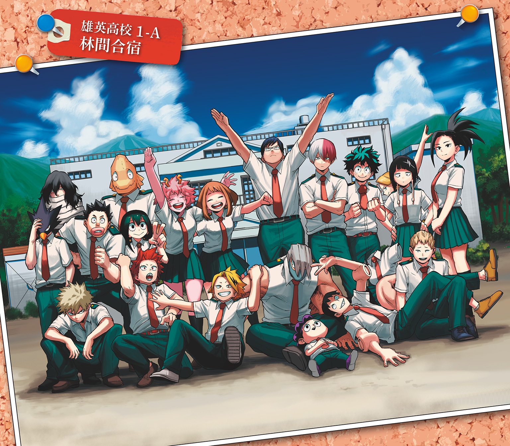

| 僕のヒーローアカデミア 雄英白書 II 林間合宿：裏面 | |
| 堀越耕平 & 誉司アンリ | |
この本は縦書きでレイアウトされています。
また、ご覧になる機種により、表示の差が認められることがあります。

CONTENTS
★この作品はフィクションです。実在の人物・団体・事件などには、いっさい関係ありません。
よく晴れた六月最後の日曜日、目前まで迫る暑気を予感させる気持ちのいい絶好のお出かけ日よりだ。
だが、緑谷出久はそんな天気が広がっている窓の外には見向きもせず、自室の机にかじりついている。期末テストのためだ。天下に名を馳せる雄英高校ヒーロー科といえど、学生である以上、本分は勉強なのだ。普通の学生のように、普通にテスト勉強もする。
だが、普通ではない箇所が一つある。左手だ。
右手は数学の問題を解いているが、左手はハンドグリップを握っていた。頭で難しい数式を解いている間も、左手は絶え間なく動き続ける。
一年前は難しかった。
憧れのオールマイトに出会い、〝個性〟を譲り受けるために貧弱だった体を鍛えに鍛えた。海岸清掃をしつつ、雄英高校の受験勉強中も鍛え続けた。初めは右手と左手で別のことをやるなどなかなか集中できなかったが、それでも続けるうちに次第に慣れた。オーバーワークで倒れたことなど、今では笑い話になるくらいに。
誰かを救けるためには、力がいるのだ。
「ふう」
自分で決めた範囲を終えて、出久は一息つき顔を上げて部屋に張っているオールマイトのポスターを眺めた。左手もいったん休憩だ。
ポスターのオールマイトは、筋骨隆々な体でニカッと笑っている。
憧れ。安堵。気合。高揚。
オールマイトは出久のやる気を間欠泉のように引き出す。憧れのヒーローになるための尽きることがないエネルギーだ。
「......よしっ、やるぞ！」
出久は教科書のページをめくる。普通科目の成績はクラスでも上位のほうだから、それほどの不安はない。けれど、今回は絶対に合格点をとらなければいけないのだ。
なぜなら、赤点をとった者は林間合宿に行けない。
「......上鳴くんたち、大丈夫かなぁ......」
問題に取りかかろうとしていた出久は、一瞬心配そうに顔をしかめた。赤点のペナルティを知ったクラスメイトの絶望っぷりを思い出したからだ。
そういえば、八百万さんに勉強教えてもらうって言ってたっけ。......優秀な八百万さんが教えるんなら、きっと大丈夫だよね。
八百万のキリリとした面立ちを思い出し、出久は改めて机に向かった。
クラス全員で林間合宿に行けることを願いながら。
一方その頃、耳郎響香は出久が心配していた上鳴電気たちと一緒に、八百万百の家の前に来ていた。
「え、ここ......？」
「ウソだろ......どっかの大使館じゃねーの......??」
上鳴と瀬呂範太が呆然と呟く横で、尾白猿夫がスマホで地図を確認して言う。
「いや、住所はここで合ってるよ......」
「超～豪邸!!!」
芦戸三奈が簡素に、そして素直に驚きを口にした。
五人の前にそびえ立つのは、門。首を真後ろに倒させてしまうほどの高さと豪奢な造りをしている。門に続いている塀も同じように高く、永遠に続くのかと思うほど果てしない。
最寄駅で待ち合わせしてやってきた五人は、八百万の家に向かう途中に現れたあまりに延々と続く壁の存在に気づいたとき、最初はなんの建物なのかと興味を引かれるくらいだった。けれどそれが目的地に近づいても一向に終わってくれないので、耳郎たちはじんわりと嫌な予感をつのらせながら歩いてきた。上鳴と芦戸は、そうでもなく楽しく会話しながら歩いてきたが。
とにかく、塀と門だけでも圧倒されるのに十分だ。もしここがどこかの国の大使館で、耳郎たちが別の国のスパイだとしたら、「今日はいったんやめとこうか」と踵を返し、対策を練らなければならない。
いや、スパイでなくても「今日はいったんやめとこうか」といますぐ踵を返したいくらいだと耳郎は思う。
お嬢様だと思っていたが、まさかこれほどとは。
人間、予想以上の事態には及び腰にもなるというもの。
耳郎の眉が不安そうにしかめられたそのとき、目の前の門が開いた。大きな門のわりにはスムーズに開かれ、よく手入れされているのがわかる。
「耳郎様、芦戸様、上鳴様、瀬呂様、尾白様でございますね」
開いた門の先には礼服を着たやや小柄な老人が立っていた。七十代前半といったところだろうか。柔和な顔立ちに白髪交じり。だが背はピンと伸びて若々しい印象を与える。
「は、はいっ」
ふだん、年長者から様付けで呼ばれることのない五人はあわてて返事をする。それに応えるように老人は皺を刻みながら品よく微笑んだ。
「よくおいでくださいました。私、八百万家の執事の内村と申します。百お嬢様が首を長くしてお待ちしております。さ、どうぞこちらへ」
「は、はいっ」
五人はぎくしゃくと内村のあとについていく。
「執事！ 本当にいるんだね、執事！」
「執事がいるってことは、もしやメイドさんもいるんじゃねえ!?」
小声ながらも興奮を抑えきれない芦戸の言葉に、上鳴も小声で同意する。耳郎が「ちょっと......」と二人を諫めようとしたその時。
「はい、おりますよ」
執事は二人の会話に、にこやかに答えた。二人のぶしつけな会話にも、気を悪くしてはいないようだ。これほど大きな家の執事ともなると、ちょっとやそっとのことでは取り乱したりはしないのだろう。
森かな？ と思うような美しく手入れされた広大な庭を抜けたところに現れた家に、耳郎たちは改めて圧倒された。大使館どころの話ではなく、城だった。もう一度門の外に戻ってここは日本かと確かめたくなるような、立派な西洋建築が威風堂々と建っている。
「いらっしゃいませ」
そして通された玄関ホールで耳郎たちを待っていたのは、多勢のメイドたちだった。耳郎たちがなんと挨拶をしたものかと戸惑っていると、ホールの奥から小走りでやってくる女性がいた。
「まぁまぁいらっしゃい......！ いつも百がお世話になって......。百の母でございます」
「あっ、こんにちは」
五人を前にふわりと笑う顔は、八百万を大人にし、やわらかくしたような印象だ。
「こんなにたくさんお友達がいらしてくれるなんて、とても嬉しいわ。......あら、あなた」
「え」
耳郎は思わず自分の服を見た。八百万母の視線がじっと自分の服に注がれていたからだ。
自分で襟ぐりを大きく切りカスタマイズした肩出しＴシャツに、革パン、手首には革に鋲のついたブレスレット。自分の中では、おとなしめのセレクトだ。
（......なんか、ヘン？）
やわらかそうなカーブを描いていた八百万母の眉が、わずかに寄せられたような気がする。だが、それは繕うような笑みにすぐにうち消された。
「あっ、百は今、講堂で準備をしておりますの。さっそくご案内いたしますわね」
「それでは......」
「いいわ、じいや。私が」
八百万母は執事にそう言うと、「どうぞこちらへ」と五人を案内するように家の奥へ進んでいく。五人はゆったりとした歩みについていきながら、しげしげと家の中を見回した。
花と植物の描かれた壁紙に、大理石の床。廊下の壁にはどこかで見たことのある絵画や壺が飾ってあったり。
「ベルサイユ宮殿だ......行ったことないけど」
「だな......行ったことないけど」
「同意だよ......」
啞然と呟く上鳴たちに、耳郎も心の中で同意したその時、芦戸が感心したように言う。
「ここがヤオモモんちなんだねー。そりゃお嬢様だわ！」
「ヤオモモ？」
芦戸の言葉に、八百万母が振り返る。耳郎はあわてて口を開いた。
「あっ、ヤオモモはヤオモモの......じゃなくて、えっと百さんのあだ名っていうか」
「まぁ、百はあだ名で呼ばれているのね！ ヤオモモ......ヤマモモみたいで可愛らしいわ。私もつけてもらいたいくらい」
「それじゃ、ヤオモモのママだから、ヤオママだ！」
「私のあだ名？ 嬉しいわ、ヤオママと呼んでくださらない？」
「ヤオママー！」
「はーい」
無邪気な芦戸の提案に、言葉どおり嬉しそうに笑う八百万母は心からの笑顔に見える。けれど耳郎にはさっきの八百万母の視線が喉に引っかかった小骨のように残っていた。
もしかしたら、こういう服とか嫌いなのかな？ でも、他のみんなとそんな変わんないと思うんだけど......。
「どした？ 下ばっか見て」
上鳴に声をかけられ、耳郎は顔を上げる。頭悪いのに、たまに鋭い。
「......うっさい。べつに、きれいな廊下だなって思っただけ」
「あ～、だよな。夏とかここで転がりてえよな。涼しそう」
「転がりたくはない」
「あっ、なんだよー」
能天気そうな上鳴の顔に、耳郎はふっと小さく息を吐いた。
服を気にしてもしかたがない。今日は勉強を教わりにきたのだ。
「アンタが一番がんばんなきゃいけないんだからね。なんせクラス最下位なんだから」
「......言うな、言うな。みなまで。すべては八百万先生にかかっているんだからよ」
「ヤオモモにすべてを託すな」
「だから、みなまでだって言ってんだろー」
それから少しして、やっと五人は講堂に着いた。講堂というだけあってさすがに広い。その片隅に長いテーブルと椅子が用意されていた。
「百、お友達をお連れしましたよ」
「みなさん、ごめんなさい。お出迎えもせず......。さっきまでどの参考書がいいか迷っていましたのっ」
講堂で待っていた八百万は、メガネをかけ先生仕様だ。上気した頰とキラキラとした目が、今日の日を心待ちにしていたことを物語っている。
「それじゃ、私はこれで......。あとでお茶を持ってまいりますわ。百、しっかり教えてさしあげるのよ」
「はい、お母様」
扉を閉め八百万母が出ていくと、耳郎は人知れずホッとしてしまった。そんな自分がやる気満々の八百万の前で、少しだけ後ろめたい。そんな耳郎には気づかず、八百万は鼻息荒くみんなに声をかける。
「さっ、おかけになって。さっそく勉強を始めましょう！」
「おー！」
「よろしく」
「頼むぜ、八百万先生！」
「先生の肩に、俺の林間合宿がかかってんだ......！」
「だから託すなっての」
みんなからの期待に、八百万は感動に打ち震えながらしっかりと答えた。
「任せてください！ 必ずみなさんのお役に立ってみせますわ......！」
かくして、勉強会は始まった。
その頃、とある図書館ではまた別の勉強会が始まろうとしていた。
「頼むぜ、爆豪！」
「うっせーんだよ、クソ髪！」
日当たりのいい窓際の席で切島鋭児郎と爆豪勝己がそう言うと、本を読んでいた周りの大人や子供たちから視線を向けられる。静かにしてという目線だ。
「すんません！」
切島があわてて周囲に謝るがその声も大きく、おじいさんから「威勢がいいねぇ」と苦笑されてしまった。今日は日曜日。幼い子を連れた家族や、調べものをしにきた学生からお年寄りまでまぁまぁの混雑具合だ。
なぜ二人が勉強会をすることになったかというと、八百万が関係していた。
普通科目の成績は八百万がクラス一位で爆豪が三位。上鳴たちに教えを乞われる八百万を見て切島が「この人徳の差よ」とからかったところ、「俺もあるわ！ てめェ、教え殺したろか」と爆豪が返したのを切島が本気にしたのだ。ちなみに切島は十五位である。
「なぁ、家じゃダメだったのかよ」
地声が大きい切島が、声を抑えて聞く。
「お前んちまで行ってられるか、めんどくせえ」
爆豪はあまり気にすることもなく、いつもどおりの声で答えた。
「じゃあお前んちでも」
「ババアがうるせえんだよ。チッ、ちゃっちゃと終わらせるからな」
「おう！ ......あ、すんません......」
周囲の視線をまたしても集めてしまい、切島は小さくなる。図書館というものは、喧騒とはかけ離れていなければならない場所なのだ。だから、昔からあまり縁はない。
しかし、勉強は教えてもらわなければいけない。林間合宿に行けなくなってしまう。
「いちいち謝ってんじゃねーよ、バカか。あ、バカか」
「バカじゃねーよっ？ バカじゃねーけど、お前よりはバカだから教えてもらうんじゃねーか」
「一回しか教えねーからな、さっさとしろ」
「おう！ ......あ」
「いーからさっさと問題見せろやっ」
「じゃあまず......これだな」
周囲の視線を気にしつつ、切島は持ってきた教科書を開いて、引っかかった問題を指さす。二次関数の応用だ。
「いや～、数学はさっぱりでよ」
「んなもん簡単だろ......」
そういうと、爆豪はわずかに考えてから、サラサラと答えを書きだした。
「こうだよ」
切島の目が点になり、それから苦笑いする。
「いや、答えじゃなくて、答えの出し方を教えてほしいんだって」
「答えなんて、まんま計算すりゃ出てくんじゃねーか。アホか」
「いや、だからそのまんまがわかんねーんだって」
「は？ 数学なんてまんま計算するだけだろーが」
「いやいや、だから計算のコツみてえなのを教えてほしいんだよ」
「だから、この式に当てはめてやるんだよ」
「違うんだよ、だからそれをわかりやすく......」
「だから、まんまかけたり足したりすりゃいいじゃねーか」

なに言ってやがんだ、こいつ、とばかりに切島をにらんでくる爆豪はごくごく真剣だ。
（――なんてこった）
切島は頭を抱えた。爆豪は地頭がいい。だいたいのものは見て、なんでもすぐに理解してしまう。つまり、勉強で苦労をしていない。苦労をしていないということは、わからない、ということがわからないのだ。
「ここをバーッと計算してから、こっちをガーッて計算すりゃいいんだろが」
それでも精一杯教えようとしているのだ。爆豪のなんともおおざっぱなアドバイスに切島は涙をぐっとこらえてサムズアップをしてみせた。
「男らしい教え方だぜ......」
「あぁ？」
眉を寄せる爆豪は、切島の態度を見てさらに眉間の皺を深くする。
「まさかてめェ......九九を教えろって言ってんじゃねーだろうな......？」
「九九くらいわかるわ!!」
シーッ。周りの人が人差し指を口の前にして、静かにしろと促す。思わず今日一番の大声を出してしまい、恥ずかしそうに顔を赤らめる切島を見て爆豪は愉快そうに笑った。
「へっ、だせえ」
「お前が九九とか言うからだろーがっ」
切島が周囲に何度目かの「すんません......」を呟いたとき、絵本を抱えた一人の男の子が近づいてきた。つぶらな瞳でじーっと爆豪を見つめてくる。
「あ？ なんだ、このガキ」
「ん？ 迷子か？」
心配して声をかける切島に男の子は「んーん」と首を振り、爆豪を指差した。
「ゆーえーたいいくさいでゆーしょーしたのに、しばられてたおにーちゃんだよね？」
「あ？」
「どーしてしばられてたの？ うるさかったから？ としょかんでもうるさくするとしばられちゃう？」
雄英体育祭で、手も付けられないほど激高した爆豪は、優勝したというのに表彰台でガチガチに拘束されたのだ。無垢な子供の指摘に、決勝で本気を出さなかった轟から自動的に転がってきたような不本意極まりない優勝を思い出して、爆豪の堪忍できない堪忍袋が破裂した。
「うるせえ!! クソガキ！！！！」
切島が止める間もなく、図書館に爆豪の怒号が響き渡った。人生で初めて他人に怒鳴られた男の子の目がうるりと揺れて、顔が歪む。そして今度は嵐のような泣き声が響き渡る。
「すっ、すんませんでしたぁー!!」
喧騒に満ちる図書館から、切島はあわてて逃げるように爆豪を連れ出した。
切島の林間合宿参加が危ぶまれだしたその頃、耳郎は引っかかっていた二次関数の応用問題をきちんと理解できたところだった。
「なるほどねー、こうやって解けばよかったんだ」
「ええ、耳郎さん。一見こちらに引っかかりそうになってしまうんですけれど、きちんと問題を見れば大丈夫ですわ」
「さすがヤオモモ、すっごくわかりやすい！」
「まぁそんな......」
八百万の理路整然とした説明はとてもわかりやすかった。耳郎が素直な感想を口にすると、八百万は嬉しそうに頰を染める。
「ヤオモモせんせー！ この英語の訳、どうすりゃいいのー？」
「ちょっとお待ちになって、芦戸さん......。あぁここはですね......」
八百万が立てた勉強プランは完璧で、それぞれの学力に合わせた問題まで用意してくれていた。
それぞれのウィークポイントの傾向と対策。懇切丁寧なわかりやすい教え方。時間を割いて、自分たちのために用意してくれていたのだと思うと、初めは豪邸という環境になかなか慣れなかった耳郎、瀬呂、尾白も、八百万の教え方にきちんと勉強に集中することができていた。芦戸も林間合宿で肝試しをするんだと猛烈に集中している。
「う......頭が破裂するぅ～......」
だが、ただ一人、すでにいっぱいいっぱいになってしまった男がいた。上鳴だ。体育祭やら職場体験やらとめまぐるしい行事に流されて、まったく勉強してこなかったつけが脳みそに回っていた。
「ＸとＹがイオン結合して......助動詞がシュメール人とクラウン・ショック......」
「あ、もうしてるわ、破裂」
電気も放出していないのに、アホ面になりかけている上鳴を見て左隣の耳郎が言うと、右隣の瀬呂が励ます。
「しっかりしろよ！ 林間合宿行くんだろ？」
「そうだよ、相澤先生も言ってただろ。もし赤点とったら林間合宿行けないどころじゃなく、学校で補習になっちゃうんだからさ」
「あああああ～......！ 誰か......誰か俺の頭を交換してくれえ！」
同じく励まそうとした尾白の言葉に、上鳴は迫る現実に爆沈する。その様子に尾白は「なんかごめん......」と申し訳なさそうに謝った。
「上鳴さん......。では、そろそろ休憩を入れましょうか。適度な休憩を挟んだほうが効率も上がりますしね」
そう言うと八百万は、扉の外に向かって「じいや」と呼んだ。するとすぐに扉を開けて執事が入ってきた。
「お茶の用意をお願い」
「ただいま」
（もしかして、ずっと待機してたのか......??）
目を丸くする耳郎たちの前で、今度はメイドたちがワゴンでお茶とクッキーを持ってくる。見るからに高級そうなティーセットがスッと用意され、熱い紅茶が注がれる。湯気とともにふわりといい香りが漂った。休憩を邪魔しないように配慮してか、執事とメイドたちは給仕を終えると静かに講堂を出ていく。
「さ、みなさん召し上がって」
八百万の声を合図に、みんないったん勉強の手を止め、そっと紅茶に口をつける。
「メイドさんが淹れてくれたお茶......」
丁寧に淹れられた紅茶の雨が、上鳴の乾いた心の大地に染み渡った。
「ん、ホッとするぅ～」
ほへえ～と脱力する芦戸。耳郎は優雅に紅茶を飲んで息をつく八百万に聞いた。
「ハロッズ？ だっけ」
「ええ、勉強のときはこのブレンドされたものを愛飲しているんです。産地が違うそれぞれのフレーバーが複雑な渋みを醸し出して、疲労した脳をリラックスさせつつリフレッシュさせてくれる感じがして......」
「よくわかんねーけどうまい」
「ふだん、あんまり飲まないけど紅茶もいいねー」
瀬呂と尾白もどうやら気に入ったらしい。芦戸は紅茶とともに出されたクッキーに目を輝かせる。茶色のクッキーだ。
「このクッキーもおいしそ～」
少し形が歪な気もするが、きっとどこぞの高級店から取り寄せた美味しいものに違いないとみんなが思いながらクッキーを口に放りこんだ。八百万はみんなが食べるのをにこやかに見守っている。
やってくるのは滋味深い甘さに違いない――と、期待していた舌がまず最初に感知したのは、複雑な苦みだった。
「.........？」
五人は予期せぬ味に首をかしげる。だが、思考する間もなく次にやってきたのは、強烈なえぐみと辛み。そして塩辛さ。刺激をともなったそれは、ピリピリと舌を、口を、喉を攻撃する。それらの後ろに隠れていた生臭さが鼻孔をしつこくくすぐってきた。
「っ......!!」
人が飲みこむものではない。本能がそう告げているが、この豪邸という環境が自分の舌を疑わせる。
これが、セレブの味なのか......？ と。
「どうかなさったの？ みなさん......」
吐き出すのをこらえるために口を押さえたり、青ざめたり、脂汗をかきはじめたりした五人の様子に、八百万が気づく。五人は美味しい紅茶でクッキーを飲み下した。
「もしかして、お口に合いませんでした......？」
「......い、いやあ、そんなこと......」
「セレブのクッキーって、すごいね......」
なんとか口を開いた尾白と芦戸に、八百万は恐る恐るクッキーをつまんで口に入れた。
「―――!?」
次の瞬間、八百万の顔が衝撃に歪んだ。
「ちょっ......失礼しますわ......っ」
口を押えながらあわてて出ていく八百万。
残された五人は、足音が遠ざかってからクッキーの不味さに打ち震えた。
「うわ～、まだ味が残ってる～！」
「もはやクッキーじゃねーな......兵器だったな」
味を流そうとゴクゴク紅茶を飲み干す芦戸に、訝しそうにクッキーを眺める上鳴。
「でも、これ眠気覚ましにはいいよね。一発で目が覚める」
フォローするように言う尾白に真剣な顔で諭す瀬呂。
「その前に、もう一回食べる勇気で目が覚めるぞ」
耳郎も紅茶を飲み干してから、扉を見つめた。
「ヤオモモも不味かったのかなー？ あわてて出てっちゃったけど......」
「ま、すぐ戻ってくんだろー」
しかし、その上鳴の言葉とは裏腹に、八百万はなかなか戻ってこなかった。勉強を始めてるかと再開したはいいものの、先生がいるといないでは集中も効率も雲泥の差だった。
そうしているうちに耳郎は尿意をもよおした。口に残る味を流そうとガブ飲みした紅茶のせいだ。
「ちょっとウチ、トイレ行ってくる」
「あ、私も行くー！ 飲みすぎたー」
立ち上がった耳郎と芦戸が扉を開けると、メイドが一人待機していた。何か用があったときのために控えていてくれたのだろう。トイレの場所を聞くと、「こちらです」と案内してくれる。
迫る尿意に急いでもらうが、長い廊下を曲がりくねり、芦戸の我慢が限界に達しそうな頃、やっとトイレに辿り着いた。
「ふぁ～、間に合った～」
「広いと大変だなー」
手を洗い、爽やかな笑顔で出てきた二人はふと足を止めた。
「......あれ？ どっちから来たんだっけ？」
「ん～......？」
右と左、どっちを見ても、長い廊下が続いている。右から来たような気もするし、左から来たような気もする。
メイドはいない。トイレ前で待機しているとのメイドに、気恥ずかしかった耳郎は帰りは大丈夫ですと戻ってもらったのだ。
「......とりあえずこっちっぽくない？ 行ってみよ」
「あっ、ちょっと」
少し考えた芦戸は、直感で右に歩きだした。耳郎はあわててついていく。
「おっせーな、あいつら。迷子になってたりして」
そうからかうように笑う瀬呂に尾白が「んー」と眉を寄せる。
「この家ならありえるよ」
「でも、メイドさんに案内してもらってたから大丈夫だろ？」
「それもそうか」と笑う尾白。そんな二人の前で、上鳴はノートに頭をこすりつけるようにうごめいていた。
「............」
うごうごと上半身を動かすさまは、まるで大きな芋虫のようだ。さすがに見過ごせなくなり、尾白と顔を見合わせた瀬呂が代表して声をかける。
「......さっきから何やってんだよ？」
「こうすれば、知識が頭に入ってこねーかなーと」
「いや、逆にせっかく頭に入れたのが出ていきそうだよ、それ」
冷静な尾白の指摘に、涙目の上鳴ががばっと顔を上げる。
「じゃあどうすりゃいいんだよー！」
「普通に勉強するしかないだろっ!?」
「もう、俺の脳のキャパがいっぱいいっぱいなんだよ～！ もう一文字も入んねーんだよぉ！ うう......さよなら、オレの林間合宿......っ、こんにちは、補習地獄......！」
メイドのお茶で心が潤ったのはつかの間の夢だったようだ。すっかりあきらめモードに入った上鳴を放っておくこともできず、尾白と瀬呂は慰めにまわる。
「だ、大丈夫だって！ まだ時間はあるんだからさ」
「そうそう！ 人間、集中すればどんな困難でも乗り越えられる！ 校訓思い出せって」
「プルスウルトラ！」
「......もう一文字も覚えられねーのに？」
上鳴のあきらめモードはなかなか切り替わらない。ふだんならわりとなんでもポジティブにとらえる性質だが、勉強というストレスが、ネガティブにギアチェンジさせている。
「その一文字がプルスウルトラじゃないかな」
「尾白の言うとおりだぜ、一文字超えれば、お前は林間合宿に行けるって！ な！」
クラスメイトの温かい励ましに、上鳴の固くなっていたギアがゆっくりと動きだす。
「......そうだな！ あと一文字超えれば......」
そう言いながら上鳴が目を落とした英語の教科書には、ぎっしりと並んだ英文。ＡからＺが好き勝手に並んだようにしか見えない文字の羅列。
ぱぁんと上鳴の脳細胞が弾けた。
「やっぱムリムリムリー!!」
現実逃避するようにつっぷす上鳴の耳には、尾白と瀬呂のあきれながらも気遣う声は入ってこない。その代わりに、数日前の峰田実のからかうような声を思い出した。
――いざとなったら......しかねえんじゃねえ？
「......ははっ」
上鳴が乾いた笑いをこぼす。それは数日前、八百万の家で勉強会をすると言った上鳴に、峰田がそれでもだめなら......と続けた言葉だった。
「おい、マジで大丈夫かー？」
「そんな疲れてんなら、今日はもう帰って寝たほうが......」
勉強のしすぎでおかしくなってしまったかと真剣に心配する瀬呂と尾白に、上鳴は苦笑しながら言う。
「違うって、峰田がさー、八百万に勉強教えてもらってもダメなら、もうカンニングするしかねえなんて言ったの思い出してさー」
「ハハッ、カンニングなんかしたら林間合宿行けないどころの話じゃなくなるだろー」
「笑いごとじゃないよ、本当にしたら退学ものだって」
そう言いながらも、尾白も瀬呂と一緒に笑う。上鳴も笑った。
「だよなー」
そんな上鳴の目に瀬呂の肘が映る。瀬呂の〝個性〟のテープを発射する肘。テープは自由自在に伸ばしたり引き寄せることもできる汎用性の高い〝個性〟だ。そして、上鳴はクラスの席順を思い出す。瀬呂の席は、上鳴の斜め後ろだ。
「ははは......はは............いや、アリなんじゃねえ......？」
「は？」
笑いを消した上鳴のやけに真に迫った声に、瀬呂と尾白はきょとんと上鳴を見た。
「うあー、こんぐらい騒がしいほうがやっぱ落ち着くなー！ な、爆豪！」
「勝手に落ち着いてろや」
図書館から逃れてきた切島と爆豪は、駅前のファミレスに避難した。休日の午後、お昼の混雑のピークは過ぎたといっても、様々な客層で賑わっている。そこかしこでしゃべり声がしているため、多少の声には誰も見向きもしない。
「ご注文はお決まりですか？」
「ドリンクバー二つで！」
注文をとりにきたウェイトレスに即答する切島に、爆豪が言う。
「奢りだろうな？」
どっかと深く腰をかけながら、当然のように確認する爆豪に、切島は思いきりのいい笑顔で答えた。
「おう、任せとけ！ そのかわり根気よく教えてくれよ！」
「ドリンクバーくらいで根気よくなってられるか、クソが」
「では、ドリンクバーあちらになっておりますので、ご自由にどうぞ」
ウェイトレスが業務用の笑顔で去っていくと、切島はおもむろに立ち上がった。
「俺、持ってきてやるよ。何がいい？」
「コーラ」
「おう、わかった！」
切島がドリンクバーに向かったあと、同じくドリンクバーに向かう途中だった人影が爆豪のテーブルの前で止まった。
「......あれ、カツキじゃん！」
「あ？」
「ん？」
切島が飲み物を持って席に戻ると、見知らぬ客が二人増えているのに気づいた。黒髪のくせっ毛の少年と、センター分けのロン毛の少年が、親しげに爆豪と話している。
「まさかこんなとこで会うなんてなー」
「見たぜー、体育祭！」
「うっせ!! 黙れ！」
「爆豪、なに、知り合いか？」
切島が声をかけると、センター分けが「あ、雄英の人だー」と気づく。
「中学んときのダチだよ。さっさと自分のテーブル戻りやがれ」
「なんだよ、冷てえなぁ」
ぶっきらぼうに答える爆豪に、友人たちは名残惜しそうに顔をしかめながらも立ち上がろうとする。切島は笑顔で二人を制した。
「あ、じゃあ座っててくれよ！」
「え、いいの？」
「もちろんだぜ、つもる話とかあるんだろ？」
「んなもんあるか。つーか、勉強は」
「ちょっとくらいかまわねえさ。ダチは大事にしねえとな！」
「......なんだ、あんた。カツキの友達と思えねーくらいいい人だな」
切島の男気オーラあふれる笑顔に、くせっ毛が眩しそうに目を細める。そんなくせっ毛の言葉に、爆豪と切島は同時に口を開いた。
「どういう意味だ、クソが！」
「爆豪は口や態度は悪ぃけど、自分の信念にまっすぐで熱い男だぜ！」
爆豪は、切島の言葉にさらに顔をしかめた。
「気持ちワリィこと言ってんじゃねえ、クソ髪！」
「うん、相変わらず口悪いわー。褒めてんのに」
懐かしむようなセンター分けに、切島は好奇心が湧きあがるまま問いかけた。
「なぁ、中学んときの爆豪ってどんな感じだったんだ？」
「どんな......あー、こんな感じだよなー？」
「唯我独尊って感じだな」
「地球は自分中心に回ってるみてえな」
「......てめえら、殴られてえんだな？ あ？」
爆豪がイラついたように拳を握る。
「わー、将来のヒーローが暴力振るうなよ！」
「うっせえ！ どけ、クソモブどもが」
そう言って、隣に座っていたくせっ毛を立ち上がらせると、爆豪はいつの間にか飲み干していたグラスを持って、ドリンクバーに向かった。今度は自分で持ってくるようだ。
「......でも、中学んときよりかは、なんつーか......少し落ち着いたような気もすんな」
爆豪の背を見送って、ポツリとくせっ毛が呟く。センター分けも「かもな」と同意して続けた。
「中学んときだったら、本当に一発くらい殴ってるよなー。それに、人に勉強教えようとすんのもありえねえし」
「だよなー。やっぱ雄英ってすげえな。......どう？ 雄英でのカツキは」
聞かれて、切島は少し考えてから答える。
「さっきも言ったとおりだぜ。アイツは裏がねえから、一緒にいて気持ちいいんだ。実力もあるし、そこはみんな認めてると思う」
そう言いながら切島は爆豪の昔の話を聞き、入学当初の頃のことを思い出していた。
確かに出会ったばかりの頃の爆豪は、常に苛立っていたように思う。今よりもっと辛辣で、口を開けば誰かを威嚇していた。とくに、目の敵にしていたのは緑谷だ。
「そういえば、緑谷も同じクラスだったんだろ？」
切島がそう言うと、くせっ毛とセンター分けは微妙な顔をして「まぁ......」と歯ぎれが悪くなる。
切島は入学当初の緑谷のことを思い返した。
ものすごい〝個性〟があるのに、力を操り慣れていないのかケガばかりしていた。力がある半面、性格は真面目で不思議なほどどこか自信なさげだった。
「カツキはともかく、まさかあの緑谷が雄英に行くなんてなー......」
「あの？」
くせっ毛が、苦笑しながら後ろめたさを隠すように頭を搔く。
「あー......実はさ、オレら緑谷のこと、けっこうバカにしてたんだよな......。〝個性〟もねえと思ってたし」
「なのに、あんな力があるなんてよー」
「......テレビで体育祭見てて、緑谷が予選一位になったとき鳥肌立っちまった。純粋にスゲーッて......」
「なー......」
けれど、その声色には悔いるような感情が滲んでいた。顔も、バツが悪そうに苦くしかめられている。
卑怯なことが嫌いな切島には、誰かをバカにしたりする気持ちはわからなかった。わからなかったけれど、自分のしたことを後悔している人間を責める気もなかった。それができるのは当事者だけなのだろう。けれど、その当事者ならきっと――。
「緑谷、そう言ったらきっと喜ぶと思うぜ！ あ、いや照れるかな？」
オールマイトのようなヒーローを目指す緑谷なら、きっとなんでもないように笑って許すだろう。いや、もしかしたら許すという概念さえないかもしれない。緑谷にとって、苦しんでいる人を救けるということは、息をするように当たり前のことのような気がする。
「......そうかもな」
「アイツ、人がいいからな」
少しホッとしたようにそう言うくせっ毛とセンター分け。心の重荷が少し取れたのか、二人は堰をきったように話しだした。
「でもよ、こんなことカツキの前じゃ言えねえけど、トーナメントも燃えたよなー！ あの氷のヤツとのバトル！」
「あの緑谷がガチの殴り合いなんてなー！ けっこうサマになっててよー」
「そうそう、一発返したときは思わず、おー！ なんて言っちまった」
「惜しかったよなー、緑谷！ もしかしたら決勝行って、カツキといい勝負でもしてたんじゃねえ!?」
「......デクがなんだって？」
その声にハッと振り返る切島たち。コーラ片手に、怒りに顔をひくつかせている爆豪がいた。ビキビキと目が吊り上がっていく。
「デクがサマになってただぁ......？ 寝言は寝て言え!!! おめーらの目は節穴か!!! その穴ん中でキレイな大爆破見せてやるよ！！！！！」
「爆豪、落ち着けって！」
「うるせえ!! クソどもが!!!」
「緑谷のこととなると......あああっ、やっぱ変わってねえ～！」
「デクの名前を出すんじゃねえ!!!」
「カツキ、やめろってぇっ」
つかみかかる爆豪から逃れようとするセンター分けとくせっ毛、押さえようとする切島の間でテーブルが揺れ、置いていたグラスが倒れて床に落ち、割れる。爆豪の怒りはもはや喧騒の範疇に収まらず、他の客が何ごとかと注目してくる。
「あの子、どっかで見た......」
「あっ、雄英の」
「ヘドロの」
「ほら、体育祭で拘束されてた子よ」
「あぁ、あの」
爆豪に気づいた客たちの囁きは爆豪の怒りをさらに焚きつけた。
「うるせえ!!! モブ客どもは黙ってクソめしでも食ってやがれ！！！！」
「お客様」
叫んだ爆豪の肩をつかんだのは、いかつい体格の店員だった。ネームプレートには店長の肩書がついている。
「他のお客様のご迷惑になりますので、もう少しお静かに......」
しかし、言葉だけで爆豪の怒りが止まれば、地球はもう少し平和になっている。
「うるせえ!! 俺も客だろうが！！！！」
「他のお客様にご迷惑をかけるお客様は、お客様ではございません。そして当店は、クソめしも出しておりません」
そして、爆豪たちはファミレスを追い出された。
「てめーらがデクの話なんかするからだ!! つーか全部クソデクのせいだ!!!」
「落ち着け、爆豪!!」
「じゃ、じゃあまたなー！」とあわてて去っていく友人たちにヒートアップする爆豪を押さえながら、切島は思う。
入学当初からすれば、爆豪も少しは落ち着いたような気もする。緑谷も自信ができたような気がする。けれど、爆豪の導火線が長くなるのは、しばらく先のような気がする。
そして、切島のバッグの中にある教科書とペンケースの出番ももう少し先になりそうだ。
勉強は自力でがんばるしかねえ......！ と切島が覚悟していた頃、耳郎と芦戸は豪邸の中で迷っていた。
「やっぱ、メイドさんに待っててもらえばよかった......」
「ま、歩いてればそのうち着くって！」
眉をわずかに寄せて落ちこむ耳郎に、芦戸はあっけらかんと笑う。
「こんな機会めったにないじゃん!? 講堂探しながら探検しよー！」
「ええ？」
「たんけんっ、たんけんっ」
そういうと芦戸はスキップでもするように楽しげに歩きだした。耳郎も芦戸のあとを追いかける。
「ねー、あとでヤオモモの部屋も見せてもらおーよ」
「あぁうん......」
同じようなドア、壁が続くと、ここは実は迷路なんじゃないかと疑いたくもなる。
（こういう家に住んでるって、どういう気持ちなんだろ）
生まれてからずっと住んでるから、八百万にとってはこれが普通の家なのだ。
耳郎は、ふと八百万母の視線を思い出した。
「............」
改めて、また自分の服を見てしまう。
「......ねえ、ウチの服、ヘンかな」
「服？ カッコかわいいよ！ ......ん？ ライブラ......あ！ ここ図書室だって！」
ひときわ大きい扉のプレートを見て「へえ～！」と珍しそうに声をあげる芦戸を見ながら、耳郎は小さく息を吐いた。
芦戸とは趣味が近い。細かく分けると派閥は違うが、ジャンルは同じになるだろう。けれど、八百万とはジャンルが違う。
耳郎がパンクファッションなら、八百万は清楚系。
耳郎が好きな音楽がロックなら、八百万はクラシック。
趣味も、外見も、育ってきた環境も全然違う。共通項といえば、性別くらいだろう。
それでも、いつのまにか仲良くなっていた。
ヤオモモはいい子だ。完璧に見えて、どこか自信なさげだったりするけれど、自分のベストを常に尽くそうとしている。何かを鼻にかけることもないし、普通に話しやすい。
これからも、普通に友達でいるはずだ。
だからこそ友達の家族によく思われないのは、少しキツイ。
「耳郎様、芦戸様、こちらにいらしたんですね」
「あ、執事さん......」
後ろから声をかけられて、耳郎が振り向くといつのまにか執事がやってきていた。もしかしたら芦戸の声を頼りにやってきたのかもしれない。
「申し訳ありません。ちゃんとご案内するように申し付けておいたのですが......」
「あっ、ウチが戻ってくださいって言っちゃって」
「しかし迷わせてしまったのは私どもの責任です。大変申し訳ありません」
「全然大丈夫だよ！ 探検できておもしろかったし」
「それはそれは......では講堂のほうに......」
そう言うと、執事は少し考えこんでからまた口を開いた。
「講堂に戻る前に、百お嬢様の元へ参りましょうか」
そうして執事のあとをついていくと、なにやらうっすらとヘンな匂いが漂ってきはじめた。歩いていくにしたがって、その匂いは濃くなっていく。
「うう、これなんの匂い!?」
我慢できず鼻をつまみながら声をあげた芦戸に、執事は足を止め、振り返った。
「......さきほどのクッキーの匂いでございます」
「え？ あのクッキー？」
「どうぞあちらへ......」
執事は耳郎たちに先へ行くよう促す。戸惑いながらも、なんとなく足音を忍ばせて二人は突き当たりにあるだろう目的地へ進んでいく。
「......お母様、それもちょっと......やめておいたほうがよろしいのでは......？」
「まぁどうして？」
聞こえてきたのは八百万と八百万母の声だ。芦戸と耳郎は、そっと中をのぞく。
「さすがに青魚とチョコレートは合わないのでは......」
「でもね、百。青魚に含まれている油は脳にいいのよ？ それにカカオも。大丈夫よ、牡蠣と一緒にミキサーにかけてしまえば魚の形は残らないわ。さっきのクッキーにも入れたけれど、わからなかったでしょう？」
そこは厨房だった。本格的な設備はレストランのものと変わらない。平台を前に八百万と八百万母が話している。二人の前には、新鮮そうな魚や、キャベツやほうれん草、ナッツ類に、香辛料などなど、さまざまな食材があった。
話の内容からすると、どうやらさっきのクッキーは八百万母のお手製らしい。
「......ヤオママ、料理は苦手みたいだね～」
こそっと呟いた芦戸に、耳郎も頷く。
（でも意外っちゃ意外だな......。料理なんかしなさそうなのに......。してもそつなくこなしそう......）
二人に見られていることなど気づかず、八百万は言いにくそうに続けた。
「......ですが、その生臭さは......。その、お母様はお気づきになりませんの......？ この匂い......」
「え？ あぁ、そういえばしばらく前からなにも匂わないの。いつのまにか鼻風邪でもひいてしまったのかしら？」
（それって、鼻が麻痺してるんじゃ......）
あまりに強烈な匂いを嗅ぎすぎてしまったのだろうと耳郎は推測した。
「......では、少しお休みになられたほうがよろしいのでは」
「いいえ、休んでなんかいられないわ。私はこのクッキーを作らなくては」
（なんでそこまでして......）
耳郎がそう思ったとき、八百万母が気合を入れるように両手の拳を握りしめ言った。
「だって、百のお友達の期末テストのためですもの！ 赤点をとっては、林間合宿に行けないのでしょう？ 百はお勉強のサポートを、私はせめて、この脳を活性化するクッキーでサポートしたいのよ。せっかくのお勉強会ですものね」
耳郎は小さくハッとして、食材を見る。そういえば、どれも脳にいいと言われているものばかりだ。
「お母様......。お気持ちは、その、とてもありがたいのですけれど......」
「大丈夫よ。さっきはお塩とお砂糖を間違えてしまったけれど、今度は間違えないわ。それに緑茶を入れると匂いがきっと中和されるはずよ。それよりカレー粉のほうがいいかしら？ あ、両方入れてしまえばいいわね！」
（......なんだ、普通のお母さんなんだ）
耳郎は張りきる八百万母を見て、そう思った。
住んでいる家がどんなに大きくても、娘の友達のために張りきってクッキーを作っている。......味的には失敗しているけれど。
「ヤオママ、優しいね！」
「......うん」
耳郎が素直に頷いた時、八百万が二人の存在に気づいた。
「お二人とも、どうしてこんなところに」
「私がご案内しました」
執事がやってきてそっと頭を下げる。もしかしたら執事は、不味いクッキーに隠された意味を知ってほしかったのかもしれないと耳郎は思った。
「お二人とも、その、あのクッキーは無理しなくてけっこうですから......」
八百万が二人にそっと耳打ちする。八百万は八百万で、母親を傷つけたくないようだ。
（......なんだ、普通の家じゃん）
耳郎はすとんと自分の感情が落ちた気がして、小さく笑った。
「......大丈夫。まぁ......独特の味だけど、食べたら頭良くなりそうだし」
「うん！ 勉強はかどりそうな味！」
「上鳴にいっぱい食べさせたほうがいい」
目を丸くする八百万。耳郎と芦戸の言葉を聞いた八百万母は、満面の笑みを浮かべた。
「それじゃ、これも急いで焼き上げますわね！ 上鳴君には、特別に大きなのを用意しますわ」
「それがいいです」
そう答えた耳郎に、八百万母はとりかかろうとした手をふと止めて、耳郎の服装をまた見つめた。気づいた耳郎は、居心地悪そうに身を捩る。
（あー......やっぱこの服はお気に召さないかー......）
「......やっぱり素敵ですわ、その服」
「え？」
耳郎は思いがけない言葉にきょとんと八百万母を見た。
「ごめんなさい、まじまじと見てしまって......。昔ね、一つ上の先輩がバンドを組んでいらしたの。その方の服装に似ていたものだから、さっきもつい見つめてしまって......」
「お母様、女子高でしたわよね？」
「ええ、ボーイッシュでみんなの憧れの先輩だったわ。私も真似したかったのだけれど、どうしても似合わなくて......あぁ懐かしい」
少女のように頰を染める八百万母に、耳郎は「......なんだ」と拍子抜けした。
「ごめんなさい、耳郎さん。もしかしてお気を悪くなさった......？」
心配そうに見つめてくる八百万に、耳郎は笑った。
「ううん、逆」
「逆？ ですか？」
「うん。悩んでソンした」
不思議そうに首をかしげる八百万の後ろで、八百万母が「そうそう」と思い出したように声をあげた。
「忘れるところでしたわ、ケーキも用意してありますの」
そして大きな冷蔵庫から取り出したケーキに、耳郎たちは目を見張る。美しくデコレーションされたチョコレートケーキだ。
「わぁ、キレイ......」
「これ、ヤオママが作ったのー!?」
「いいえ、うちのシェフに頼んでおきましたの。味は保証しますわ」
その言葉に、八百万が安堵したように肩をおろした。
「......では、このケーキを食してから、もうひとがんばりしましょうか」
「おー！ がんばるー！」
ケーキにわかりやすくテンションが上がった芦戸がぴょんっと跳ねるのを見て、八百万と耳郎が顔を見合わせ苦笑する。
そんな綻ぶ花たちを、八百万母と執事は微笑ましく見守っていた。
「あいつら、勉強してんのかなー？」
「していていただかないと困りますわね。とくに上鳴さんは......」
「絶対、だらだらサボってるよ～」
ケーキの用意より先に、耳郎たちは講堂へと戻った。
「ね、驚かせちゃおーよ！」
芦戸の提案で扉をそっと開いた女子たちは、これまたそっと中を覗く。中ではだらだらしている様子はなく、意外にも何事か真剣に話し合っていた。
「......Ｋ計画の勝負は一瞬だ。一瞬ですべてが決まる」
「いや、でも問題は音だと思うよ。さすがに気づかれるって」
いつになくシリアストーンの上鳴の言葉に、眉を寄せて答える尾白。
「......こういうときのためのサポート科じゃねえ？ 音が出ないような、アイテムをつくってもらうんだよ」
「音が出なくなるのは、確かにいろいろ便利だな......」
上鳴の提案に、まんざらでもなく考えこむ瀬呂。
まるで敵対策でも練っているような真剣さだ。
「......いったい何の話をしてんだ？ あいつら。Ｋ計画......？」
「新しいコスチュームのこと??」
「なんだか、入りづらい雰囲気ですわね......」
ヒソヒソと話す耳郎たちにも気づかず、上鳴たちは話し合いを続ける。
「まず課題は瀬呂のテープを出す音の無音化だろ。そして俺と瀬呂のタイミング......。そしていざというときのため、証拠隠滅に芦戸の〝個性〟の酸も欲しいな」
私？ 突然、自分の名前を出され、芦戸がきょとんと目を丸くする。
今までの話の内容からすると、上鳴が瀬呂の〝個性〟のテープを使って、何かをしようとしているらしい。しかも、証拠を隠滅しなければならない何か。
（あ、もしかして）
耳郎が気づいたそのとき、上鳴が自信満々に頷きながら言った。
「よし、オレはこれで林間合宿に行ける......。このＫ計画......カンニングがうまくいけばな......！」
「はぁ!? なにをおっしゃってますの、上鳴さん!!」
「ゲッ!? ヤオモモ!?」
思わず叫んだ八百万に、男子たちが気づいて青ざめる。瀬呂のテープに答えを書いて、テストのときにサッと伸ばしてカンニングするつもりだったのだろう。
やっぱり......と耳郎があきれる横で、芦戸がぷんすかと頰を膨らませた。
「証拠隠滅ってなによー！ 私にもカンニングの片棒担がせるつもりだったの!? サイッテー!!」
「アホじゃなくドバカだな。つーか、尾白も瀬呂も乗ってんなよ」
「面目ない......」
「上鳴があまりに真剣だったから、つい......」
それぞれに詰め寄られて、上鳴は涙目で訴える。
「だって、これ以上頭入んねーんだもん!! そしたらもうカンニングしかねーと思って......！」
そう言って項垂れる上鳴の前に八百万が跪いた。
「上鳴さんっ、あなたはカンニングして雄英に入ったのですかっ？」
「ち、違う！ ギリギリだったかもしんねーけど、そこは正々堂々受験したぜ！」
必死に訴える上鳴を八百万は真剣な眼差しで見つめた。
「......なら、今回だってできるはずです。あなたはやればできる人です。私はそう信じています......！」
「......八百万先生ぇ......!!」
八百万の慈愛あふれる先生オーラが、上鳴少年の荒んだ心の氷を溶かした。
（なんだこれ）
茶番のような展開をあきれた顔で見ていた耳郎だったが、上鳴はすっかり改心したようで涙を拭い机にむかった。
「オレ、がんばるよ、先生！」
「その意気ですわ、上鳴さん！」
「そうだ、一緒にがんばろうぜ！」
「みんなで林間合宿で肝試しだ！」
「とりあえず、赤点回避だね」
再び団結したみんなの目標は林間合宿だ。勉強会はまだまだ続く。
耳郎は自分なりの励ましをしようと、八百万母が作ってくれたクッキーをつまみ、上鳴の口に放りこんだ。
もう少しすれば、甘いケーキがやってくる。
「Ａ組のバスはこっちだ。席順に並びたまえ！」
Ａ組委員長、飯田天哉のいつも以上に張りきる声が雄英高校のバス乗り場に響いた。
「いい天気でよかったね！」
「そだな」
出久が大きなリュックサックを背負いなおしながら近くにいた轟焦凍にそう言うと、轟はそっけなく答えた。不愛想なわけではなく、これが通常のテンションだった。
「ほんと、ヤオモモ先生様様だよー！ 教えてくれてありがとうね！」
「サンキューな！ 冬の期末とかでも勉強会してくれよー」
「ええ、私でお役に立てるのでしたら、ぜひ！」
勉強会でとくにお世話になった芦戸と上鳴が八百万にお礼を言う横で、耳郎が上鳴に軽くケリを入れる。
「教えてもらう前に、自分でやれ」
「ぐわっ、耳郎、おまえ気軽に蹴んなっつーの！」
少し離れたところでは、蛙吹梅雨が麗日お茶子の荷物を見て話しかける。
「あら、お茶子ちゃん、荷物少ないのね」
「うん、なるべくコンパクトにと思って。梅雨ちゃんのバッグ、大きいねぇ！」
「ええ、家にある一番大きなヤツよ。私も入れちゃうわ」
今日は林間合宿当日だ。期末テストで赤点をとったら林間合宿に行けないばかりか、学校で補習地獄......というのはＡ組担任の相澤消太の、生徒を追いこみ、やる気を出させるための合理的虚偽だった。
筆記試験は全員合格点になったが、実技試験をクリアできなかった上鳴、切島、芦戸、砂藤力道、そしてクリアしたもののミッドナイト先生の〝個性〟で眠らされていた瀬呂も赤点扱いになり、合宿をしながらの補習となった。なんのことはない、場所を移動しての地獄である。
とはいえ、全員で行ける一週間の林間合宿。
なかにはお茶子のように学校に通うために一人暮らしをしている生徒もいるが、ほとんどが実家住まいだ。親元を離れ、クラスメイトたちと過ごす合宿に、期待を膨らますなというのも無理な話だろう。
それに、ショッピングモールで出久が敵連合の死柄木弔と遭遇するという事件もあり、例年の合宿先は変更になったらしい。生徒たちの中には、日常から離れることでわずかな不安を払拭したい気持ちもあるだろう。
「Ｂ組のバスはこっちだよー。早くしな」
Ｂ組委員長の拳藤一佳が声をかけると、Ｂ組生徒もぞろぞろとバスに乗りこんでいく。
合宿はヒーロー科であるＡ組とＢ組の合同だ。体育祭でＢ組の物間寧人や鉄哲徹鐵などから対抗意識を燃やされたりしたものの、ふだんはクラスが違うと話す機会はあまりない。そのあたりも、そわそわした空気を作っている要因の一つになっていた。
「Ｂ組も粒ぞろい......」
そんななかで、一人だけ異様なテンションなのは峰田実だ。バスに乗りこむＢ組女子生徒をよだれを垂らしながら、息荒く視姦する。手は出していないが、その顔だけでセクハラで捕まりそうな性欲の権化がそこにいた。
「峰田くん！ そっちはＢ組のバスだぞ。早く席順に並びたまえ！」
峰田の視線の意味など気づかない飯田が声をかける。脳内セクハラを中断され、峰田はしぶしぶＡ組バス乗り場に集まった。
「では、みんな席順で乗りこもう！」
飯田の提案に、芦戸が「えー」と不満の声をあげる。
「席順じゃなくてもいいじゃん。適当に自由に座ろうよー」
「しかし、席順のほうがスッと座っていけるではないか？」
「だぁって、せっかくの合宿なのにいつもと同じ席順じゃつまんないじゃん」
「芦戸くん、合宿は学校行事なのだから、つまらないとかいう感情は関係ないのでは」
「俺も自由に座りてー」
上鳴も声をあげたのを見て、飯田は少し考えてから口を開いた。
「では、ここは多数決で――」
「いいからさっさと乗れ。邪魔だ」
飯田の後ろから言葉を遮ったのは相澤だった。その鶴の一声で、Ａ組はさささっとバスに乗りこんでいく。相澤が無駄な時間が大嫌いなのを、みんな骨身にしみて知っている。
車内は左右に二席ずつに分かれている四列シートの典型的な観光バスの造りだ。
「お茶子ちゃん、一緒に座らない？」
梅雨は席を探してキョロキョロしているお茶子に声をかける。
「うん！ 座る座るー！」
「オレ、まーどぎわ！」
「ちょっと誰だよ、荷物邪魔ー」
「後ろの席ってヤンキー席って言わなかった？」
「――どこでもいいからさっさと座れ」
右往左往している車内も、またも地を這うような相澤の鶴の一声で収まった。
エンジンをかけたバスがわずかに振動して、それからゆっくりと走りだす。次第にスピードを上げ流れる景色に、鶴の一声の効果はすぐに切れた。
「音楽流そうぜ！ 夏っぽいの！ チューブだ、チューブ！」
「バッカ、夏といや、キャロルの夏の終わりだぜ」
「終わるのかよ」
一番前の席に並んで座った上鳴と切島がスマホ片手に話す横で、同じく並んで座っている芦戸と葉隠透がしりとりをしている。
「しりとりの『り』！」
「りそな銀行！」
「『う』！ ウン十万円！」
車内は、まるで小学生の遠足のようなウキウキした賑やかさが充満していた。
「............」
葉隠の前の席で、あまりの浮かれように相澤があきれたそのとき、委員長の使命感を帯びた飯田が立ち上がり叫ぶ。席は上鳴の後ろで、その隣が出久だ。
「おおい、みんな！ 静かにするんだ！ 林間合宿のしおりに書いてあっただろう！ いつでも雄英高校生徒であることを忘れず、規律を重んじた行動をとるようにと......！」
だが、その声はウキウキの空気にかき消される。出久が気の毒そうになだめた。
「ま......まぁまぁ飯田くん。それより危ないから座ったほうがいいよ」
「ム、俺としたことが！」
（まぁいいか......）
相澤は注意するのをあきらめ仮眠をとるべく目をつむった。何度注意しても、不死鳥のように騒ぎが蘇ってくるのはわかりきっている。若さあふれる生徒とこれから一週間、寝食をともにしなければならないのだ。無駄なエネルギーを消費している場合ではない。
それに、騒いでいられるのも今のうちだけなのだから。
相澤がさっそく寝はじめたとき、梅雨がお茶子に赤く細長い箱を差し出した。
「お茶子ちゃん、ポッキー食べる？」
「食べるー！」
「ポッキーちょうだい」
「私も飴もってきたの、はい！」
「ありがと」
「ねえ、ポッキーをちょうだいよ」
そう言ってお茶子たちの前の席から顔を覗かせるのは、青山優雅。葉隠の後ろで、青山の隣は轟だ。
「うおっ、青山くん！」
「そんなにポッキー好きだったの？ 青山ちゃん」
差し出されたポッキーを「メルシィ」と一本もらいながら、青山は無駄に髪をかき上げてから言う。
「昨日、荷物の準備で遅くなって寝坊してしまったのさ。それで朝食を食べ損ねてしまったんだよね。だからせめてポッキーをと思ったのさ☆」
「せめてポッキーとは、ポッキーに失礼やで。プレッツェルとチョコレートの夢のハーモニーなんやから」
いつも節約生活をしているお茶子は、至極真剣に贅沢品であるお菓子を擁護した。ちなみに飴は実家から送られてきたものだ。
「はいはい、レディ」
青山はポッキーを食べ終えると、ポケットからサッとキラキラにデコレーションされた手鏡を取り出した。そしていろいろな角度から入念に身だしなみをチェックする。
「......眩しい」
隣で眠そうにしていた轟が、太陽の光が反射したらしく顔をしかめる。しかし青山は「ソーリー☆」と謝って少し窓際に寄ったものの、一向に鏡を見るのをやめない。
「あぁ、朝日よりもまばゆい僕☆」
「......ブレないな、青山くん」
「そうね、ある意味立派だわ」
お茶子と梅雨は真顔でこっくりと頷く。その後ろの席の爆豪と常闇踏陰は浮かれる空気にそっぽを向くように相澤と同じく目をつむっている。爆豪は寝ているが、常闇は気配を消すようにひっそりと瞑想していた。そして、その列の一番後ろの席は尾白と瀬呂。その隣の列には峰田と砂藤。
「芦戸じゃねーけど、肝試しってワクワクすんな！ ワッと驚かすの楽しそうだし」
「ワッと後ろからおっぱい揉んだりな！」
「いや、それ犯罪だから」
瀬呂と盛り上がる峰田にあきれ顔でつっこむ尾白。峰田の隣から砂藤が可愛らしい包み紙を広げる。
「なぁ、お前らマシュマロ食う？ バニラとココアとイチゴ味だけどよ」
「なに、マシュマロおっぱい!?」
峰田の頭は常に性に直結しているようだ。そんな峰田たちの前は、障子目蔵と口田甲司。二人とも口数が少ないので、黙ったままだ。だが、障子が口を開く。
「口田」
「えっ、な、なに」
「......窓際に座るか？」
「あ、ううん大丈夫......」
「そうか」
再び沈黙する二人。ちなみに爆豪と常闇も同じ列なので、ひときわこの列だけが静かだった。
「ヤオモモ、これ聴く？ クラシックをアレンジしてるバンドなんだ。最近ヘビロテ」
「まぁ、興味深いですわ」
「じゃ、一緒に聴こ」
障子たちの前は耳郎と八百万。片方ずつのイヤホンで音楽を聴く。
「どうしたの？ 梅雨ちゃん」
頭をひょっこり出して車内を見回している梅雨に、お茶子が声をかける。梅雨は「ううん」と席に座り直して口を開いた。
「遠足みたいね」
「そうかも。みんなで一緒にどっかでかけるって、テンション上がっちゃうよね。修学旅行とか！ ず～っと起きて話そうなんて言ってたけど、いつのまにか寝ちゃうんだよね」
「お茶子ちゃんの修学旅行はどこだったの？」
「東京！ 夢の国、楽しかったぁ～。梅雨ちゃんは？」
「北海道だったわ」
「へえ～、いいねえ！ カニ？」
「ええ、カニも美味しかったけど......ケロケロ」
「なに？ 思い出し笑いするくらい美味しかったの？」
思い出したようにケロケロと笑いをこぼした梅雨に、お茶子が首をかしげる。
「ううん、違うの。お友達の羽生子ちゃんっていう子がいるんだけど、その子、とても寒さに弱くてね。私も強いほうじゃないんだけど、それ以上だったの。修学旅行、とても楽しみにしていたんだけど北海道に近づくにつれて眠気に襲われちゃって......」
「あらら。気候ばっかりはどうにもなんないもんねぇ」
「でもね、どうしても楽しむって言って、二人で考えたの。羽生子ちゃんが眠気に襲われないようにするためにはどうしたらいいのかしらって」
「うんうん」
「それでね、あったかくすればいいんじゃないかって思いついたのよ。だから、他のお友達から服をいっぱい借りて、あったかくしたわ」
「おお、作戦は成功？」
「ええ、でも着ぶくれしちゃってね。あまりにモコモコになっちゃって、雪だるまに間違われるほど。それがとっても可愛かったのよ」
「いい思い出ってヤツだね！」
「ええ」
にっこりと梅雨が笑ったとき、前の席からキランッと眩しい光が目に飛びこんできた。青山が見ていた鏡だろうと、梅雨は声をかける。
「眩しいわ、青山ちゃん」
「ウィ......」
だが、返ってきたのはいつもと違うか細い声。梅雨とお茶子は、きょとんと顔を見合わせてから前の席を覗く。
「青山ちゃん？」
「う～......」
そこには、窓に頭を寄せて青い顔でぐったりしている青山がいた。だらんと垂らした手にはしっかり手鏡が握られている。
「どうしたん？ 青山くん」
心配そうなお茶子の声に、今まで出久と飯田の話を聞いていた轟が初めて気づいたように隣席の青山を見た。
「どうした」
そんな轟に出久と飯田も振り向く。
「たぶん、乗り物酔いね。ずっと鏡を見てたんでしょう」
梅雨がそう指摘すると、青色吐息の青山が反論する。
「......美しい僕を見ていて、気持ち悪くなるはずないだろう......？☆」
死にそうな顔で震えながらウィンクする青山に、梅雨はきっぱりと言った。
「変わらない態度は立派だと思うけど、無理しなくていいのよ？」
「ノンノン......無理なんか......無理......うっぷ」
何かがこみ上げてきた青山に、お茶子があわてる。
「吐く!? 袋、袋！」
「......美しい僕が美しくないものを吐くわけない......。たとえ吐いたとしても、キラキラしたものしか吐かない......おっぷ」
ウキウキとしていたり、はたまた静かにしていた面々も騒ぎに気づきだす。
「え？ なに、青山酔ったの？」
「まぁそれは大変ですわ！」
「大丈夫ー？」
「鏡見て酔った？ アホだなー」
「......自業自得......」
それぞれが感想をもらすなか、冷静に梅雨がアドバイスする。
「とりあえず窓を少し開けましょう。それから衣服をゆるめて横になると少しはラクになるはずよ」
「わかった」
隣の轟が窓を開け、青山を横にならせるべく席を立ち、肘置きをしまう。青山は自分で襟首をゆるめて、「メルシィ......☆」と横になった。
「轟くん、席......あっ、僕、代わるよ！」
立ったままの轟に出久が声をかけると、轟は「大丈夫だ」と屈んだ。
ガション。
轟は補助イスを倒すとそこに座った。補助イスは小さく、背もたれが低い。つまり全面的に背を預けられない。
ちょこんと座っている轟を見た芦戸があっけらかんと笑った。
「轟、補助イス似合わないねー！」
「確かに！」
同意する葉隠。
「......補助イスに似合う似合わないなんてあんのか？」
わずかに首をかしげる轟に、隣に座っている出久は申し訳ないような気持ちでたまらなくなり、思わず立ち上がった。
「と、轟くんっ、やっぱり僕が代わるよ！ 僕のほうが小さいし！」
「いや、ここは委員長として俺が！」
出久の隣で、飯田もすっくと立ち上がり片手をぶんぶんと振り回した。思わず手を動かしてしまうのは飯田のクセだ。
「いや！ 飯田くんだともっと申し訳なくなるよ！」
「いいや!! こういう時こそ委員長としてみんなをフォローせねば！ なんなら空気イスでも大丈夫だ！」
「空気イスなら僕もできるから！」
お会計のときに、「ここは私が」「いいえ、私が」などともめているような光景に、轟が立ち上がり、二人の肩を叩き言う。
「大丈夫だ。イスなんて座れりゃなんでもいいだろ」
「そうよ、それにとりあえず今は青山ちゃんの具合のほうが大事だわ」
梅雨の指摘に、「それもそうだ」と出久と飯田はしゅんと腰を下ろす。轟も再び、ちょこんと腰を下ろした。そんな出久たちの前から、切島がスマホを見ながら口を開く。
「乗り物酔いに効くツボがあるらしいぜ！ 手首から指二本分下んとこを、押すといいらしい」
どうやら乗り物酔いに効くことはないかと調べてくれていたようだ。
「わかった」
青山に一番近い轟は、自然とその役目を請け負い、青山の手を持とうとする。だが指が触れようとしたとき、ハッとその顔を強張らせた。
「......俺じゃダメだ......」
「どうしたの、轟くん」
深刻そうに呟いた轟に、周囲の注目が集まる。まるで告解でもするように息を詰まらせる轟が自分の手をじっと見つめた。
「俺が関わると、手がダメになっちまうかもしれねえ......」
「は？」
「ハンドクラッシャー......」
何も知らない芦戸たちがきょとんとするなかで、出久と飯田がブッと吹き出す。
ヒーロー殺しと戦った保須事件が元でケガをした二人が入院した際、飯田の後遺症の残った手と、体育祭で戦ったときにボロボロになってしまった出久の手を思い出した轟が、自分が関わると相手の手がダメになってしまうかもしれないと懸念していたのだ。出久と飯田は冗談だと受け取ったが、轟はいたって本気だった。
「俺にはお前のツボは押せねえ......誰か代わりにやってくれ」
「......いや、僕自分でできるから......。ていうかほっといてくれていいから......」
「あとは......気をまぎらわすといいらしいぜ！」
その切島の言葉に、芦戸が「あ！ じゃあさ」と声をあげる。
「みんなで順番にしりとりしてかない？」
芦戸の提案に、出久はハッとしてブツブツと呟きはじめた。
「それは確かにいいかもしれないな......。一見単純だけど、単純だからこそ気軽に、さまざまなワードを思い浮かべることで集中できるぞ。しかも言葉尻の一文字から始まるワードは思った以上に限られる。そのうえ、熟考する時間はない。あまり時間をかけると周りから急かされる。そのプレッシャーのなかで考えなければいけない。考えるって行為自体が脳細胞を活性化させるし、精神面も鍛えられる......一挙両得じゃないか」
「おお、デクくんのブツブツ、久しぶりって感じ！」
お茶子が嬉しそうに笑顔を見せる。「えっ、そ、そうかな」と照れる出久の横で飯田が立ち上がり、後ろを向き声を張りあげた。
「と、いうことで、みんな！ 乗り物酔いで苦しんでいる青山くんのためにしりとりをしよう！」
「しりとりぃ？」
「小学生じゃねーんだからさー」
不満げな峰田と苦笑する瀬呂に、芦戸が反論する。
「いーじゃん、しりとり！ 暇つぶしといえばしりとりじゃん！」
「暇つぶしかよ」
「青山くんのためだぞ、芦戸くん！ それに、せっかくの合宿だ。こうしてみんなで共同作業をすることも協調性を育むのではないか!?」
張りきる飯田に、乗り気でなかった峰田たちも「しょーがーねーなー」と承諾した。
「よし、ではなるべく青山くんに考える時間を与えるために、上鳴くん、切島くん、俺、緑谷くん......とこちら側から繫げていこう」
「オッケー。で、最初はどうする？」
「林間合宿の『く』、でいいんじゃない？」
葉隠の言葉に、上鳴は「『く』、なー」と考え悩んだ挙句、「クッキー」と言う。
「どうしてもあのクッキーが頭から離れねえ......」
「んじゃ、次は俺だな。『き』......『き』......筋肉！」
「『く』......くるぶし！ 一日の終わりにエンジンを点検していて、必ず見るからな」
「『し』かぁ......ん～......あ、シンリンカムイ！」
パッと顔を上げた出久に轟が言う。
「好きだな、ヒーロー」
「じゃ、次は私ですわね。『い』......韋編三絶、ですわ。読書や勉強に熱心に励むことのたとえです」
一人頷く八百万の横で、耳郎が考えこんで眉を寄せる。
「『つ』かぁ......『つ』......あ、ツーウェイスピーカー......ブッ」
「どうかしましたの？」
「上鳴が二人になって、ウェイウェイ言ってるとこ想像しちゃった......ブフォッ」
「勝手に想像して笑ってんじゃねーよっ」
前の席から身を乗り出し上鳴が抗議するが、耳郎の笑いは止まらない。その後方で〝個性〟の複製腕の口で障子がしゃべりだす。
「次は俺か......。『か』......『か』......腕。次は『な』だぞ。口田」
「『な』......『な』......『な』......なまけもの......？」
「なんで疑問形なんだよー。『の』だな。『の』ー......ノルマンド！」
「なんだ、そりゃ」
砂藤のワードに隣の峰田がつっこみを入れる。
「フランスのノルマンディ地方スタイルの料理のことだよ。リンゴとかバターとか生クリームとか、ノルマンディの特産品を使ってるヤツだな」
「リンゴ......」
砂藤のしりとりに、常闇が好物のリンゴにピクッと反応したが、それに気づくものはいなかった。
「じゃ、オイラの番だな。『ど』......毒婦。女はみんな性悪なんだぜ......」
爪を齧る峰田に、隣の瀬呂が真顔で聞く。
「ほんと、マウントレディんとこで何があったんだ、お前」
「もう二度と女のこと信用できなくなる覚悟があるなら、話してやってもいいぜ......」
「いや、絶対いい。えーとなんだっけ？ 『ふ』？ ん～、どうしよっかなー......じゃあ、麩！」
「『ふ』？」
きょとんとする次の順番の尾白に、瀬呂は少し得意げに語りだした。
「お麩の麩だよ。知ってるか？ 麩には、コラーゲンを生成する機能を活発にしてくれる成分が入ってんだぜー」
コラーゲンという単語に葉隠が「やばい、お麩食べなきゃ！」と反応する。〝個性〟で透明化しているとはいえ、やはりお肌を気にするあたりは女の子だ。
「ていうか、詳しいね」
「俺、体に良さそうな食べ物好きなのよ」
「なんかずるいよな、一文字渡し」
「へっへー、頭脳戦ですよ、しりとりは」
にやりと笑う瀬呂に、尾白は少し恨めしそうな視線をやってから考えこむ。
「『ふ』ねえ......『ふ』......あ、封筒！」
「なんだよ、普通だな」
「べつにいいだろ、普通で......」
瀬呂に拍子抜けしたように言われ、尾白は解せない顔をする。その前の席で常闇は「くだらん......」と言わんばかりに静観していた。
「次、常闇くんだぞ」
なかなか答えようとしない常闇を飯田が促す。梅雨も席の間から顔を覗かせた。
「『う』よ、常闇ちゃん。『う』」
「............丑三つ」
しかたないというふうに答えた常闇のワードに、お茶子が感心したように頷く。
「おお～、なんかぽい。じゃ、次は爆豪くん......って、寝てる」
我関せずで寝ている爆豪を、後ろの席の瀬呂がユサユサと揺する。それを振り返って見ていた出久は、「勇気あるなぁ......」と瀬呂の遠慮のなさに恐々ながらも妙に感心した。
「おーい、爆豪、起きろよ～。お前の番だぞ～」
「......んあ？」
揺さぶられ、さすがに爆豪が目を覚ます。
「お前の番だって、しりとり」
「『つ』だよ。爆豪くん。『つ』！」
みんなの視線を集めて、寝起きの爆豪の眉が不機嫌そうに寄せられる。
「.........あぁ？ しりとりだぁ？」
「うん、『つ』」
平然と促すお茶子に、「勇気あるなぁ......」と出久はまたも感心する。そんな出久の顔が目に入ったのか、爆豪の血圧が一気に上がる。
「つまんねーことしてんじゃねえ！ ガキか!!」
「『か』、ね」
冷静に頷く梅雨。「勝手に繫げてんじゃねえ！」という爆豪を置き去りにし、ワードではなかったが、しりとりは続いていく。
「梅雨ちゃんが『か』といえば、やっぱり......」
お茶子の言葉に梅雨はわずかに考えてから口を開く。
「カエル......にしようかと思ったけど、カタツムリにするわ」
「『り』かぁ～......『り』......旅費！」
きっぱりと言いきったお茶子。梅雨が席の間から青山を覗く。
「『ひ』よ、青山ちゃん。具合は......」
「うえっぷ......」
青山はまだ青い顔をしてぐったりとしている。
「まだ無理そうね......。それじゃ、先に轟ちゃんに答えてもらおうかしら」
「あぁ......『ひ』だったな......。『ひ』......『ひ』......『ひ』......」
指名された轟が考えこむ。乏しい表情で、「ひ、ひ、ひ」と言っている様子にみんなの注目が集まる。そんなことには気づかず、じっくりと考えていた轟が「あ」と、ひらめいたように顔を上げた。
「氷点」
「......終わっちゃったよ、轟くん！」
思わず声をあげる出久。
「ええ～っ、答えたかったのにぃ！」
「あ、わりぃ」
前の席の芦戸からブーブーと不満げな声が飛ぶが、轟はさして気にする様子もなくマイペースに謝る。仕切り直すように飯田が言った。
「では、もう一度『ひ』から始めよう！」
「待って、飯田ちゃん。もしかしたら青山ちゃんがずっと続けて答えを考えられるようなもののほうが、いいかもしれないわ。そのほうが気がまぎれると思うのよ」
ぐったりとしたままの青山を見ながらの梅雨の言葉に、飯田は「うむ、それもそうだな」と神妙に頷いた。
「では、クイズなどどうだろう？」
「おー、いいじゃん。バス移動っぽい」
上鳴の声に、飯田は「そうだろう」と自信の笑みを浮かべて、口を開く。
「では、まず委員長の俺からクイズを出させてもらおう。回答権は青山くんが最優先だが、青山くんが答えられなかったら、回答権はみんなに平等に移行するぞ！ では、第一問。......(x-1)(x-2)(x-4)(x-7)+16を因数分解しなさい！」
「そんなのクイズじゃなくてただの勉強だろうがー!!」
激昂する上鳴に飯田は心外とばかりに驚いて言葉を返す。
「高校生らしいクイズじゃないか!?」
「クイズってのは、もっと雑学っつーか、楽しいもんなんだよ！ 緑谷っ、見本見せてやれ！」
「えっ、僕!? そ、そうだなぁ......」
急に指名され驚く出久だったが、少し考えて「それじゃあ簡単なのを......」と、口を開いた。
「その昔、オールマイトが特集された情熱大陸での密着取材中に、道路に飛び出した犬をオールマイトが助けましたが、さて、その犬の名前はなんだったでしょう？」
「オールマイト自身の問題かと思いきや!!」
出久のクイズにお茶子がつっこむと、出久は少し恥ずかしそうにしながら言う。
「だって、オールマイトのことならみんなに知られてるからさ......。本当は三年前の月刊ヒーローのオールマイト特集で、『私が』って何回言ったか、とか、その時していたネクタイの柄は、とかにしようかと思ったんだけど......」
「いや、さすがに知らねえよ!?」
切島に驚かれ、逆に出久も目を見開く。
「えっ、そうなの!? みんな、数えたりしないの!? オールマイトの服装もチェックしたりしないの!?」
「緑谷ちゃん、さすがオールマイトオタクね」
オタクとはある意味、自分の道を究める者。出久は自分のオールマイト愛を認められたような気持ちになり、「えへへ......」と頰をゆるませた。
「褒められてねーよ!! クソナード！」
幸せそうにはにかむ出久の様子に爆豪が牙を剝く。爆豪の導火線にすぐ火をつけるのは、いつでも相容れない幼なじみだ。いや、もしかしたら無意識に自ら火をつけているのかもしれない。そんな水と油を置いておき、飯田が青山に話しかける。
「青山くん、犬の名前だそうだ！」
「いや......知るわけないし......」
窓からの風に髪を揺らしながら、げんなりと答える青山の足先で、なにやらずっと考えこんでいた轟が出久に顔を向ける。そして言った。
「............ポチか？」
「惜しい！ ポンタでした！」
「なんだ、このほのぼのクイズ」
そうあきれたように上鳴が呟いたとき、そこに割って入る声があった。
「どいつもこいつも、まったくわかってねーなぁ」
最後列からそう言ったのは峰田だった。ふんぞり返る姿勢で全員を見回す。
「男の気がまぎれるっていえば、一つしかねーだろうが。オイラがとっておきの話をしてやるぜ」
「ちょっと、エロ話なんかすんなよ」
嫌そうに眉をしかめて耳郎が峰田を振り返る。それに八百万も続いた。
「そうですわ、下品な話はおよしになって」
「オイラは男の気がまぎれる話って言っただけですけどぉ？」
「アンタの口から出てくるのは、エロだけでしょーが！」
「そうだ、そうだー！」
女子たちのブーイングを峰田は、小馬鹿にしたような顔で聞き流す。対立の空気をなんとかしようと飯田が精一杯背を伸ばして峰田を振り返った。
「そうだぞ、峰田くん！ ここはバスの中だ。聞きたくない者がいる以上、ムリヤリ話をすることは反対する！」
「委員長......オイラだってＴＰＯをわきまえる男だぜ。それともなにか？ 恐怖政治でクラスを抑えるのが委員長なのか？」
「いいや！ そんなことは決してない！ 俺はみんなの意見を平等に尊重するつもりだ！」
「なら、話してもねえのに止めるっていうのはおかしかないか？」
「ム......それもそうだな。ならば、とりあえず聞いてみようではないか」
清廉潔白な飯田を丸めこんだ峰田と、やすやすと丸めこまれてしまった飯田にまたも女子のブーイングが復活する。そんなブーイングの陰に隠れながら、一部の男子が無言で期待を膨らませていた。
「......あれは、オイラが小学生の頃。レンタルビデオ屋の十八禁コーナーのカーテンを潜るのを止められた、ちょうど百回目の帰りのことだった......」
神妙な面持ちで語りだした峰田に、瀬呂があきれる。
「小学生からかよ！」
「しょっぱなからエロじゃん！」
芦戸が最前列からブーイングするが、峰田は「こんなんでエロなんて片腹痛いわ!!」と、ハッと鼻で笑って続ける。
「とにかく、そのレンタルビデオ屋からの帰り、近所の河川敷を歩いているとオイラの足元に紙が飛んできたんだ。Ａ４の真っ白の紙......。エロ本でもねーし、最初は見過ごそうかと思った。だが、あとから思えば直感が働いたんだな。オイラはなんとなくその紙を拾い上げた。裏返すと、文字がびっしり書き連ねられていた。小学校では習っていないごちゃごちゃした漢字がいっぱいだ。それでもオイラは、それにただならぬモノを感じた」
「何を感じたんだよ？」
隣から聞いてくる砂藤に、峰田は答える。
「紙面からにじみ出る熱気だな。ともかく、これはえらいもんだと思い、家にこっそり持って帰ることにした。だが当然漢字は読めねえ。だから必死で漢字辞書をひいたぜ......。嬲る......舐る......淫靡......。そこに書いてあったのは、小説の一ページ目だったんだ。夫に先立たれた美貌の若妻が、残された借金返済のために裏社会に身を堕とす......」
「小学生で読む内容じゃないね」
苦笑する尾白に峰田はふんと鼻を鳴らす。
「バカか。文学の扉は全年齢に平等に開かれるんだぜ」
「っていうかエロ小説だろ」
軽蔑の視線を向ける耳郎に、峰田はさらに鼻息を荒くした。
「官能文学だよ！ いいか、エロと官能は天と地ほど違う。エロが陽なら、官能は陰！ エロがカイロなら、官能はたき火！ エロが温泉スパなら、官能は山奥の秘湯！ エロがファストフードなら、官能は懐石料理！ エロが――」
峰田には一家言あるようだ。とめどなくあふれ出てきそうなエロと官能のたとえに、障子の複製腕の口が割って入る。
「わかったから、落ち着け」
「ケッ、くだらねえ」
苦虫でも嚙んだように苦々しい顔をして、爆豪はそのまままた寝に入った。その横で常闇も「同意する」と目をつむり、また瞑想に入る。
そんな二人を気にすることなく、峰田は再開する。
「とにかく、オイラは続きが気になってしかたなかったから、次の日河川敷で続きを探した。そうしたら飛ばされたみたいに所々に落ちててな。オイラは必死にその紙を拾っていた。だが、そのとき、一人の中年のホームレスが近づいてきたんだ。オイラが集めた紙を見て、『返してくれ......』と手を伸ばしてきやがった。だからオイラは『これは俺が拾ったから俺のだ！』って走って逃げた」
「えー？ 本当にその人のだったらどうすんのよ」
「泥棒になっちゃうだろ」
最前列から峰田を見ている芦戸と切島。峰田はまぁまぁと落ち着かせるように小さな手を大きな態度で振る。
「まぁ聞けよ。......で、オイラは家に帰って続きを辞書で調べながら読んだ。主人公の若妻は裏社会の人間相手にセクシーショーダンサーとして隠れていた才能を開花させ、頭角を現していく。ボーイとの恋、同業者とのキャットファイト、オーナーとの愛人契約......から芽生える真実の愛......」
「え、なにそれ」
「そういうの嫌いじゃない......」
渋々の態度で聞いていた女子たちが、真実の愛というワードに引っかかった。思春期の女子にとって恋や愛は、時として甘いケーキよりも魅力的だ。
峰田は食いついてきた魚を眺めるように車内を見回してから、もったいぶったように続ける。
「だが主人公のために裏社会から手を引こうとしたオーナーを、嫉妬に狂ったボーイがボスに密告し、凶弾に倒れるオーナー......。ショックを受ける主人公を囲い者にするボス。主人公は愛欲に溺れることでオーナーの死から目をそらそうとする」
「わかる！ つらいときは何かに縋りたくなっちゃうよね！」
「ボーイ、許すまじ」
頷いているらしい葉隠に、キラリと格闘家の目になるお茶子。「つーか何のボス？」と、上鳴が首をかしげた。
「しかし、その過激さを増していく愛欲の日々に、先に戸惑ったのはボスのほうだった。いつのまにか主人公に、今まで感じたことのない愛おしさが芽生えていたのだ......」
情感をこめる峰田の声に、耳郎が訝しげに言う。
「え、愛、芽生えすぎじゃね？」
「いいや、俺にはわかる！ 男って純情なんだよ！」
切島が熱く拳を握った。
「主人公はそんなボスの想いに気づかず、自分は飽きられたのだと思い、手当たり次第に男を誘惑して自分に罰を与えるように、男たちの言いなりになっていく......」
「やめてー！ 自分を傷つけんなよ！ 大切にしろよー！」
上鳴が主人公のあられもない痴態を想像したのか、痛ましそうに叫んだ。チャラそうでも、男はやはり純情のようだ。
「だが、そんな主人公に意外な人物が手を差し伸べた――」
堂に入った峰田のトークに、一部を除きすっかり食いついた聴衆が期待して声をあげる。
「うんうん！」
「それでそれで！」
だが、そんな期待を裏切るように峰田は言う。
「......ってとこで紙がなくなった」
「マジかよ！ どうなったんだよ、主人公！」
ぶつ切りに思わず声をあげる切島。みんなの期待を一心に浴びながら、峰田は、その先をさらに期待させるようにニヤリと笑った。
「で、オイラは続きを探しにまた河川敷に行った。目を皿にして探したが、続きはなかなか見つからない。拾ったのはもう何日も前のことだ。あきらめ帰ろうとしたそのとき、あの中年のホームレスがまたいたんだ。そのおっさんが一枚の紙を差し出した。『君が探していたのは、これじゃないのかい』って。それはあの小説の続きだった。聞くと、なんとこの小説を書いたのはおっさんだっつーんだ」
予想外の展開に上鳴が思わず身を乗り出す。
「ええ、マジで！」
「話を聞くと、おっさんは昔から官能小説家になりたかったらしい。だが、勇気がなく一人でずっと書いていた。あるとき、とうとう脱サラして小説家になると家族に宣言した。当然家族は猛反対。おっさんはたまらず家出して、一週間前から河川敷で暮らしていたらしい」
「大人が家出するのはどうなのでしょう。現実から逃避しては、叶う夢も叶いませんわ」
「まぁまぁそう言うなよ。で、一人になったおっさんは家族からの反対を思い返し、すっかり自信をなくした。もう夢はあきらめようかと思って書き溜めていた小説を捨てようとしたそのとき、いたずらな風が原稿用紙を飛ばしてしまった。で、その一枚がオイラの足元に来たってわけだ。......オイラはおっさんに言った。辞書で漢字を引きながら読むほど、あんたの小説はエロ......いやおもしろいって！」
「今、エロっつったろ」
しっかりと聞いていた耳郎のつっこみを、峰田は華麗にスルーする。
「オイラが熱く感想を語ると、おっさんは涙を流して喜んだ。『これで夢をあきらめられる』って......。オイラは言ったね。泣きながら『バカヤローッ』って。こんな興奮する小説をこれからも書いて、オイラを楽しませてくれって......できれば、もっとおっぱいの描写を増やしてくれって......！」
「バカヤローはお前だよ」
瀬呂のつっこみも峰田は華麗にスルーする。
「それでおっさんは自信を取り戻した。もう一度チャレンジすると言って笑顔で握手して別れた。......それから一年後、おっさんは新進気鋭の官能小説家としてデビューしたぜ」
「おおー！ すげーじゃん！」
「今度、Ｖシネで作品が映像化もされるぜ！ 十八禁コーナーに入るみてーで、オイラが観れるのはまだ先なんだけどな」
おっさんの夢が叶ったと知り、一瞬車内にほんわかした空気が流れた。だが切島が小さく首をかしげる。
「つーかエロ話じゃなかったよな......？」
それに出久も同意するように首をかしげた。
「なんていうか......微妙にいい話みたいな......そうじゃないような......」
消化不良を抱えた一部の男子が、なんとも言えない顔で首をかしげた。葉隠が「ねえねえ！」と声をかける。
「で、その小説の続きはどうなったの？」
そんな葉隠の声に、とたんに峰田の顔が性欲にまみれる。血走った目とだらしない口もとでニヤリとゲスく笑って言った。
「......へっ、知りたけりゃ、オイラの家に来いよ。おっさんのサイン本見せてやるぜ」
「うわ、サイッテー！」
あからさまな誘いに再び女子のブーイングが蘇った。峰田はブーイングを男の勲章とばかりに涼しく小憎たらしい顔で受け入れる。そして話し終え満足したのか、勝利の美酒のように持ってきたジュースをゴクゴクと飲み干した。
そんななか、梅雨は青山を覗きこむ。
「青山ちゃん、具合はどう？」
「......よけい悪くなった気がする......」
青山はまったく気がまぎれなかったようだ。梅雨は見かねたように考えこんでから、口を開いた。
「それじゃ、今度は私が気がまぎれる話をするわね。この話をしたとき、弟が真剣に聞いてくれたの」
「おー、梅雨ちゃんが？」
切島が興味をひかれたように振り返る。梅雨は「ええ」と頷いてから、ゆっくりと話しだした。
「......私がまだ子供の頃の話よ。初めて一人で田舎の親戚のお家へお泊りに行ったの。二つ上のお姉さんがいてね、一緒にきれいな浅い川で水遊びをしたり、セミを見つけたり、ひまわり畑でかくれんぼしたりしたの」
「へえー、いいねぇ」
お茶子が理想の田舎の風景を思い浮かべて、ほわわと顔をゆるませる。そしてみんなも峰田のと違い、今度はほのぼのした話のようだと気を楽にした。
「そして遊んでいるうちに、同じ年くらいの女の子が『一緒にあそぼ』って言ってきたの。私はもちろん快諾したわ。だって、みんな一緒に遊んだほうが楽しいもの。それに、新しいお友達ができてとっても嬉しかった。でも、そのうちお姉さんは用事を思い出して、『先に戻ってて』って行ってしまったの」
「えー、梅雨ちゃんを置いて？」
「家はすぐそこだったから。でも、私とその子はまだ帰りたくなかったから、二人で遊んでいたの。その子はとっても元気な子で、私たちは日が暮れるまで遊んだわ。さすがにもう帰らなきゃって言ったんだけど、その子はまだ遊びたいって言うの」
「子供んときって、無限に遊べるよな」
うんうんと頷く切島に、飯田が少し眉を寄せる。
「しかし、あまり遅くなるとご親戚が心配するだろう」
「ええ、私もそう思ってまた明日って言ったんだけど、その子は遊びたいって泣いちゃったのよ。だから、私、もうちょっとだけ遊ぶことにしたわ。そうしたら、その子、とっても嬉しかったみたいで、秘密の場所に連れていってあげるっていうのよ。蛍がいっぱい見られるんだって」
「蛍か～、幻想的だね」
うっとりとした口調の葉隠に、青山がわずかに顔を上げる。
「蛍より僕のがまばゆい......」
「お、青山が反応した」
生まれたての小鹿のように震えながら言う青山を芦戸が見守る。青山はたとえ具合が悪くても光るものには反応するようだ。
とにかく峰田の話より食いついたのは確か。それを確認して梅雨は続ける。
「それでね、その子に手を引かれて山のほうへ入っていったの。細い小道。小さな赤い鳥居をくぐったわ。あたりはどんどん暗くなるけど、一人じゃなかったから怖くなかったわ。それでね、しばらく歩いて着いた、その秘密の場所にはとってもたくさんの蛍が舞っていたの。まるで光の雨かと思うくらいだったわ」
「うわぁ見てみたい～！」
緑深い山の中に舞う、月を凝縮したような幽玄な光がそこかしこで消えては現れ、現れては消える。瞬きするのも忘れるだろう光の乱舞。
そんな光景をみんなそれぞれ心の中で思い浮かべ、うっとりとする。そんななかで青山がまた震えながら呟いた。
「僕のほうが光の雨......」
そんな青山やみんなを見回してから、梅雨は話の先を続けるべくそっと息を吸った。
「――あんまりキレイでしばらく眺めていたと思うわ。そのうちに私を探す親戚の人の声が聞こえてきたの。だから二人で急いで山を下りたの。急ぎながら『秘密の場所、教えてくれてありがとう』ってその子に言ったら、『絶対に秘密ね』って笑ったわ。二人の約束にしたの。それでね、山を出て親戚の人の元へ駆け寄ったわ。お姉さんも泣きながら心配してくれていて......それでお姉さんに聞かれたの。『今まで一人で遊んでたの？』って。私は『この子と一緒だったわ』って振り返ったの。そうしたら......そこには、誰もいなかったのよ」
「え？」
最後の一言で一変した空気に、みんなの顔が固まる。
「いつのまに帰っちゃったのかしらって思ったんだけど、お姉さんにその子のこと聞いたら知らないっていうのよ。ずっとお姉さんと私の二人だけで遊んでたって」
「それってもしかして......」
「あとから聞いたんだけど、その地域って昔からよく子供が神隠しに遭うんですって。もしかしたら、山で亡くなった子供がお友達を探しているのかもしれないわね。一緒に蛍を見ているときに捕まえようと思ったら怒ってこう言われたわ。『あなたも蛍になっちゃうよ』って......。そうそう、次の日にあの場所を探そうとしたんだけど、小道も、小さな赤い鳥居も見つけられなかったわ。あの場所はいったいなんだったのかしら......？」
淡々とした梅雨の声が逆に恐怖を煽り立てる。ホラー系が苦手な耳郎と葉隠とお茶子が絶叫する。
「......ひぃ!!!」
「ひぎゃー!!」
「怖い話なら、怖い話って先に言ってぇー!!」
女子だけでなく、ほのぼの系かと思いきやの怪談展開に男子たちの顔も青ざめていた。
「これから林間なのに......」
「山、やべぇ......神隠されちゃう......」
「あら？ そんなに怖かった？ 弟はおもしろがって聞いてくれるんだけど」
「......お前ら、うるさい。もうすぐバス止まるぞ」
さすがに目の覚めた相澤が不機嫌そうに振り返ると、車内は一瞬で授業前の教室のように静まった。
相澤の言葉どおり、少しして休憩所も何もないパーキングスペースにバスが止まる。窓から見える景色は建物など見当たらない、見渡す限りの山ばかりだ。
「さっさと降りろよ」
相澤に促され、みんなそれぞれ休憩かと伸びをしたりしながら立ち上がる。ジュースを飲みすぎた峰田が「おしっこしてえ」とぶるりと体を震わせた。
「う～ん......」
青山がダルそうに体を起こしたのを見て、梅雨が声をかける。
「どう青山ちゃん、少しは気がまぎれた？」
「まぎれてないけど、蛍より僕のほうがまばゆいからね......？」
青山はそう言いながら、手鏡を覗きこんで髪型を整える。
「はいはい。具合悪くても、身だしなみに手を抜かないのは尊敬するわ」
「そんなの当たり前......ん？......んん？」
鏡を見ていた青山が、ふと気づいたように肩を上下させたり、おなかに手を置いたりする。それに気づいた芦戸たちも「青山、大丈夫ー？」など声をかけるが、当の本人はケロリとした様子で言った。
「......なんか、治ったみたい☆」
さっきまで悪かった顔色が良くなっている。ウィンクもいつものようにこなれたものだ。
「バスが止まったからかしら？」
きょとんと首をかしげる梅雨に、青山はすらりと細い人差し指を立て「ノンノン☆」と横に振っていつもの気障な笑顔を見せた。
「美しい僕の顔を見たからだよ☆」
完全復活したらしいいつもの少し鬱陶しい青山に、バスを降りながらみんなが「なんだよ、心配させやがってー」「心配かえせ」などと声をかけていく。青山も一緒に飄々とした様子でバスを降りていった。
「......ケロケロ......」
「どうしたの、梅雨ちゃん」
文句を言うみんなの様子を見て笑った梅雨に、お茶子が声をかける。
梅雨にはその光景がとても微笑ましく見えたのだ。しりとりしたり、クイズをしたり、話をしたり......。文句は心配の裏返しなのだろう。
「なんやかんやみんな優しいわ」
入学してからまだ半年。けれど、とても密度の濃い時間を過ごしてきたクラスメイトたちの新しい一面が見られたような気がする。そして、これからもっとそういう時間を過ごしていくのだろうと思うと、梅雨は今回の合宿がさらに楽しみになった気がした。
「おい、さっさとしろ」
最後になった梅雨とお茶子に相澤が声をかける。二人は急いでバスを降りた。そして広い空、広大な山々を堪能しながら、新鮮な空気を思いきり吸いこむ。
山に続く眼下に広がる森は鬱蒼としている。
のどかな遠足気分に浸っていた１―Ａの面々は、数分後、まさかそこに自分たちが放りこまれることなど欠片も想像していない。
いよいよ、試練を与えられまくる林間合宿が始まろうとしていた。
小さなドアを抜け、やってきた薄暗がりの中で男はじっと息を潜めた。
自分の存在を闇に同化させるように。
次の作業が、この計画の要だ。何百回と頭の中でシミュレーションを繰り返してきた。ここで失敗すればすべてが水の泡と化す。この作業を成し遂げるには、冷静な判断力、そして素早い実行が鍵となる。
足下の湿った土は、昼間の暑さを離さないようにわずかに温かかった。
いや、己の熱が移ったのかもしれない。男はそう思い至り、皮肉な笑みを浮かべた。
自分の甘さを認識した男は、神経を、そして肉体の熱ささえコントロールしようと精神を研ぎ澄ませた。
男には、成し遂げなければいけない計画があった。
そのためならば、たとえ命を落としたとしても男は笑って死ねるだろう。
両側にそびえ立つ高い壁の間で、男の耳に聞こえるのは、夜風に揺れる木々のざわめきとわずかに波打つ水音。それらが壁の向こうに誰もいないことを知らせてくれていた。
どんな計画にも、無駄な時間は組みこまれていない。
男には、自分の精神の湖がまるで鏡のように静まっていることを感じ取れた。次の瞬間、その水面を揺らさぬように無駄な動きなどいっさいせず、わずかに膨らんだ服の隙間に手を伸ばし、忍ばせていた器具を取り出す。小型ドリルだ。あらかじめ狙いを定めていた木製の壁にその先端角を押し当てた。
ギュルルと金属が木材を削っていく音があたりに響いた。狭い空間のなか、やけに大きく聞こえるが、男がそれにあわてることはない。ここで躊躇などするなら、ここに来る資格などないのだ。男の覚悟はとうの昔に決まっている。
プツッ。
男の手に伝わる圧力がなくなった。ドリルの先端が壁を貫通したのだ。
貫通。その響きに男は蘇りそうになる体の熱を無理矢理押しこめた。計画は慎重に進めなければいけないと己に言い聞かせる。
わずか五ミリほど空いた穴から、壁の外の明かりが薄暗がりに差しこんだ。
そのベールのように淡い明かりは、まるで重い雲の切れ間から太陽の光が差しこむ薄明光線のように男の目には映った。薄明光線は別名、天国の階段とも呼ばれている。
――あぁそうさ、この光の先にあるのはきっと天国だ。
男はごくりと喉を鳴らし、小型ドリルを置くと、興奮で震えそうになる体で近づき、そっと穴を覗いた。
見開く視界に広がるのは、かすかに湯気の立つ露天風呂。
覗いている男は、他でもない性欲の権化、峰田実だ。なんのことはない。計画とは女露天風呂を覗くことである。
峰田は、入学する前からこの日を楽しみにしてきたのだ。いや、本能に従うならば生まれる前からといっても過言ではない。
女体。その言葉を思い浮かべるだけで、峰田は自分が生きていることを実感し、生まれてきた意味を悟る。女体はすべての男の故郷なのだ。実家に帰省することに、なんの戸惑いがあろう。
だが、残念ながら実家の門は固い。
峰田が入れてくれと門を叩くほど、そのセキュリティは峰田を不審者だと認識する。叩けば叩くほど、騒げば騒ぐほど、峰田は不審者から格上げされ、ついには犯罪者と格付けされてしまう。
けれど、それでも峰田はあきらめることを知らない。
実家に入れてもらえないなら、せめて外から実家を見たい。そう願うのは、自然の流れだった。
そして、待ちに待った念願の合宿初日を迎えたのは、昨日のこと。
昨日は高まる期待のまま、そして本能のままに壁を男湯から越えようとした。だが、壁一枚だと思っていたそれはなんと二枚壁で、間がわずかに空いていた。そして当然のように上ってきた峰田を、間で待ち構えていた出水洸汰に阻まれてしまったのだ。
洸汰とは、合宿先であるマタタビ荘を営んでいるワイルド・ワイルド・プッシーキャッツの一人、マンダレイの従甥である。ワイルド・ワイルド・プッシーキャッツは山岳救助などを得意とするヒーロー集団だ。
今回の合宿の目的は、緊急時における〝個性〟行使の限定許可証、ヒーロー活動認可資格の仮免を取らせるための強化合宿だった。通常二年前期で修得予定のものだったが、活性化してきた敵に対して自衛の術を持たせようとの学校の判断だった。
二日目の今日、朝五時半から、みっちり〝個性〟を伸ばす訓練を受けたあとだが、ごはんとデザートが別腹になるように、峰田の体力も女体のためならいくらでも湧き上がる。
とにかく、峰田にとって予想外の二枚壁だったが、それでも抜かりはなかった。峰田はこの時のために、テスト終わりから様々な準備をしてきたのだ。
鍵の掛かっていた壁の間へと通じるドアをピッキングで開け、侵入し、これまた用意してきた小型ドリルで穴を空けたのだ。
ちなみに、昨日の峰田が女風呂を覗こうとした件が問題になり、やはり男子と女子の入浴時間がずらされることになった。先にパパパッと入らされた男子が隣の露天風呂に来ることはない。そして、Ａ組男子とＢ組男子でなにやらわいわいしていたので、Ａ組男子が峰田を探しにくることもないだろう。つまり、峰田にとっては絶好の機会なのだ。
峰田は穴の視界を確かめると、離れてそっと目を閉じ、時を待った。今から爛々と目を光らせていてはいざ本番というときに相澤先生のようにドライアイになってしまう。最善の状態で、最高のものを見るためだ。
峰田の頭上には、細長く切り取られた夜空がある。都会と違い、その夜空は深く、星は無数に姿を見せていた。小さな宝石の欠片のように光り輝いている。
木々のざわめき。夜行性の鳥の声。蒸すような土の匂い。小さな虫の息吹。
夏の夜のすべてを、峰田は無の境地で受け入れる。
悟りでも啓けそうだったそのとき、峰田の耳に福音がもたらされた。
カラカラと内湯から露天風呂への戸が開いた音がする。峰田は光の速さで穴を覗いた。
「!?」
峰田は愕然とした。さっきまではかすかに出ているくらいだった湯気が、風にあおられでもしたのか、もうもうと立ちこめて視界が白い。
（このクソ湯気め......!!）
地獄に堕ちろと言わんばかりに、湯気を呪う峰田。だが、その湯気の向こうにぼんやりと人影が見えた。
「あー、やっぱ露天っていいな」
「疲れがとれますわね」
「ん」
その声を峰田は瞬時に分析する。Ｂ組委員長の拳藤と、ツルの〝個性〟を持つ塩崎茨と、黒髪ボブの小大唯だ。他にも数人のはしゃぐような声がしている。
そう、峰田の今宵のターゲットはＢ組女子だった。Ａ組女子からは昨日の件もあり、親の仇のように警戒されていたので見送り、狙いをＢ組女子に定めたのだ。峰田は女子のチェックは欠かさない。Ｂ組女子のレベルの高さも相当なものだ。相手にとって不足はない。
「あれ？ 唯、背中に傷あるよ。ちょこっと」
「ん？」
「もしかして私のツルがさっき当たってしまったから......申し訳ありません！」
「んーん」
「大丈夫だってさ」
裸の女子が女子の背中を確認している。峰田は、湯気の向こうの光景を思い浮かべた。
『茨って意外と胸あるよね』
『そうですか？』
『ん』
『揉むと大きくなるって本当かなー？ よし、試しに揉んでみよ』
『あっ、ちょ......』
峰田の脳内では、百合の花が咲き乱れようとしていた。天国である。パラダイスである。なんなら、自分が女になって素知らぬ顔でそこに加わりたいとさえ思った。
だが、憤慨とともに耐える。なぜ、女体を目の前にしながら妄想で補わなければならないのかと。
「っ......フーッ!!」
峰田は大きく息を吸いこみ、穴から盛大に息を吹きこんだ。湯気を押し流すためだ。顔を真っ赤にしながら吹いては覗き、吹いては覗きを繰り返す。女体のためならどんな努力も惜しまないのが峰田という男だ。
「.........！」
酸欠状態のクラクラする頭で、やや湯気が晴れてきたかと思った峰田の視界に、数人の人影が近づいてくるのが見えた。峰田は一瞬で酸欠の頭も忘れた。このまま近づいてくれば、どんなに湯気が濃くとも、ぼんやりと生まれたままの姿を拝むことができるだろう。
峰田は息を殺し、爛々と目を輝かせた。血走る目は落っこちてしまいそうなほど見開かれている。
だが、そのとき、ここにいるはずのない声が聞こえてきた。
「あー......こんなところに穴が......塞がなきゃ」
「その前におしおきでしょ」
次の瞬間、峰田の目に懐かしい衝撃が突き刺さった。穴の向こうからやってきたのは、耳郎の〝個性〟のイヤホンジャック。以前、更衣室でも、峰田は刺されていた。
ドックン!!!
「うぎゃあああ!!」
間髪入れず耳郎の心臓の音が注入され、叫ぶ峰田。だが、捕まるわけにはいかない。今ならまだ証拠不十分で逃げきれると、峰田はふらふらしながら出口に向かおうとする。だが、猛追の手はゆるまない。
ジュワワワ......！
穴から注入された液体が壁を溶かしながら、峰田へと降りかかった。
「ぎゃあああ!?」
溶けた壁の向こうから見えたのは、芦戸だ。〝個性〟の酸で壁を溶かし、峰田に降りかけおしおきする。
そこにいたのは二人だけではない。Ａ組女子とＢ組女子が全員集合していた。
先ほどのＢ組女子の会話は峰田を油断させるための演技、そしてもうもうと立ちこめた湯気は八百万がドライアイスを作り出し、目くらましをしていたのだ。
「やはり警戒しておいてよかったですわ」
八百万が嘆く横で、拳藤が「ほんと、ありがとね」と、Ａ組女子たちにお礼を言う。
「峰田くん、覗きはあかん！」
「いつか捕まるわよ、峰田ちゃん」
「あっ、ドリルとか持ってきてるよ！ 用意周到すぎっ」
詰め寄る女子たちに、逃げようとしていた峰田の女子たちを見る顔がゆっくりと歪んでいく。あっというまにそれは憤怒の表情になった。そして叫ぶ。
「風呂場で服着てるなんざ、ルール違反だろうが!!!」
「......はぁ!?」
女子たちは、当然服を着ていた。警戒して見回りにきたのだから、当たり前である。
「オイラは旅番組の温泉で、バスタオル使うタレントは認めねえ派なんだよー!!!」
反省よりも性欲。勝手極まりない峰田の言い分に、女子たちの導火線に火がついた。
「さいっ......てー!!」
「ルール違反はお前だ!!」
「あぁ!? なんならオイラが脱いで見本をみせてや――」
言いかけた峰田の視界に巨大な手がフルスイングでやってきた。拳藤の〝個性〟大拳だ。
「ぶごっ!!」
トラックに突っこまれたような衝撃とともに、峰田の体と意識が飛んだ。
「............んあ？」
峰田が目を覚ますと、どんぐり眼のラグドールに覗きこまれていた。
「アハハハハハ！ 目、覚めた？ マンダレイ、ピクシーボブ、起きたよー！」
ラグドールが振り返って呼ぶと、すぐにマンダレイとピクシーボブがやってきた。峰田があたりを見回そうとすると、体が動かないことに気づく。縄でガッチガチに縛られていた。ちょっとやそっとでは外れそうもない。
「悪いけどそれは外してあげられないよ。イレイザーから容赦なくって言われてるからね」
咎めるように言うマンダレイの隣で、ピクシーボブがあきれながら笑う。
「いやー、しかし本当に壁に穴空けてまで女風呂覗こうとする高校生がいるなんてね」
その言葉で峰田は、女風呂を覗こうとしてバレてぶっ飛ばされたことを思い出した。
（あいつら、神聖な風呂場をなんだと思ってやがる......風呂に入るからにはマッパだろうが......！）
気絶から目覚めても峰田は峰田だった。憤慨を思い出し、フンと鼻を鳴らしながらあたりを見回すと事務机やソファーなどがあった。どうやら合宿所の事務所のようだ。
「......さて、私たちもそろそろ入るか」
「そだねー。汗流してすっきりしたい」
「おっふろ～」
マンダレイたちの会話に、峰田はハッとして見上げる。
見上げるマンダレイたちの格好はワイルド・ワイルド・プッシーキャッツの衣装のままだ。下から見るそれぞれの二つの山、つまりおっぱいに峰田は魅せられた。
なぜ山に登るのかと聞かれたら、登山家は言う。そこに山があるからさ、と。
峰田も言うだろう。なぜセクハラするのかと聞かれたら、そこにおっぱいがあるからさ、と。そして女子は言うだろう。そんなもん知るか、と。
峰田の視線に気づいたマンダレイが、あきれたようにため息を吐く。そこには大人の余裕が表れていた。同じく気づいたピクシーボブがからかうようにニヤリと笑って言った。
「一緒に入る？ なんてねー」
「こら、からかわないの。峰田くん、私たちのお風呂が終わるまでは、ここにいてね」
「鍵も閉めちゃうよーん」
「じゃあね～」
そう言って、マンダレイたちは峰田を置き、出ていった。ガチャリと鍵も忘れない。
「............」
耳を澄ませて、足音が完全に聞こえなくなってから、峰田は縄から抜け出そうと身じろぎした。
「ぐっ......むぅう～っ」
やはりきつく縛られているため簡単には抜け出せそうもない......ように見えたその時、どんな魔法か峰田はするりと縄を抜け出した。
峰田はこんなこともあろうかと、縄抜けをマスターしていたのだ。そして、事務机の上に置いてあったクリップを目ざとく見つける。それをこなれた手つきで細工すると、これまた簡単にドアを開けた。
峰田はわずかな足音も立てず、まるで忍びの者のように建物から足早に抜け出す。そして、宵闇にまぎれやってきたのは露天風呂の外。外も壁で覆われているが、峰田は〝個性〟のもぎもぎでいとも簡単に露天風呂の中へと侵入した。
性欲にかられた峰田の前に、もはや壁など存在しない。
「――プルスウルトラ」
峰田は渋く呟く。だが、風呂にはまだ誰もいなかった。きっと今頃更衣室で服でも脱いでいるのだろう。
自分の手際の良さに、峰田は満足げにやれやれと息を吐いた。しかし、女が服を脱ぐのを待つ時間は、今まで感じたどの時間よりも濃密な希望に満ちている。ブラックコーヒーでも飲みたい気分だ。このひと時を優雅に味わいたい。
しかも相手は大人の女。
さっき見上げた連峰を思い出し、峰田の相貌がでろりと崩れる。大きな山ほど、登りがいがある。そんな山々を同時に制覇することができたら、わが人生に一片の悔いなしだ。
そんな峰田の脳裏に、ピクシーボブの言葉が蘇る。
『一緒に入る？』
続いたはずの『なんてね』は、峰田の脳内で都合よく処理され記憶からキレイさっぱり消去された。だが、それだけでは終わらない。
『一緒に入る......？』
峰田の脳内のピクシーボブが、わずかに恥じらいだした。
『一緒に入ろ～？』
恥じらいから、おねだりへ。
『一緒に入ってくれたら、イイことしてあ・げ・る♡』
そして一気に、痴女になった。
「さすが大人の女だぜ......!!」
都合よく解釈した脳内のピクシーボブに、峰田の鼻から行き場を求めた熱い血潮が噴き出す。石畳に落ちた鼻血の量は、ちょっとした湯けむり温泉殺人事件だ。
ピクシーボブは、自分と混浴したくてたまらないに違いない。
峰田の脳内で、ピクシーボブとの混浴が開始された。濡れた肌と肌のふれあい。お湯に浮かぶおっぱい。「あー、ピクシーボブだけずるい～」とマンダレイとラグドールも入ってきて、峰田を取り合う。腕に当たるおっぱいに次ぐおっぱい。おっぱいがいっぱいだ。夢いっぱいだ。おっぱいに乾杯だ。いや、むしろおっぱいに完敗だ。峰田の頭の中はすでにおっぱいに占拠されていた。もう自分がおっぱいになってしまったような錯覚さえ覚えながら、峰田の足は本能のまま内湯の扉へと向かう。
ガラス戸になっているそこから内湯が見えた。湯気がたって見えにくいが、洗い場でもこもことした泡を立てながら頭を洗っている人影がいる。
峰田がおっぱいに占拠されている間に、ピクシーボブはもう入ってきたのだろう。
「ずいぶん待たせちまったな、おっぱい......」
そう渋く呟くと、峰田はバッとジャージを脱いだ。神聖な風呂場は真っ裸がドレスコードだ。そっと引き戸を開け、内湯に侵入する峰田。隠密行動の採点ならきっと満点だろう。
フンフン～♪
ご機嫌なのか、頭を洗いながらピクシーボブは鼻歌を歌っていた。ずいぶんくぐもって聞こえるのは、きっと反響のせいだろう。
そしてピクシーボブの体は、これまたもこもこの泡で覆われていた。頭と一緒に体を洗ってしまおうという、時間短縮タイプなのだろう。だが、峰田は別の可能性も思い当たった。
（――なるほど、泡プレイか）
ピクシーボブの体にまとわりついている泡は、体の二倍以上あるようだ。
だからそんなにもこもこなのかと、峰田は欲望まみれの頭で分析した。泡プレイも悪くない。いや、むしろどんとこいだと峰田は思った。
あの泡の中に、とうとう女体が......!!!
辛抱たまらなくなった峰田は、いざ男の故郷へと突進した。
「ただいま、おっぱーい!! ......ん？」
峰田は後ろから抱きつくと同時に、前方へと手を伸ばした。だが、おっぱいに届くどころか、背中らしき平面の域を出ない。それも、平面といえど妙にごつごつと隆起している。
まるで、たくましい男の背中のようだと思ったそのとき、力強い手が峰田をつかんだ。
「......ほう、我の風呂を覗くとはいい度胸だ......」
「ひっ!?」
そこにいたのはワイルド・ワイルド・プッシーキャッツの一人、虎だった。マンダレイたちは、万が一に備えて男湯と女湯を入れ替えていたのだ。
峰田が逃げだそうとした瞬間、投げ飛ばされたかと思うや否や、起き上がる前に太い足で床に押しつけられた。
呆然自失の峰田の前で、虎の体にまとわりついていた泡がゆっくりと流れ落ち、筋骨隆々とした立派な男体が露になる。
――峰田は知らない。虎が元女性であることを。
峰田はある意味、女体の神秘を目撃していた。
「何か言い残すことがあれば聞いてやろう......」
「――さ、最後におっぱいをせめてひと揉み......！」
「奪衣婆のおっぱいでも揉むんだな!!」
奪衣婆とは、三途の川へ渡し賃を持たずにやってきた亡者の衣服をはぎ取る鬼である。
「ぎゃああああああー！！！！」
夏の夜空に、峰田の断末魔が響き渡った。
「......ん？ 今、なんか聞こえた？」
「......男子の声っぽかったけど」
布団に寝転がっているだろう葉隠の声に、近くの窓辺で涼んでいた耳郎が答える。
「あ～、ご飯のとき、揉めてたもんね！ Ｂ組と」
「男ってアホだよなー......あ、でもさっきの、峰田の声っぽかったかも」
峰田という単語に、「うえ～補習やだよ～」と同じく自分の布団でごろごろしていた芦戸がむくっと顔を上げた。
「おしおきでもされてんのかなっ？ されちゃえばいいんだー！」
その顔にはまだまだクールダウンしない怒りが表れている。
「ほんまやね！」
「一度痛い目に遭わないとわからないかもしれませんわね」
部屋の隅で梅雨に背を押してもらいながらストレッチをしていたお茶子と、その近くで荷物整理をしていた八百万も憤る。
ここはＡ組女子部屋。男子より人数が少ない女子の部屋は、シンプルな和室だ。六人分の布団を敷いてしまえば、あとはわずかな余裕しかない。それでも寝るだけなのだから、ちょうどいい広さだ。豪邸に住んでいる八百万は部屋の狭さに驚きはしたが、合宿というのはこういうものだと早々に納得したようだ。
「もっと深く刺しときゃよかった」
「もっと酸の濃度、濃くしとけばよかったー！」
Ａ組女子たちは、Ｂ組女子を覗こうとしていた峰田を退治したあとだ。
犯罪者はいつでも憎むべき敵だが、性犯罪者は女子にとってとくに憎むべき敵である。
鼻息荒くなる芦戸たちに、梅雨が「でも」と冷静な声で呟く。
「峰田ちゃんのことだから、そうそう変わらないと思うわ。今までだって痛い目に遭ったけど、相変わらずだったもの」
「それは......そうかも......」
梅雨の言葉に、それぞれ峰田の今までの所業を思い浮かべた。峰田を割ったら、百パーセント性欲でできているんじゃないかと思うような性欲の権化である。女子たちは、げんなりと納得してしまった。
「それでも、今回は他のクラスの女子にまで被害が及ぶところでしたわ......。同じＡ組として恥ずかしい......」
八百万が副委員長としての責任を感じているのか、深刻そうに首を振ったそのとき、ドアノックの音に続いて声がした。
「拳藤だけど、ちょっといいかな」
意外な人物の訪問に、Ａ組女子たちはなんだろうと顔を見合わせた。布団に寝転がっていた芦戸たちも起き上がる。八百万が視線でみんなの確認をとると、「ええ、もちろんですわ」とドアを開けて出迎える。
そこには拳藤を先頭に、同じＢ組の小大と塩崎、そして片目が前髪で隠れている柳レイ子がいた。拳藤は持っていた袋を八百万に差し出す。
「さっきはありがとね、これお礼」
「お礼？」
「えー、なになに？」
お礼と言われて、芦戸が興味をひかれるまま袋を覗きに近づく。お茶子たちも芦戸に続き、袋を覗いた。芦戸が嬉しそうに声をあげる。
「お菓子だーっ」
そこにはいろいろな種類のお菓子が入っていた。
「持ってきたお菓子の詰め合わせで悪いんだけどさ」
Ｂ組女子たちが持ち寄ったお菓子なのだろう。個別包装されたクッキーや、チョコレートなどがある。
「でも何の......」
と、首をかしげた八百万がハッとする。
「もしかして峰田さんの件ですか？ それならばそんな必要はありませんわ！ むしろ、Ａ組の峰田さんが大変なご迷惑をかけるところだったんですもの......！」
まるで出来の悪い息子を持った母親のような八百万に、拳藤がきょとんとして笑った。
「そんな気にすんなよ。結果的に大丈夫だったんだから」
「それに教えてくれたからこそ未然に防げたんだし」
後ろからそう言ったのは柳。その横にいる小大が「ん」と同意する。柳と同じく、拳藤の後ろにいた塩崎が祈るように手を組み、一歩前に進み出てくる。
「これは私たちの感謝の気持ちです。ここに来られなかった取蔭さん、小森さん、角取さんも直接お礼を言いたかったと申しておりました。ですが、ブラド先生から今日の訓練の注意点があると呼び出されてしまいまして......」
取蔭切奈はややきつめの顔立ちをしているが、バス乗り場でＡ組に気さくに話しかけてきた生徒、小森希乃子は小柄で髪型がきのこのような生徒で、角取ポニーは大きな角と大きな丸い目が愛らしい生徒だ。
「だからさ、これもらってよ。ほんの気持ち」
再度袋を差し出した拳藤。けれど、まだ気が咎めるのか、「でも......」と受け取ろうとしない八百万の代わりに芦戸が「それじゃ、ありがたく！」と受け取る。
「芦戸さんっ？」
戸惑う八百万に耳郎たちが声をかける。
「まーまー、ヤオモモ。せっかく持ってきてくれたんだし」
「そうよ、八百万ちゃん。気持ちを無下にするのはよくないわ」
「でも、私たちは当たり前のことをしただけですし......」
それでもためらう八百万を見て、「ん～」と考えこむような声を出していた葉隠が、いいこと思いついたとばかりに言った。
「それじゃ、みんなで食べようよ！」
「えっ？」
宙に浮かぶ部屋着の顔があるだろう部分を振り返るみんなに、葉隠はにこっと微笑む。
「女子会しよー！ 女子会！ せっかくだし」
女子会。その魅惑的な響きに女子たちの顔が綻ぶ。
「さんせー！ こういう機会もなかなかないしね」
「まぁ......女子会......」
「え、ほんとにいいの？」
「もちろんよ。それに、男子たちも男子たちで集まってるみたいだし」
「ん」
「......じゃ、やっちゃう？ 女子会」
「やっちゃうー!!」
速攻で盛り上がった女子たちは、部屋の真ん中にお菓子を広げ、自販機でジュースを購入し、布団をクッション代わりに車座になった。Ａ組の女子たちも自分たちのお菓子を持ち寄り、ジュースで乾杯をする。甘いお菓子は口と心をゆるりと溶かしていく。加えて合宿というシチュエーション。夜に女の子同士でのおしゃべりなど、気分が盛り上がらないはずがない。
八百万がほんのりと上気した顔でわくわくと周囲を見回して口を開く。
「......実は私、女子会初めてなんですけど......、どういうことをするのが女子会なんでしょうか？」
その言葉に、芦戸が答える。
「女子が集まって、なんか食べながら話すのが女子会なんじゃないの？」
だが、それに葉隠が、見えないがチッチッチッと指を振る。
「女子会といえば......恋バナでしょうがー！」
その言葉にこれまた女子のテンションが一気に上がる。
「そうだ、恋バナだ！ 女子会っぽい！」
「うわぁ～」
「恋ねぇ」
盛り上がる芦戸に、ほんのり顔を赤らめるお茶子に梅雨。
「えー......」
「あー、そういうノリか」
戸惑う耳郎に、苦笑する拳藤。
「こ、恋!? そんなっ、結婚前ですのに......！」
戸惑いつつもまんざらでもなさそうな八百万と、慈愛満ちるシスターのような塩崎。
「そのとおりですわ。そもそも結婚というのは神の御前での約束で......」
「鯉バナナ？」
「んーん」
首をかしげる柳に首を振る小大。
それぞれテンションの違いはあるものの、女子会の話題は恋バナに決定した。
「それじゃ、付き合ってる人がいる人ー！」
言い出しっぺの葉隠が音頭を取るように話題を振る。だが、誰も彼もワクワクとした視線を周囲に送るだけで、名乗り出る女子はいない。そんな沈黙が数秒続いて、葉隠が愕然として声をあげる。
「......えっ、誰もいないの!?」
みんながワクワクとした顔を引っこめて、「え、ほんとに？」と周囲に確認する。誰も隠しているそぶりさえない。どうやら、本当に誰もいないようだ。
この事実に女子たちはわずかな危機感を覚えた。
なぜなら、ヒーロー科のない普通の高校に進んだ友人たちから、彼氏ができただの、はたまた他の友達に彼氏ができたらしいなどの話をちらほら聞いていたからだ。
世間の女子高生たちは、どうも恋という青春を楽しんでいるらしい。
「中学のときは受験勉強でそれどころじゃなかったけど、雄英に入ったら入ったで、それどころじゃないもんなー」
苦笑いする拳藤にみんながうんうんと深く頷く。
ヒーロー科は月曜日から土曜日までびっしりと授業が入っている。ヒーローになるためには、学ばなければならないことがそれほどたくさんあるのだ。演習に加えて、当然普通科目の宿題も出る。時間はいくらあっても足りない。
「うわー、でも恋バナしたい！ キュンキュンしたいよー！ ね、片思いでもいいから誰か好きな人いないのー？」
芦戸は身を乗り出してみんなを見回す。どうやら一度ついてしまった恋バナという火は、なかなか消せないらしい。こうなったら他人のふんどしならぬ、他人の恋心でキュンキュンしたいのだ。
「好きな人......」
『君、彼のこと好きなの？』
「っ！」
お茶子はまたも期末実技試験で青山に言われたことを思い出してしまった。脳裏に浮かんだのは、出久の顔。
「あら？ どうしたのお茶子ちゃん」
「あー！ もしかして好きな人いるの!?」
真っ赤に染まったお茶子の顔を見て、葉隠のテンションが上がる。
「おっおらんよっ!? おるわけないしっ」
「その焦り方はあやしいな～？」
「誰、誰っ？ 女の子だけの秘密にしとくから！」
恋バナクレクレになった葉隠と芦戸に詰め寄られ、お茶子はますます顔を赤くしながら焦りまくる。
「いやっ、これはその、そういうんと違くてっ」
「そういうのってどういうの～？」
「ほらほら、吐いちゃいなよ。......恋、してるんだろ？」
「っ......ほんまそういうんじゃ～！」
まるで取り調べのようなノリの葉隠と芦戸から出た恋という単語に、またも浮かびそうになる出久の顔を消すように、お茶子は手をブンブンと振る。その手が葉隠と芦戸に触れてしまい、〝個性〟の無重力で二人は浮かび上がった。
「ひゃっ？」
「うわっ」
「あっ、ごめん～！」
あわててお茶子が解除すると、ポスンッと布団の上に落下した。
「でもほんまそういうんと違うから！ なんというか、そういう話が久しぶりすぎて動悸がしたというかっ」
「どれだけ久しぶりなんだ」
少しあきれたような耳郎の言葉に、葉隠と芦戸も「そっかー」「ごめんごめん」と軽く謝りながら、元の位置へと戻る。お茶子は微妙な気持ちになりながらも、なんとかごまかせたようで小さくホッと胸を撫でおろした。だが次の瞬間、ハッとする。
（......ん!? いや、ごまかすというか、話題がそれたからホッとしただけであって、ごまかすようなことはないし！ そうそう、ただ青山くんがヘンなこと言うもんやから、ただちょっと気になって......いや、気になってといっても、そういうアレじゃないしっ。アレっていうか、そういうアレなんて何のことやら、そう、私とデクくんはそういうんじゃなくて......私とデクくんって！ いや、べつに二人で一つとかそういうんじゃなくて、ただ単に繫げただけで、そうそれだけ）
「お茶子ちゃん？ なんだか疲れてるわね」
「いや、ちょっと動悸がおさまらへんだけ......」
考えすぎてぱたっと布団に倒れこむお茶子に梅雨が冷静に言う。
「動悸が長引くようなら病院に行ったほうがいいわ」
「病院で治るといいなぁ......」
「大丈夫ですか？ 恋の話が久しぶりすぎて、体に支障が出てくるなんて......。神様はなんと残酷な体質をお作りになったのでしょう」
隣に座っていた塩崎が、慈悲深い手つきでお茶子の頭を慈しむように撫でる。その様子に、芦戸がまたも奮起した。
「やっぱり女子は、適度に恋バナしなきゃダメなんだよ！ 他に誰か、好きな人いないのーっ？」
だが、今度もやはり誰もいなかった。がっくりと落ちこむ芦戸に柳が声をかける。
「そんな恋バナに限定しなくても」
「んー、でもさやっぱキュンキュンしたくないっ？ だって女の子だもんっ」
べつに、どうしても彼氏が欲しいわけではない。恋がしたいわけでもない。今はヒーローを目指すことに精一杯力を尽くさなければならないことをよくわかっているから。
だが、一度あのキュンキュンする感じを思い出してしまっては、どうしてもキュンキュンしなければ気がおさまらない。
キュンッと心臓がせつなく縮こまるような、あの甘い痺れるような感じ。
心が一瞬で満たされてしまう魔法のような感覚。
それさえあれば、しばらくそれだけで生きていけそうな気がするほど。
キュンキュンするのは自分の中の女の子の部分の栄養なのだ。合宿の夜のわずかな自由時間くらい、栄養補給してもいいではないか。
そんな芦戸の気持ちが伝わったのか、みんな「そうだねー」と考えこんだり、頷いたりする。
だが、頭でいくら考えたところでリアルな恋バナなど降りてきそうもない。
行き詰まった迷える女子たちに、葉隠が「それじゃあさ」と提案する。
「妄想でキュンキュンしようよ！」
「妄想？」
きょとんとする梅雨に、柳も首をかしげる。
「いや、それはさすがにちょっと」
「妄想っていうか、想像？ 例えばＡ組とＢ組の中で彼氏にするなら誰!? みたいなの」
葉隠の提案に、「それいいかも」と芦戸が食いつく。
「でも、どなたか一人を選ぶというのは......」
「女子会っていっても要するに井戸端会議みたいなもんだろ？ あれやこれや雑談すんのもコミュニケーションの一環だって」
まだ戸惑う八百万に、隣で慣れた様子であぐらをかいている拳藤がニッと笑う。その表情は度量の広さを感じさせ、八百万も「そうですわね......なにごとも経験ですね」と納得する。
「じゃあさっそく......彼氏にするなら誰がいい!?」
「彼氏かー......」
そう言って、女子たちはう～んと考えこむ。お茶子が一人、ぽっと顔を赤らめてブンブンと首を振ったが、みんなそれぞれ思考していたのでそれに気づく者はいなかった。
「いざ彼氏って考えてみると、誰もピンとこないんだよねぇ」
芦戸がムーッと唇を尖らせる。買い物する気満々で店に行ったのに、肝心の商品が置いていなかったような気分だ。欲しいものが何もない。
「そうだね、そもそもそういう気持ちで今まで見たことがなかったし」
拳藤が言うと八百万も困ったように頷く。
「同級生であり、ヒーローを目指す仲間でもあり、ライバルでもありますものね......」
「つーか、彼氏にしたい男がいないっていうのが一番大きいんじゃ？」
「それを言ったらおしまいよ、耳郎ちゃん」
「......あ」
そのとき、何かを思い出したように八百万が声をあげる。
「なに？ ヤオモモ。彼氏にしたい人いたー!?」
期待満々の芦戸に詰め寄られ、八百万が少し困ったように笑う。
「私じゃなくて耳郎さんですわ」
「は？ ウチ？」
驚く耳郎に隣の八百万が、初めての恋バナに少し照れたように話しだす。
「耳郎さんは、よく上鳴さんと仲良くお話しているなと思い出しまして......。上鳴さんはいかがですの？」
「ちょ、ヤメテ！ そりゃ、アイツはしゃべりやすいけどさ、チャラいじゃん。絶対浮気する」
話の先を自分に向けられ、恥ずかしそうに顔をしかめる耳郎に梅雨が口の下に指を置いて考えてから口を開いた。
「そうかしら？ 上鳴ちゃんって、付き合ったら意外と一筋になりそう」
「えっ、梅雨ちゃん、上鳴くんが好きなタイプなん!?」
「いいえ、全然。でも上鳴ちゃんは基本女の子には優しいでしょ？」
「う～ん、ただの女好きっていうだけじゃない？」
照れくさそうな耳郎が言った女好きというワードに、女子たちの脳裏に共通の男の顔が浮かんだ。そして能面のような表情になって口を揃える。
「............峰田（くん、ちゃん）よりマシだけど」
「ん」
一拍遅れて頷く小大。あまりの揃いっぷりにみんな顔を見合わせて吹き出す。
共通の敵は、一致団結に一役買うものだ。
「峰田に比べりゃ、誰だってマシだよ～！」
芦戸が涙を拭いながら隣の拳藤に言う。
「Ｂ組に峰田みたいなのっているの？」
「いないいない。ウチの男どもはわりと硬派だよ。あ、物間みたいなのもいるけど」
ひらひらと手を振りながらふと思い出したように拳藤が言う。物間は、なにかとＡ組に対抗する、心がちょっとアレな生徒だ。
「物間はなー......」
「ん」
「物間だなー......」
「ん」
柳の言葉に、小大が頷く。どうやら物間は、心がちょっとアレでもそのままの物間で受け入れられているようだ。
「顔はけっこうイケメンなのに、心がちょっとアレなのが残念だね！」
あっけらかんと言う葉隠。
「イケメンといえば、轟は？」
芦戸の問いかけに、みんなが「そういえば」というようにその存在を思い出す。イケメンで性格はややマイペースな印象。彼氏にするには、なんのマイナスポイントも見当たらないような気がしたそのとき、拳藤が言った。
「あぁ、あのエンデヴァーの」
その瞬間、脳裏に浮かんだ轟の父親の顔に、女子たちは思考停止した。とてもじゃないがうまくやっていける自信がない。
「......ないな」
「うん、息子の彼女に厳しそう......」
想像したエンデヴァーの威圧感にげんなりしたＡ組女子たち。だが、塩崎がじっと閉じていた目を開き、切々と説く。
「あぁいう気性の激しい方こそ、心が傷ついているかもしれません。そんな傷を癒してさしあげたい......」
「茨、まさかのエンデヴァー!?」
同級生の父親!? ナンバー２のヒーローとの不倫!? 驚く拳藤たちに、塩崎は変わらぬ冷静な表情でふるふると首を振る。
「すべての生き物は、みな愛される資格を持つのです。癒してさしあげたいだけで、決して恋ではありませんし、タイプでもありませんのであしからず......」
「ビックリさせんな」
「ん」
平坦な口調の柳と頷く小大。胸を撫でおろしながらお茶子が言う。
「塩崎さんって真面目なんやね！」
「真面目といえば飯田ちゃんね」
「あー、Ａ組の委員長」
「飯田さんは絶対浮気はしませんわね。きっとお付き合いしても変わらず真面目そうですわ......」
八百万の言葉に、みんな飯田とのお付き合いの様子を想像する。
真面目な飯田は、きっちり交際を申しこむことだろう。しかし、その先の想像が難しい。
「......飯田って手を繫ぐまで何年もかかりそう」
「もしかしたら、結婚してからしか繫げないんじゃ......？」
「ハハッ、さすがにそこまでじゃないだろ？」
Ａ組の冗談だと思った拳藤がそう言うと、Ａ組女子たちは全員しごく真面目な顔で首を振った。
「飯田ちゃんならありえるわ」
「マジで......？」
「純粋ハイパー真面目だから」
そこまで真面目なのも疲れそうだと、女子たちの頭から飯田の選択肢が消える。
「それじゃ緑谷は？」
「っ！」
芦戸からの突然の名前に、お茶子が必死で動悸に耐える。お茶子の心臓は疲労困憊だ。
「あの子って、いまいちよくわかんないんだけどさ」
「緑谷？」
「体育祭でも、埋めてある地雷使ったり大胆な戦法とったかと思えば、決勝ではノーガードの殴り合いみたいなことしたり、でも廊下とか食堂とかでふだん見かけるとイメージが違うんだよな」
そう言って首をかしげる拳藤に、お茶子は何か言いたそうに口を開くが、いろんな感情がごっちゃになりうまく言葉にできそうにない。「うーん......」と唸るお茶子の代わりのように、梅雨が口を開いた。
「そうねぇ、緑谷ちゃんは......すごく努力家だと思うわ。日々感じるすべてをヒーローになるために活かそうとしているわ」
合ってる？ とまるで確認をとるように振り向く梅雨に、お茶子は大きく頷く。そして続けた。
「......デクくん見てると、私ももっとがんばろうって思えるよ！」
必死に何かを伝えたいように見つめてくるお茶子に、拳藤はニッと笑みを浮かべた。
「そうなんだ。周りにそういう気持ちを思い起こさせるって、いいね」
その笑みに少しでも出久のことが伝わったような気がして、お茶子も笑う。芦戸が思い出したように付け加えた。
「あ、そんですんごくオールマイトオタク」
芦戸の言葉に葉隠と八百万も続く。
「彼女とのデートと、オールマイトの握手会だったらオールマイト取りそう！」
「容易に想像できますわね」
「え？ 学校で会えるのに？」
オールマイトは雄英の教師でもある。首をかしげる柳に芦戸が深く頷きながら言う。
「それが緑谷という男」
「ていうか、彼女とのデートにオールマイトの握手会に行きそうだよね」
「それは......そうかもしれん」
葉隠の言葉に、お茶子も容易に想像できてしまった。
「彼氏としてはナイ」
「ん」
ばっさりと切る柳に頷く小大。かくして出久も選択肢から消える。お茶子はホッとしたような、それでいて歯がゆいような気持ちになり、苦虫を嚙んだままくすぐられているような微妙な表情を浮かべた。
「じゃあ爆豪は？」
「ないな」
今度は耳郎がばっさりと切る。
「成績優秀、将来有望......だけど、あの性格じゃあなー」
爆豪に続き、次々と男子の名前が浮かんでは、女子たちの厳しい審査にシャボン玉のように消えていく。キュンキュンせずにすべての男子が全滅してしまった。
「なんてこった......。このままじゃ、キュンキュンできずに補習に行かなきゃいけないよ......ううっ、キュンキュンしたいよー！」
がっくりと項垂れる芦戸。砂漠で倒れた旅人のように枯れかけた風情をなんとかしたいと、葉隠が「う～ん」と悩んでから、パッと明るい声を出す。
「それじゃ、逆で考えてみるっていうのは？ 私たちが男子で、男子がもし女の子だったら彼女にするなら誰！ みたいな」
「目線を変えるのね」
女の子たちは「う～ん......」とそれぞれ身近な男子たちを女の子に変換しようとするが、筋肉質な体つきそのままに、ロングヘアを被せただけのような想像しかでてこない。
「なんか違う......」
「そもそもキュンキュンする？ 彼女選ぶ目線って......」
「それもそうか！」
てへっと葉隠が笑う。しかし、その隣の柳が少し離れた拳藤を見て口を開いた。
「でも、一佳が男ならモテそう」
「へ？ 私？」
目を丸くする拳藤に、柳の隣の小大も「ん」と頷く。
「Ｂ組で一番カッコいいのは一佳だよ」
「確かに。拳藤さんの一言でクラスがピシッとまとまりますしね。誰にも公平で、厳しくそれでいて温かい......なかなかできることじゃありません」
同意する塩崎の言葉に、八百万も「そういえば......」と続けた。
「職場体験のとき、さりげなくフォローしてくださいましたわ。拳藤さんがご一緒でなかったら、もっと落ちこんでいたかも」
職業訓練の時に八百万と拳藤は一緒に、スネークヒーローのウワバミのところへ体験入所している。その際、ヒーロー体験とはほど遠いＣＭ撮影などで、これでいいのか......？ と八百万は不安になっていた。
「あん時はお互い様だよ。つーかやめて、テレんじゃん」
みんなに注目され、わずかに恥ずかしそうに顔をしかめる拳藤。
「頼りがいがあるのはわかる気がするわ。さっき、峰田ちゃんをふっ飛ばした時とか」
「わかる！」
頷く梅雨とお茶子に、芦戸も次第にノッてきた。
「チカンなんかにも、バシーッと言ってくれそう！ 彼氏だったら、『俺の彼女になにしてんだよ？』とか言っちゃってー！」
芦戸の言葉に、男子バージョンの拳藤が自分を守りつつチカンを退治するシチュエーションを思い浮かべ、女子たちは黄色い声をあげる。女子の気持ちを理解し、いざという時に守ってくれる理想の彼氏がそこにいた。
「......って、女子同士でキュンキュンしても！」
「いや、勝手にキュンキュンされても」
はたと我に返った芦戸に、苦笑いする拳藤。
「やっぱさ、恋愛目線で見るからしっくりこないんだよ。相棒目線とかなら、意外とキュンキュンしそうなとこも見えてくるかもよ？」
「相棒ねえー」
「もしくは、一日入れ替わるなら、とか？」
拳藤の提案に、みんな「う～ん......」と考えこむ。パッとある男子の顔が浮かんだお茶子が話しだす。
「それなら私は爆豪くんかなぁ」
「ええっ、そうなの？」
お茶子が出した意外な名前に、耳郎が驚く。お茶子は少し照れくさそうに笑った。
「うん。体育祭で直接戦って完敗したやん？ そんとき、素直に強いなーって思ったんだ。あの強さを一回味わってみたい！」
「確かに爆豪さんは強いですわ。戦闘センスもありますし」
「だから爆豪くんになって、一回思いっきり戦ってみたい！」
ピシッと拳を突き出すお茶子に、芦戸が「なるほどねー」と頷く。
「そういうので言ったらアタシは瀬呂かなー。テープを出すっていうの、やってみたい！ シュルルーッてさ。いつも酸ばっかりだし。ヤオモモは？」
「私は......しいて挙げるなら口田さんですわね。動物を操れるというのは、とても興味深いです」
「ん」
小大も実は口田と代わってみたいらしい。そんなみんなを見て、耳郎もおずおずと口を開いた。
「ウチは上鳴かな。放電して、あのウェイ状態を体験してみたい。一回で十分だけど」
「私は......常闇ちゃんかしら。黒影ちゃんと連携で戦う気分を味わってみたいの。それに、自分の中に別の生き物がいるってどんな感じなのか気になるわ」
「私は砂藤くんかなー！ 甘いものいっぱい食べても、それがエネルギーになるでしょ。食べすぎても太らないから罪悪感もないし！」
「いや、透明なんだから太ってるのとかバレないじゃん」
「バレるよ！ 服の膨らみの感じで」
ワイワイと盛り上がる女の子たちを見て、拳藤があきれたようにため息を吐いて笑う。
「恋愛抜きだとスラスラ選べるんだけどね」
キュンキュンうんぬんより、自分が体験したい〝個性〟になってしまった。
「だめだぁ～、アタシたち恋バナの一つもできないよ！」
バタッと倒れこんだ芦戸に、女の子たちはそれぞれの顔を見て苦笑した。
「今は補習がんばれ」
「きっと神様のお告げですわ」
「やめてぇ～」
耳郎と塩崎に言われ抵抗するように布団の上でジタバタする芦戸に、梅雨が「でも......」と続ける。
「恋に落ちる、って言うでしょ？ だから、気がつくと落ちてしまっているものなのよ。きっとそのときになれば、誰かに気持ちを話したくてたまらなくなるんじゃないかしら。恋バナはそのときにたくさんしましょ」
いつか誰かに恋をする。そのときはいつだろうか。
そのとき、自分はヒーローになれているだろうか。
その誰かに、誇れる自分になれているだろうか。
いつかの未来を想って、女の子たちは恋に恋する笑みを浮かべた。
「......でも、やっぱり今キュンキュンしたいよぉ～！ ちょびっとだけでもいいから！」
ほんわかした空気に一瞬染まった芦戸だったが、補習という地獄を思い出し、キュンキュンクレクレに変化した。いつかの恋より、目の前のキュンキュン。地獄を耐え抜くには心の潤いが必要のようだ。
「てっとりばやくキュンキュンするっていうと......理想のタイプの話とか？」
「三奈ちゃんはどういう人がタイプなの？」
「んーとね......まず強そう！ でもね、たまに子供っぽい一面もある人がいいなー。やんちゃな感じで、それでいて、ずっとそばにいてくれるの～！」
みんな、ふんふんと聞いているなか、Ａ組女子たちが「......ん？」と何かにひっかかったような顔をする。
強そうでいて、子供っぽい一面、それでいてずっと一緒......。
「それって黒影ちゃんみたいね」
「......それだ！」
梅雨の指摘に、芦戸を抜かしたＡ組女子たちが納得する。
「黒影って、さっき言ってた常闇の〝個性〟だよな？」
きょとんとする拳藤に芦戸が「そうだよ！ そうだけど！」と反論するように言う。
「人じゃないじゃん！」
ぶーっと口を尖らせる芦戸に、梅雨が続ける。
「あらでも、黒影ちゃんは強いわよ。今日、お昼ごはんに呼んでくるときに常闇ちゃんが訓練してる洞窟覗いたんだけど、暗闇だと黒影ちゃん、とっても勇ましいの。常闇ちゃんもすっごく苦労してたわ」
「でも明るいときはかわいいよね！ アイヨ！ とか返事するんだよ」
お茶子はそのときの黒影を思い出して、ほわわと頰を緩ませる。
「そうそう、期末の演習試験で常闇ちゃんと組んだんだけど、黒影ちゃんたら、常闇ちゃんがエクトプラズム先生の〝個性〟を『なんたる万能〝個性〟』って言ったら、『俺もダヨ』って拗ねてたわ」
「かわい」
「ん！」
柳と小大もその様子を想像したのか、乏しい表情がわずかにゆるむ。葉隠もゆるんだ声で「子供っぽい一面！」と続けた。
「いいじゃん、黒影」
拳藤が素直にそう言うと、他の女子たちも「うん、いい」と、まるで今まで気づかなかった新しい男子の一人を思い出したように頷く。芦戸も「......アリかな？」と思ったそのとき、耳郎が口を開く。
「で、〝個性〟だから常に一緒」
「いや！ 常に一緒なのは常闇じゃん！」
耳郎の言葉に叫ぶ芦戸。
「じゃあ、黒影って〝個性〟を持ってる常闇くんがタイプってことで！」
「ってことで！ じゃないよ！」
からかうような葉隠の楽しげな声色に、芦戸が鼻息荒く意気ごむ。
「もうこうなったら意地でもキュンキュンしてやる！ 次は......現役ヒーローの中で、もし結婚するなら誰!?」
「ええ～？」
そう声をあげながらも、女の子たちは楽しげだ。
女の子だけの話は、いつだって少し下世話で、だいぶ辛辣で、それでいて愛嬌に満ちている。そしてキュンキュンとは別に、ほわほわと心をいつのまにか満たしてくれるのだ。
だから話は尽きず、布団の上の女子会はまだまだ終わらない。
「たのもう!!」
その声とともに、Ａ組男子が寝泊まりしている大部屋の襖が、スパンッとまるで道場破りのように勢いよく開かれた。
「よお、来たな」
切島がそうニヤリと笑いながら迎えたのは、風呂から上がったばかりで全員ホカホカしているＢ組男子だ。もちろんＡ組男子たちも全員いる。二つの組の間には簡易テーブルが置かれていた。
「待たせたな！」
Ｂ組の中心にいるのは、鉄哲だ。向かい合うＡ組とＢ組には、親睦を深めようというような友好ムードは欠片もない。浮かんでいる笑みも好戦的なものだ。
ただ、なかには基本的にぶつかることを好まない男子たちの戸惑いもある。だが、その戸惑いも弱気が含まれたものではない。
それもそのはず。これからＡ組とＢ組は戦う運命にあった。
男は、常に戦いを求める生き物だ。そんな男たちが集まれば、戦いが生まれるのは必然なのだろう。だが、そこに理由や信念がなければ、それはただの暴力になってしまう。
男たちが戦う理由、それは――。
それは、数時間前に遡る。
〝個性〟を鍛える訓練は苛烈で、過酷を究めた。限界突破するためには、当然限界まで追い詰められなければいけないのだ。限界まで追い詰められた体が欲するもの、それは休息であり、栄養だった。
そんな全員が待ちに待っていた夕飯。過酷な状況の中でごはんは必要な栄養であり、癒しでもある。自分たちで作ったカレーを宿前の木製テーブルで貪るように食したあと、マンダレイが言った。
「明日の夜は肉じゃがね」
「うおー！」
肉とじゃがいもなどの野菜を醬油と砂糖などで煮こんだ、おふくろの味ともいうべき和食の定番。カレーで満たされた腹でも、明日の肉じゃがを思い男子たちは盛り上がった。だが、そのあとに続いたマンダレイの言葉。
「お肉は豚肉と牛肉だから、Ａ組とＢ組でどっちがいいか選んどいてね」
その言葉に多少のざわつきが上がった。
「肉じゃがって豚肉だよな？」
「え、牛でしょ？」
肉じゃがは東日本は豚肉、西日本では牛肉が主流らしい。また地域とは関係なく、それぞれの家庭でも違う。豚だ、牛だと意見が分かれるみんなを見て、飯田が手をグルグル回しながら立ち上がった。
「それでは、今決めてしまおう！ いいかい、拳藤くん！」
少し離れて座っていた拳藤は話しかけられ、立ち上がる。
「あぁいいよ。じゃあ、ジャンケンで勝ったほうが選ぶってことで」
「異論ない。では......」
「ちょっと待った！」
委員長同士がジャンケンしようとしたそのとき、それを止める声が響いた。スッと立ち上がったのはＢ組の物間だ。
「ねえ、ジャンケンなんかで決めるのつまらないだろ。ここはきっちり勝負して決めたほうがいいんじゃない？」
「は？ べつにジャンケンでいいだろ」
拳藤がそう言うと、物間はハッと鼻で笑う。
「なに言ってるんだい、拳藤。憎きＡ組と直接対決できるせっかくのチャンスなんだよ？ そんなジャンケンごときで決めるなんてバカなのかい」
「だから、べつに憎くはないっつーの」
なにかと注目を集めるＡ組になにかと対抗する物間に、近くにいた柳が声をかける。
「べつに豚でも牛でもどっちでもいい」
「ん」
その意見に隣の小大も頷く。そんな女子たちの意見に、鉄哲が男らしく言った。
「肉食えりゃ、俺もどっちでもいいぜ！」
そんな鉄哲に、他の男子たちも同意する。鉄哲と体育祭で戦って以来、男の友情を深めていた切島も頷く。
「肉はなんだってうまいしな！」
「だよな！」
切島と鉄哲はニッとサムズアップし合った。切島の〝個性〟は硬化、鉄哲の〝個性〟はスティール。どちらも体が硬くなる〝個性〟同士、そして男気を大事にする熱い性格同士で気が合っている。
そんな意見に同化されたように、他の生徒にもどちらでもいいというような空気が広がったその時、またも物間が声をあげた。
「ハァ？ どっちでもいいわけないだろう？ 肉じゃがは豚肉に決まってるんだよ」
と言いつつ、物間も内心はどちらでもかまわなかった。ただ難癖をつけて勝負に持ちこみ、Ａ組に勝ちたいだけなのだ。そしてＡ組に火をつけるには、その着火点は誰がいいか物間はよく知っている。
「......あぁでもＡ組がどっちでもいいっていうなら、ジャンケンもしないでこっちで選ばせてもらおうよ。牛肉の肉じゃがなんて僕には想像もできないけど、Ａ組はかまわないんだろ？ ねえ、爆豪くん？」
「あぁ？」
Ａ組の着火点、爆豪に物間はニヤリと厭味ったらしい笑みを浮かべてみせる。
体育祭の騎馬戦で物間と爆豪のチームは激しくやりあった。結果は勝利に貪欲だった爆豪チームに軍配が上がったが、二人とも戦ったあとはもう友達！ みたいな爽やかな性格でもない。遺恨とまではいかないが、お互い確実に気に入ってはいないだろう。
「君は牛肉でもいいんだろ？ 勝負を放棄したＡ組を差しおいて選んだ豚肉はきっとおいしいだろうなあぁ！ Ａ組は牛肉の肉じゃがでも食べてればいいよ」
相手からの明らかな挑発。だが、火をつけられてしまうのが爆豪だ。
「......ふざけんな、こっちだって豚肉だ!!」
爆豪だって豚か牛、どちらでもかまわなかった。だが、Ｂ組から一方的に押しつけられたケチのついた肉など自尊心の塊のような爆豪が受けつけるわけがない。
「じゃあ勝負して決めるしかないね」
「あったり前だよ！ クソＢ組なんか蹴散らかして豚肉奪いとったるわ!!」
爆豪の暴言にＢ組男子たちもカチンとくる。
「なんだと！ クソＢ組ってどういうこったよ！」
「クソはクソだろうが！」
「すまねえ、鉄哲！ 爆豪のクソは、なんつーか口癖みてえなもんで」
「クソみてえなフォローすんじゃねえ！ クソ髪！」
勝手に勝負宣言する爆豪に、驚いた飯田が腕を激しく上下させながら抗議する。
「爆豪くん！ 君はまたそんな勝手なことを......今は神聖な合宿中なのだぞ!? それを勝負とは......！」
「カンケーねえよ！ 売られたケンカは買うしかねーだろが!!」
「ケンカ売ってんのはそっちだろーが！」
鉄哲の隣で歯がむき出しの一見骸骨のような骨抜柔造が食ってかかる。他のＢ組男子たちも爆豪の態度にいつのまにか火をつけられている。
「先生！」
八百万が相澤に制してもらおうとするが、相澤は静観するばかりだ。
「やらせとけ」
「でも」
「訓練時間以外は自由だ。周りに迷惑かけるなら論外だが」
その言葉に、飯田がハッとする。
「確かに、自由時間は各自の自由......。だが、そのなかで自主性を重んじつつ、生徒同士で切磋琢磨するのもヒーローとして闘争心を養う特別な時間......。そういうことですね、先生！」
「......そういうことだ」
夕飯のあとで相澤が多少まったりして面倒くさくなったことなど知らず、飯田は深く納得して声をかけた。
「それでは諸君、腕相撲で勝負を決めるというのはどうだろう！」
かくして男たちは肉を賭け、戦うことになった。大昔からマンモスを狩ったように、肉を求めるのが男の習性なのかもしれない。ただその当時の男たちは、集落で待つ女子供のためにと必死で戦ったが、現代の女子たちはわいわいと女子会を開くことになっている。
そしてこのとき、峰田がいないことに男子たちは気づいていない。
とにかく、肉という名のプライドを賭けたＡ組とＢ組の勝負が開始されようとしていた。間に置いてある簡易テーブルは、腕相撲のリングにと借りてきたのだ。
爆豪が鉄哲の隣にいる物間に不敵な笑みを浮かべる。
「ハッ、ものまね野郎。よく逃げなかったな」
「今こそＡ組を叩き潰せるこのチャンスに、逃げるわけないだろ？」
思いどおりに爆豪を焚きつけ、勝負に持ちこんだ物間も負けずに不敵に笑い返す。
「勝利の豚肉を食べるのは、僕たちＢ組さ！ 君たちＡ組が明日、羨ましそうに僕たちの豚肉を見てる様子が目に浮かぶよ。負け犬の目の君たちがね！」
ＨＡＨＡＨＡＨＡＨＡと高笑いする様子は、まるで敵のようだ。
「勝つのは俺だ！ 豚肉一人で食ってやる......！」
「おい！ ひとり占めすんなよ！」
すっかり熱くなった爆豪に後ろから瀬呂がつっこむ。
「はー、なんだか妙なことになっちゃったね」
「あぁ」
戸惑う出久も轟も、豚か牛かなどどちらでもかまわなかった。だが、組対抗となっているからには参加しないわけにはいかない。そんな二人の隣にいた飯田が対峙するＡ組とＢ組の間にスッと立ちふさがる。
腕相撲にはレフェリーが必要だ。真面目で知られる飯田が適任だと、Ａ組のみならずＢ組からも一任されたのだ。ただ物間だけは「Ａ組に有利な判定するんじゃないのぉ!?」と一人反対していたが、多数決には勝てなかった。
「では、さっそく腕相撲を始めよう」
その声を合図に、Ａ組Ｂ組、それぞれの代表選手が前に進み出る。〝個性〟の使用はなしの純粋な力比べで、勝負は各組の五人が一人ずつ戦っていく団体戦だ。勝ちが多かった組の勝利となる。
Ａ組代表、尾白、障子、口田、切島、爆豪。
Ｂ組代表、庄田二連撃、骨抜、宍田獣郎太、泡瀬洋雪、鉄哲。
握力や力の強い者が選ばれたようだ。しかし、その顔ぶれを見た爆豪が眉間にシワを寄せる。視線は後方でしれっと待機している物間だ。
「てめえ、あれだけ煽っといて入ってねえのかよ!?」
「僕が力自慢に見える？ 僕は戦略担当なんだよ」
出久は爆豪に火をつけ、しれっとかわす物間を「すごいなぁ......」とわずかな尊敬の念を含んだ目で見つめた。まるで闘牛士のようだ。その横で食後の眠気を我慢しつつ、意外と律儀に勝負を見守る轟が耐えきれずあくびをする。
「チッ、さっさと始めろ！」
苛立つ爆豪が飯田を促す。しかし飯田はなにやら引っかかることがある様子で「何か忘れているような......」と首をかしげる。
そして部屋にかかっている時計を見て、ハッとした。
「そうだ！ そろそろ補習の時間じゃないのかい!?」
そう言うと、切島、瀬呂、上鳴、砂藤が「あっ」と声をあげた。風呂の時間が繰り上がった男子は、補習時間が早まったのだ。
「あ～補習やだよー！」
「しょーがねーべ、ほら上鳴、さっさと行くぞ」
「がんばれよ！」
地獄に行きたくないと駄々をこねる上鳴を引っ張っていく瀬呂と、ガッツポーズを残し去っていく砂藤。問題は切島だ。当人も、そしてみんなも勝負に重点を置き、補習のことをうっかり忘れていたのだ。
「どうすんだよ？」
「......っ、俺、隙見て抜け出してくっから！」
「切島くん！ 補習はきちんと受けねば！」
「トイレのついでにちょこっと寄るくらいなら大丈夫だろ!?」
切島が名残惜しそうにしながらバタバタと部屋を出ていく。まさかの代表選手の不在にＡ組が一抹の不安に襲われたのを見計らったように、物間が声をかける。
「あれれれれぇ!? 優秀なＡ組に補習があんなにいるなんて！ そして、代表が一人補習で抜けるなんて大丈夫なのかなぁ!? これはもう勝負はもらったようなものだねぇ!!」
またも高笑いをする物間。真実を言われ、Ａ組が反論できずにぐっと唇を嚙み締めたその時、物間がくるりと背を向けた。
「じゃ、そういうことで僕も補習行ってくる」
「お前もかよ!!」
「あとで抜け出してくるから」
そう言って部屋を出ていく物間を、出久は「物間くんって、もしかしたら大物なのかもしれない......」と畏敬の念を含んだ目で見送る。その隣で轟は「とんだ小物かもしれねえぞ」と言ってあくびを嚙み殺した。
「それではさっそく始めよう！ 第一回戦、尾白くん対庄田くん！」
言い出しっぺの物間が抜けて微妙な空気が流れたが、飯田のはりきる声に尾白と庄田がテーブルの前に進み出る。
「尾白くん、よろしくね」
「あぁ、こっちこそ」
やや小柄で小太りな体形の庄田と、一重のあっさりとした顔立ちの尾白が試合前に挨拶をする。
ちなみに二人は体育祭の騎馬戦で普通科の心操人使の〝個性〟で洗脳されながら戦って勝ったが、戦った記憶がないまま勝ち進むことはできないと二人揃って決勝を辞退している。試合が終わったら遺恨の遺も残さないような爽やかな常識人二人だ。
二人は改めてテーブルの上で手を合わせた。庄田のムチムチの赤ちゃんのような手と、尾白の骨太な手は対照的な組み合わせだ。
「では二人とも用意はいいかい？」
飯田が二人の肘がちゃんとテーブルについているかなど確認して、二人の組んだ手の上に手を置く。腕相撲とはいえ、勝負の開始に大部屋はわずかな緊張感に包まれる。
Ａ組には尾白のほうが有利だという空気があった。尾白の〝個性〟は強靭な尻尾だったが、尾白の武器はなにより武術が得意だというその戦闘能力の高さだ。普通に戦えば、尾白が勝利するだろう。
「レディー......ゴーッ!!」
だが、飯田の掛け声とともに勝負は一瞬で片がついた。
「よくやった、二連撃!!」
結果は庄田の瞬殺だった。啞然とする尾白の前で、庄田が少し照れたような誇らしげな笑みを浮かべる。
「あぁっ!? なにやってんだ、尻尾野郎！」
「尾白が負けるとは......」
激昂する爆豪に、納得いかないように顔をしかめる常闇。
「ごめん、みんな。でも一瞬で持っていかれた......」
体感した尾白がまるで狐につままれたように呟く。だが、そのとき試合の様子をじっと見ていた出久が「――いや」と口を開いた。
「庄田くんのトップスピードのほうが速かったんだ。それにもしかしたらムチムチの手が、それを尾白くんに悟らせなかったのかも......」
「確かに、赤ちゃんみたいな手に一瞬気をとられたかも......。予想外のやわらかさだったから、もしケガさせたらどうしようって」
「相手を油断させる手か。まさかそんな作戦でくるとは......。もしかしたら秘密裏に敵に近づくときに相手を油断させるために有効かも。握手で油断させて隙を作るんだ。それに庄田くんの優しそうな見かけも重要だな。一瞬の隙に出された攻撃は、ダメージが倍になるだろうし」
ヒーローになるために、ヒーローを常に研究していた出久の思考は、常にヒーローとして敵対策をするようにできている。ぶつぶつと考えはじめた出久に庄田が困ったように言った。
「いや、僕はただ普通に腕相撲しただけだよ」
「あーっ、うっせ!! 早く次やれや！」
爆豪が勝利に沸くＢ組にイラつき、飯田を急かす。飯田は「まったく君は相変わらず口が悪いな......！」など言いながら第二試合の相手を呼んだ。障子と骨抜が前に出る。
「がんばれ、障子くん！」
「勝利でもぎ取るのは男の矜持......」
出久と常闇の応援に青山も触発されたように斜に構えながら言う。
「勝ったら、僕のレーザーライト貸してあげる☆」
青山の申し出に、障子の複製腕の口が「いらん」と答えた。
Ｂ組の勝利はＡ組に火をつけた。勝負するからには勝利を求めるのは当然だ。
「レディー......ゴーッ!!」
「ふんっ」
力と力がぶつかり、二本の腕がぶるぶると揺れる。追い風に乗りたいＢ組が応援に熱を入れるが、その均衡はあっというまに崩される。圧倒的な腕力で障子が骨抜の手を勢いよくテーブルに叩きつけた。
「おー、やるな」
その腕力に轟も感心したように呟く。勝利に沸くＡ組。「くそーっ」と悔しがるＢ組に爆豪が「ふん」と満足げに笑う。その小ばかにしたような笑みが鉄哲の癪に障った。
「なんであいつはあんなに偉そうなんだよ！」
今度はＢ組が火をつけられ、迎えた三回戦。岩のような体をしているが引っこみ思案な口田対、野獣のような外見にメガネがミスマッチしている宍田だ。二人とも見かけだけならいい勝負だ。
「がんばれ、口田くん！」
「やっちまえ、獣郎太ー！」
それぞれの応援を受けながら、口田と宍田が手を組む。
「レディー......ゴーッ!!」
二人の腕力は互角に近いのか、ほぼ真ん中でぶるぶると止まったままだ。なんとか勝負をつかもうと吠える宍田にビクつきながらも、口田は懸命に耐えている。
「口田、倒せー！」
「ふんばれ、獣郎太ー！」
伯仲する戦いに両組の応援も盛り上がっているその最中、そっと大広間にやってきた人物に気づく者はいない。
「......っ」
粘り強く宍田のスタミナ切れを待っていた口田が、徐々に宍田の腕を倒していく。
「いけー!!」
「耐えろ、獣郎太ー!!」
歓喜と悲鳴の混じるその空間に、一人きょとんとしたような場違いな声がする。
「あ、虫だ」
「キャアア!?」
虫が苦手な口田が咄嗟に飛びのく。力の抜けた瞬間に宍田に倒されてしまった。
「なん......あっ、物間くん!? いつのまに！」
「今さっきさ」
声の正体は物間だった。言ったとおり、補習を抜け出してきたのだ。
「っ!? っ!?」
近くにいた飯田の背に隠れるようにして虫に怯える口田。
「落ち着け、口田くん！ 虫など見当たらないぞ？」
「あれえ？ 虫がいたと思ったけど見間違いだったかなぁ？」
「てめえ、妨害だろーが！」
しれっと言い張る物間に爆豪がつっかかっていくが、物間はどこ吹く風だ。
「証拠もないのに言いがかりつけないでくれよ。負けたらこっちの所為なんて、性格の悪いヤカラみたいじゃないか！ あぁ怖い怖い!!......じゃ僕、補習に戻るから」
「あぁ!? なんなんだ、あいつは!!」
サッと部屋を出ていく物間に、庄田が少し申し訳なさそうに口を開く。
「物間、悪いヤツじゃないんだ。......ただちょっと、Ｂ組のことを考えすぎるところがあって......」
「知るか!! 岩！ てめえも虫くらいでビビッてんじゃねえ！」
爆豪にキレられシュンとする口田に、常闇が声をかける。
「誰しも鬼門はある......気にするな」
勝負は一対二で、Ｂ組優勢だ。五回勝負なので、次もＢ組が勝てば、勝ち越しでＢ組の勝利になってしまう。
「さて、四回戦は切島くんと泡瀬くんだが......」
「どーすんだ？」
テーブルの前に出た頭にバンダナを巻いている泡瀬が飯田に向かって問う。切島はまだ来ていない。
「そうだな......。抜け出してくるとは言っていたが、そうままならないだろう。そうすると先に爆豪くんと鉄哲くんの勝負をするか、もしくは新たな代表を決めるかということになるな」
「俺は先にやってもいいぜ！」
鉄哲がどうしたものかと考えこむレフェリー飯田を気遣い、男らしく声をかける。だが、爆豪が不遜な態度で言う。
「ふざけんな。大将戦は一番最後だろうが」
「はぁっ？ なんでお前は自分のことばっかなんだよ！」
「うるせえ」
爆豪に正面から食ってかかる鉄哲を、出久は新鮮な気持ちで見つめると同時に、すっかり爆豪の態度をこういうものだと受け入れていた自分に微妙な表情を浮かべた。
（慣れって怖いなぁ......）
言い争う鉄哲と爆豪がヒートアップしそうになったそのとき、あわてて誰かが大広間に入ってきた。切島だ。
「わりい！ 遅くなった！」
「ちょうどこれからだったぞ、切島くん！」
「勝敗は!?」
「一対二でウチが負けてる」
「マジか！ よし、さっさとやろうぜ！」
切島と泡瀬が手を組む。鉄哲と爆豪もいったん言い争いをやめて勝負を見守るなかで、飯田が口を開く。
「レディー......ゴーッ!!」
「っ!!」
序盤のリードを奪ったのは泡瀬だった。一気に畳みかけようと切島の手の甲をテーブル間際まで追い詰める。切島はテーブルギリギリの低い位置で粘るが、圧倒的不利な角度での圧力に徐々に押されていく。
「切島くんっ、耐えてー！」
「いけ、泡瀬ー!!」
両組の応援が過熱する。けれど、切島の手はもう少しでテーブルにつきそうだ。だが、そのとき、爆豪が一喝した。
「切島！ 負けたら死ね!!!」
「くっ......!!」
一瞬、みんなが、（え、死ね？）と気を取られる。その中には泡瀬も入っていた。その一瞬の隙に切島が「うおおおお！」と剛腕を振るう。
バァンッと泡瀬の手がテーブルに叩きつけられる。
「応援ありがとな！」
勝って爆豪に笑顔でそう言う切島を、またみんなが、（あれ、応援だったのか......？）と小首をかしげた。
ともかく二対二の同点。勝負の行方は最後の大将戦へと持ちこまれた。切島は勝負を見届けてから補習に戻るようだ。
爆豪と鉄哲が満を持して、テーブルの前に進み出る。
「爆豪......鉄哲......。あぁ～っ、いったい俺はどっちを応援したら......!!」
そう言いながら頭を抱える切島。二人の友人の間で悩む切島に鉄哲は、全部わかってると言わんばかりにサムズアップしてみせた。
「切島！ 俺のことは気にすんな！」
「......すまねえ、鉄哲！ 俺はＡ組だから！」
「うぜえ!!」
男同士の熱い友情を爆豪はバッサリと切り捨てた。
「爆豪、がんばれよ！」
切島の応援を受けながら、爆豪と鉄哲がテーブルの上で腕を組み、にらみ合う。
「瞬殺したる」
「勝つのは俺たち、Ｂ組だ！」
「君たち、勝負はまだ始まっていないぞ！ 力を抜きたまえ！」
組んだ時点で、あふれ出る闘争心のまま相手の手を組み伏せようとする爆豪と鉄哲。飯田がもう一度組み直させ、二人の手に手を置く。
両組は息をのんでスタートの合図を待った。
「レディー......ゴーッ!!」
「っ!!」
出だしのスピードが勝ったのは爆豪だった。即座に鉄哲の手の甲をテーブルギリギリまで追いこむ。だが鉄哲が根性で耐え、ゆっくりと持ち直した。爆豪はその根性を認めるようにニヤリとわずかに笑みながら、渾身の力を振り絞る。だが、鉄哲もそれに呼応するように耐えながら、全身の力を腕に集約させていく。
力と力がぶつかり、軋むように震える腕と腕。息も吐かせぬ一進一退の熱い攻防だ。
「爆豪、いけー!!」
「鉄哲、振りきれー!!」
自然、応援にも熱が入る。賭けているものが豚肉だとは思えないほど白熱する戦いだったが、時間はゆっくりとその才能の差を見せつけはじめた。
爆豪が鉄哲の呼吸を読みながら、確実に手首を巻きこんでいく。
「っ......！」
徐々に力の均衡が破られてきた。爆豪の腕が鉄哲の腕をじわりじわりと倒していく。
「鉄哲ー!!」
「爆豪ー!!」
悲鳴のような怒号がＢ組から、興奮する歓声がＡ組から巻き起こり、大広間に充満する。
「負けんな、鉄哲ー!!」
骨抜も奇跡よ起これとばかりに叫んでいた。だから、その肩に誰かの手が触れたことに気づかなかった。
「くう......っ!!」
渾身の力を振り絞っても鉄哲の手は、今やテーブルにつこうとしていた。悔しそうに鉄哲が顔を歪め、爆豪が勝利を確信したそのとき、突如、その足下が揺らぐ。いや、揺らいでいるのは畳だ。しかも爆豪の足下だけ。
「なっ!?」
驚く爆豪の異変にも気づかず、必死で耐えていた鉄哲の腕がその隙を逃さず押し倒した。勝利目前でグラついてしまった爆豪が、足下をのみこんでくる畳から飛びのく。
「っんだ、これ!!」
柔らかくなってしまった畳に、出久がハッとする。
「これって......骨抜くんの〝個性〟の柔化!?」
柔化は、その言葉どおり、なんでもやわらかくしてしまうのだ。出久の言葉に注目を集めた骨抜があわてて「俺じゃねえって！ なんにもしてねえよ！」と言う。
しかし、畳を柔らかくするなど柔化でもなければできないこと。
「ってことは、まさか......」
「......あっ、てめえ！」
爆豪が何かに気づいて声をあげる。その先には、今まさに大広間からこっそり出ていこうとしている物間がいた。どうやらまた補習を抜け出してきたようだ。
「え？ なにか？」
しれっとした顔で振り返った物間の〝個性〟はコピー。他者に触れることで、その人の〝個性〟を五分間だけコピーできるのだ。
「今のてめえがやったんだろが!!」
「えええ？ なんのこと？ 証拠もないのに犯人扱いはやめてほしいなぁ！」
そして物間は高笑いをしながら、またも補習へと戻っていった。切島も補習を思い出し、「すまん！ あとは任せた！」と急いで大広間を出て行く。
「ものまね野郎、殺す!!」
「わ、悪いヤツじゃないんだ。たぶん......」
爆ギレする爆豪に庄田が申し訳なさそうに謝る。もしここに拳藤がいれば手刀の一つでもお見舞いするところだが、いかんせん女子会の最中だった。
「えー......っと、勝負はどうなるんだ？」
尾白が窺うように飯田に尋ねる。
「そうだな......。勝負をやり直すか......？」
だが、その言葉に爆豪から反対の声があがった。
「ふざけんな！ もう勝ちは決まってたんだよ！」
「なにっ!? 俺はあそこから挽回できた！」
爆豪の言葉に反論する鉄哲。熱い戦いから一変、ぎゃあぎゃあと収拾のつかない言い争いになってしまった。
「ムムム......」
レフェリー飯田が困ったように考えこむ。きっとこの場を収束する方法を考えているのだろう。出久もなんとか力になりたいと一緒に考えこんだ。そして、ふと目に入ったものに閃いた。
「......あのっ、仕切り直して枕投げはどうかな？」
「は？」
大広間の隅には布団が畳んで置いてあった。その上に枕がのっている。出久はこの枕を見て思いついたのだ。
「しかし緑谷くん、本来枕は投げるものではないのだぞ？」
「うん、そうなんだけど......ほら、枕投げならケガをすることもなく勝敗を決められるだろうし」
「ム、確かにそれは大きな利点だな」
迷うように考えこんだ飯田に、他の男子からも声があがる。
「いいじゃん、枕投げ！」
「なんかテンション上がるよな、枕投げ！」
修学旅行の定番行事に、男子たちは盛り上がった。賛成多数の声に、レフェリー飯田は枕投げの開催を決定した。
ただし、人数的に不利なＡ組に合わせ、Ｂ組は選抜になった。
Ａ組メンバーは、緑谷、轟、爆豪、常闇、障子、青山、尾白、口田。
Ｂ組メンバーは、鉄哲、骨抜、泡瀬、庄田、円場硬成、回原旋、宍田、凡戸固次郎。
そして飯田は引き続きレフェリーを務める。正式な枕投げルールというものがあるらしいが、話し合いでここは簡素にすることに決まった。
時間は五分間。使う枕は五つ。ドッジボールの要領で、枕に当たっても落とさずキャッチできればセーフ。落としてしまえばアウトで退場だ。最後まで残った人数の多い組が勝ちとなる。もちろん〝個性〟の使用はなし。
部屋の真ん中を境界線とし、Ａ組とＢ組で別れる。選抜からもれたＢ組メンバーが部屋の隅から「がんばれよー！」など声援を送った。
「今度こそ、てめーらの負け面拝んでやるぜ」
「ふざけんなよ！ 勝つのは俺たちＢ組だ!!」
ナチュラルに挑発する爆豪と、吠える鉄哲の間にレフェリー飯田が立つ。
「みんな、枕投げだが枕は大切に！ 作った方の気持ちを考えながら投げるんだ！」
作った人はきっと投げられることを想定していないんじゃ......と出久は思ったが、勝負の前なので言わないことにした。
「では、枕投げ開始!!」
飯田の合図に、いっせいに枕が大広間に飛び交った。枕とは思えないスピードと威力で勢い衰えず投げつけられる。当たればそれなりの衝撃があった。
「くっ！」
それでも拾い、即座に投げ返す。そしてまた思わぬ角度からの攻撃。枕が複数あると思った以上に厄介で、目まぐるしい攻防に追われる。
「おお、みんなさすがだな！」
きちんと審判しなければと集中していた飯田が、思わず一歩も退かない両組に感心する。開始数分を過ぎても、誰一人アウトにならないのだ。
「緑谷、右だ！」
「っ！ ありがと常闇くん！」
「ちっ！」
常闇の指摘に出久が、死角から投げられた骨抜の枕を咄嗟に避ける。また前線では、爆豪が飛びあがりながら鉄哲めがけて枕を投げていた。
「死にさらせ！ 鉄男!!」
「なんの、爆裂キャーッチ!!」
バシィ！ と正面から男らしく枕を受け止める鉄哲。そしてそれをすぐさま爆豪に投げつけ返す。
「くらえ、強鉄ボンバー!!」
そこかしこで連携プレイや激しい攻撃が続く。もはや普通の枕投げの範疇に収まらない合戦のようだ。
「これはすごいぞ！ チームで戦うことで、いろんなシミュレーションができるし、枕が五つあることで攻撃の頻度が高くなる。ってことは防御もしつつ攻撃もしなくちゃいけないんだ。攻撃と防御のバランスを取りつつ、そのなかで作戦を立てて......」
ブツブツ言いはじめる出久に投げつけられた枕を、轟がボスッとキャッチする。
「緑谷、考えんのは後にしろ」
「あっ、ごめん！」
「集中しろや、クソデク！」
そしてあっというまに五分が過ぎた。
「結果は引き分けだな！」
みんなの戦いぶりに感心した様子の飯田がそう宣言する。結局誰一人としてアウトにはならなかったのだ。それも当然のことかもしれない。ふだんからヒーロー科の演習で体を動かしているため、ちょっとやそっとでは脱落しないように鍛えられている。
「じゃ、どうすんだ？」
「もう一回やろうぜ、もう一回！」
まるで小学生に戻ったように興奮した様子で男子たちは盛り上がった。なにごとも、やりはじめは楽しい。
――だが、なにごとも、あまりに決着がつかないと次第に飽きてくるものだ。
二度目でも脱落者が出ず、三度目、四度目も同じく引き分けになった。「おーい、早く勝負決めろよー」などＢ組の観戦メンバーからヤジが飛ぶ。
それは当然、戦っているメンバーもそう思っていた。訓練を経てからの全力の枕投げで、相当体力も消耗してきている。早く決着をつけたい。だが、なかなかつかない。つけられない。かといって、ここまで勝負を重ねての引き分けなどもありえない。
そんな男子たちの頭に、ふと一つの考えが過ったのは自然のなりゆきだった。
〝個性〟が使えたらな、と。
そして始まった五回目の枕投げ。
「くらえ、鉄腕キャノン!!」
鉄哲の攻撃の枕を爆豪がキャッチする。その顔には決着がなかなかつかないフラストレーションが溜まりに溜まっていた。
「てめえ、さっきから思ってたけど、ネーミングセンスだせえんだよ!!」
「あ!? カッコいいだろが!!」
「大昔の格ゲーか!!」
「爆殺王とか、爆殺卿に言われたくねーな!!」
それは自分のヒーローネームを考える授業のときに考えた爆豪のヒーローネームだ。だが結局ヒーローらしからぬ名前なのでいずれも却下されている。
「あぁ!? カッコいいだろーが!!」
ブチキレた爆豪が枕を投げようとしていたそのとき、爆豪の手のひらから爆発が起こった。爆豪の〝個性〟は爆破。手のひらの汗腺からニトロのような物質を出し、爆発させるのだ。だが今のは訓練で汗腺を広げていたせいもあり、決してわざとではなかった。
「ストップ！ 爆豪くん、〝個性〟の使用はルール違反だぞ！」
「わざとじゃねーよっ、出ちまったもんはしょーがねーだろが！」
その爆豪の言葉に、早く決着をつけたい男子数名がハッとした。
そうか、わざとじゃなければいいのか、と。
「では再開！」
飯田の声に最初に反応したのは、丸い目に気だるげな雰囲気をもった円場だった。わざとらしく咳きこんだかと思うと、咳に見せかけてフーッと息を吐く。すると空中に透明な円が現れた。円場の〝個性〟、空気凝固だ。空気を固められる能力で、壁や足場にもなる。
「やべえ、ついうっかり！」
「うっかりならしょうがねえよな!?」
円場と示し合わせていたように、泡瀬がその足場に乗り、啞然と見上げている口田目がけて空中から枕を投げた。
「っ！」
近くにいた尾白がそれに飛びこみ、咄嗟に尻尾で枕をキャッチする。
「円場くん！ 尾白くん！ 〝個性〟の使用は禁止だぞ！」
「ごめん！ でも今のはあっちが先に」
困ったような顔をする尾白の前で、爆豪がＢ組にニヤリと凶悪な笑みを浮かべた。
「そうか、うっかりならしょうがねえもんなぁ......？」
そして大きく枕を振りかぶりながら、円場目がけて手のひらから爆発を起こす。
「うっかり死ねえ!!」
「っ!?」
爆豪の攻撃に驚きながらも、円場は息を吹き空気を凝固させる。だが間に合わず爆破の勢いに巻きこまれた。その上から枕が投げこまれたが、足場にした円に当たり弾かれた。
「しまった、うっかり！」
そう言いながら今度は骨抜がＡ組の畳を柔化させる。その隙に骨抜、泡瀬、回原が枕を投げこむ。
「うわぁっ？」
出久は枕をよけながら、足をとられてはたまらないと咄嗟に〝個性〟を使い宙に飛ぶ。出久の〝個性〟はワン・フォー・オール。オールマイトを含め、何人にも受け継がれ培われてきた強大なパワーだ。常闇も〝個性〟の黒影で近くにいた青山を連れ飛び上がり、轟も〝個性〟の半冷半燃で氷の足場を出現させ、口田、障子を拾う。爆豪ももちろん爆破させながら浮かび、枕を投げこむ。
「なぁ、もう〝個性〟使ってもいいのか？」
轟に不思議そうに問いかけられ、出久は「いや、ダメだけど不可抗力っていうか......」と答えに詰まり顔をしかめた。
「なにをしてるんだ、君たち!! 〝個性〟は禁止だと言っただろう！」
少し離れてレフェリー飯田が腕をブンブン振り回しながら叫ぶが、その叫びは「うっかり！」「うっかり！」の連呼にかき消された。
「お前ら、なに〝個性〟使ってんだよ!?」
「そうだよ、ここは正々堂々と......！」
円場たちに注意する鉄哲と庄田に、骨抜が枕を拾いながら答える。
「こうでもしねーと決着つかねーだろ!? うっかり！」
枕を複製腕の触手でキャッチした障子が、その腕に複製した口で言う。
「うっかりでこられたら、こっちもうっかりするしかないだろう」
そしてバッと翼のように複製腕を広げ、しっかりと枕を数個キャッチし、いっせいに力強く投げ返す。そして言った。
「うっかり」
「一理ある......。うっかり、黒影！」
「うっかりアイヨ！」
障子の言い分に同意した常闇が〝個性〟の黒影に呼びかける。Ｂ組から投げこまれた枕を黒影が奪い、喜々としてＢ組へと投げ返す。
そんな様子を見ていた出久が興奮してブツブツと呟きだした。
「なるほど、障子くんの〝個性〟は何か複数のものを同時にキャッチするときにとても便利だな！ 加えて、同時に投げることもできるし。そうか、例えば爆弾犯がやけを起こして投げてきたときとか。でも爆弾の威力にもよるよな......う～ん。あ、でも常闇くんの黒影なら遠くまで届くな！ それから円場くんの空気凝固は凡庸性が高い。透明だからあまり目立たないし、音も小さい。例えば人質を取ってる敵の真上からも近づくことができるかも......わぁ！ 可能性がいっぱいだ！」
「ブツブツ言ってんじゃねえ！ クソデク!!!」
「わぁ!?」
爆ギレする爆豪が、くるりと振り返り爆発枕を出久に向かって投げつける。
「かっちゃん、僕、Ａ組だってば！」
「うるせえ、気が散るんだよ!!」
「うおおお！」
吠えながら枕を投げまくる宍田の攻撃を楽しそうに受け止めながら、黒影がしゃべる。
「もっと枕あったほうがいいヨ！」
そう言いながら黒影は布団の上に置いてあった枕を全部投入した。もうそこらじゅうで枕が飛び交う乱れうちだ。
「黒影、楽しんでねーか？」
轟に言われ、常闇が黒影を叱咤する。
「黒影！ これは遊びじゃない、男の矜持がかかっている」
「かかってるの豚肉だよね☆ ......なっぷ!?」
畳の隅で一人こっそりと休憩していた青山に向かって、白い粘液のようなものが発射された。発射したのは大柄な体格の凡戸の〝個性〟、セメダインだ。青山はそのままの姿勢で固められてしまった。
「だから、みんないい加減にしないか!! 〝個性〟は禁止だと言っているのに!!」
注意しすぎて飯田の声もかすれてきたそのとき、またもこっそり物間が戻ってきた。
「楽しいことになってるじゃないか」
Ｂ組は爆豪の爆破枕に、障子、常闇と黒影の絶え間ない攻撃に苦しめられていた。なんとか円場、骨抜、凡戸などで防御、妨害するものの、攻撃の決め手にかけている。
「くそっ、このままじゃ負けちまう......！」
悔しそうにもらした鉄哲の声に、泡瀬が「そうだ！」と何かを思いつく。そしてＡ組からの攻撃の合間を縫って鉄哲と庄田以外のＢ組メンバーに伝言する。伝わったメンバーたちは承知したように泡瀬に小さく頷いた。
そして必死にキャッチした枕を泡瀬へと回す。Ａ組が気づいたときには、すでに枕はすべて泡瀬の元に集められていた。
「枕止めてんじゃねーよ！」
「うるせー！ これも作戦だよ！」
泡瀬がそう言い返したとき、戦闘の合間にいつのまにかＢ組陣地の後ろに移動していた物間が叫んだ。
「その作戦、乗った！」
「物間くん、また!?」
驚く出久たちを見る物間の目が赤く光る。
「早く！ 今だ！」
「ものまね野郎はすっこんで......あ？」
不思議そうに爆豪が自分の手を見る。爆発が起きないのだ。その様子に異変を感じ、出久もワン・フォー・オールを発動させようとするができなかった。
「これって......もしかして相澤先生の〝個性〟!?」
ハッとする出久に物間が目を開いたままニヤリと笑う。
「そう、さっき相澤先生の服についたごみを取ったとき、たまたま触ってたのさ。ほら、泡瀬！」
「お、おう！」
そう言う泡瀬の手には、すべての枕がくっつき合って一つになった巨大な枕があった。泡瀬の〝個性〟は溶接。触れた物同士を分子レベルでくっつけることができるのだ。Ａ組は〝個性〟を消されているため、轟が氷で壁を作って防ぐこともできない。つかみきれない巨大な枕でアウトにさせようという作戦だ。
「せーのっ」
泡瀬たちが巨大枕を持ち上げる。〝個性〟の使用を止めようとしていた鉄哲や庄田も、その大きさにあわてて加わる。
「せこいことやってんじゃねえ！」
「勝てば官軍さ！ 今だ、行け!!」
物間の声にＢ組が力を合わせて巨大枕をぶん投げたそのとき、スパァァンッと襖が開く。
「お前ら何を騒いで......っぶ！」
「んぶっ!?」
渾身の力で投げられた巨大枕は勢いよく飛んだ。いや、飛びすぎた。
その巨大枕の直撃を受けたのはＡ組担任の相澤先生と、Ｂ組担任のブラドキング先生だった。あまりの騒ぎと、トイレだと言ってちょこちょこ抜け出す物間を不審に思いやってきたのだ。
さっきまで威勢よく騒いでいた男子たちの顔色が、サーッと青くなる。
「......なにやってんだ、お前ら!!!」
筋骨隆々のブラドキングの怒号にＢ組男子たちがビクゥッと体を硬直させた。
「俺は情けないぞ!! 〝個性〟使って勝負とは......！ いいか、お前たちは仮免取得の強化合宿ためにここに来たこと忘れたのか!? バカヤローどもが!!!」
「ごっ......ごめん、先生～!!」
ブラド先生の熱血さに、Ｂ組男子は涙ながらに謝った。
「......自由時間は好きにしろって言ったがな、何をやってもいいってことじゃねえぞ......？ ずいぶん体力余ってるみたいじゃないか？」
「っ......！」
一方、Ａ組は相澤先生の底冷えするような声色に言葉もなく震えた。心底怒っているだろう先生に、もはや何を言っても無駄だとわかっていたし、なにより恐怖で謝ることもできなかったのだ。
生徒にとって、担任はもはや第二の親のような存在である。担任にとっても生徒は子供のような存在。それぞれの組で教育方針の違いはあれど、いたずらが過ぎる子供には教育的指導をするのが親の務めだ。
「そんなに体力が余ってんのなら、明日のトレーニングメニューはお前らだけ倍だ。なぁブラド」
「そうだな！」
「そ、そんなぁ！」
今日のでも十分に堪えたトレーニングメニューが増えることに、思わず声をあげた生徒たちを相澤はギロリと睨む。
「まだ声あげられるじゃねえか。三倍だな」
「っ......！」
男子たちは涙とともに声ものむ。これ以上増やされてはたまらない。だが、相澤の教育的指導は続く。
「たしか発端は明日の肉だったな？ そんな争いの元になるようなものがあるからいけない......。よってお前らは明日の肉は抜き！」
「そんなぁ!!」
「肉抜いたらただの〝じゃが〟じゃないですか!?」
「〝じゃが〟も抜いてやろうか」
「っ!!」
かくしてＡ組とＢ組の戦いは強制的に幕を閉じられた。結果的にはどちらも負けだ。
男子たちは、そこに守りたいものがある限りいつだって真剣に戦う。それがプライドであれ、肉であれ、何であれ、全身全霊をかけて熱く自分を燃やすのだ。
ただあまりに熱くなりすぎて、道をそれていることに気づかずそのまま突っ走ってしまうこともある。そのときは誰かが叱って、往くべき道へ戻してくれる。
男子は叱られながら、まっすぐヒーローへの道を走るのだ。
何かが弾けるような音がして、飯田は目を覚ました。眠りの底から急浮上した意識は、それが自分の鼻提灯が弾けた音だとは気づかない。ぼんやりと開いた目が見つめるのは暗闇だ。まだ自分の目が開いていないような気がしたが、自然にまばたきをしてみると、開いているとわかる。
近くから聞こえてきた「ぐぉー」という誰かのいびきで、飯田は完全に目を覚ました。
いつもなら、中途半端な時間に目が覚めることはほとんどない。規則正しい時間に眠り、規則正しく起きるからだ。規則正しい生活は自己管理の基本。そして自己管理は、自立への第一歩である。
飯田は自己管理の甘さに眉をひそめた。睡眠不足は体力不足に繫がる。林間合宿という鍛錬の場はいうまでもなく体力勝負だ。
（――とりあえず、もう一度眠ろう）
そう思い、飯田は再び目を閉じる。だが。
「ぐぉー......ぐぉー......」
誰のいびきだろうか。一度気になると、どうしてもその音を聞いてしまう。多少うるさいがしかたない。いびきをかいている本人だって故意にかいているわけではない。きっと疲れているのだろう。
（確かに、今日は疲れた）
時間的にはもう昨日だろうが、まだ数時間前のことなので今日という感覚だ。
朝五時半から〝個性〟を強化する訓練をした。そして夕飯は自分たちでカレーを作って食べた。店の、とまではいかないが空腹にはとても美味しかった。ほぼみんな、おかわりをしたんじゃないだろうか。そして夕食のあと、肉じゃがの肉を賭けたＢ組との勝負で、みんな〝個性〟を使いはじめて大騒ぎになり、相澤先生に叱られることになってしまった。
（もっと僕がしっかりしなければいけなかったな......！）
レフェリーを任せられていた者として、飯田は人知れず反省した。
静かに怒る相澤の説教は、またも風呂を覗こうとしていた峰田の件と合わせて就寝前まで続いた。そして峰田は女子部屋に侵入するだろうと、布団でスマキにされた。その際、峰田は「せめて縄にしてくれえ～っ」と懇願していたが、もちろん聞き入れられることはなかった。
「ぐぉー......ぐ......ぐ......」
「.........？」
急に止まったいびきに飯田は気づき、ハッとする。
（もしや睡眠時無呼吸症候群なのでは......!?）
クラスメイトに命の危険があっては大変だと、飯田は飛び起き、まず枕元に置いたメガネを探す。メガネをかけている人の習性だ。だがその場所をいくら探っても、お目当てのメガネケースはなかった。
「っ？」
飯田は焦ったが、とりあえずいびきの主を探す。メガネをかけているが、裸眼でも視力は〇・八でわりと見えるほうなのであまり支障はない。だが、すべてがクリアに見えていれば何かを見逃すことも少ないだろうと飯田はふだんからメガネをかけていた。
音を辿った先は斜め向かいの砂藤だった。
「砂藤く――」
「ぐ......ぐぉー......ぐぉー......もうお腹いっぱい......」
不規則な呼吸はどうやら一時的なものだったようだ。飯田はホッと安堵する。
（よかった、よかった......おやおや、ずいぶん寝相が悪いな）
砂藤は布団を蹴っ飛ばしてしまったらしく、何もかけずに寝ていた。飯田は目を凝らし、足元に無造作に蹴り飛ばされた布団を砂藤にそっとかけ直す。いくら夏といえど、寝冷えをしてしまっては大変だ。
「ん？」
暗闇とはいえ、光源がまったくないわけではない。障子戸を透かして外灯の明かりがうっすら入ってくる。少しずつ暗闇に慣れてきた飯田の目に映ったのは、みんなの寝相の悪さだった。ざっと見ただけでも布団からはみ出した者が何人もいる。それだけならまだいいほうだ。どうしてそうなったと思わず問いたくなるような寝相をしている者もいた。
「......まったく、夏風邪でもひいたらどうするんだ」
飯田はあきれたように呟き、みんなの布団をかけ直すことにした。このままでは気になって二度寝するどころではない。
それに、少し尿意も感じる。二度寝する前にトイレに行っておこう。安眠するためには、まずはコンディションを整えなくては。
（だが、その前にメガネ......メガネ......）
ふだんかけているものがないと落ち着かない。
飯田は改めて自分の枕元を探したが、布団の下にもなかった。
（......いったいどこに......。あ、もしかしたら......）
みんなのこの寝相の悪さに、飯田は一つの可能性を思いついた。メガネケースごと誰かが蹴ったりして遠くにやってしまったのかもしれないと。
（ならば、みんなの布団をかけ直しながらメガネを探そう）
用意周到な飯田は当然、予備のメガネも数個持参していた。だが、この訓練の厳しさではそれでも心もとない。それになにより、職人が心をこめて作ったであろうメガネを失くしたとあってはとても申し訳ないことだ。
「......よし」
飯田はそう呟くと、手始めに砂藤の隣の口田に布団をかけ直す。ふだんはおとなしい口田も、半分布団からはみ出している。そして口田と砂藤の布団周りを慎重に探す。あるとすれば近くの可能性が高い。だが、探してもメガネケースは見つからなかった。
飯田は次に自分の布団の隣の出久に近づいた。横向きでスゥスゥと寝息を立てているが、布団は下半身にしかかかっていない。そっと肩まで布団をかけると、「むにゃ......」と小さく身じろぎをした。だが起きる様子はなく、いい夢でも見ているのか「ふへ」と笑った。その子供のような笑い声につられて飯田は満足げな笑みを浮かべる。
友人たちの大事な睡眠を邪魔することなく、布団をかけ直すことはなんだかとても有意義なミッションのようだと思ったのだ。

明日、正確には今日だが、過酷な訓練が待ち受けている。一生懸命がんばらなくてはいけないのだ。ならば、こうしてみんなの体調管理をすることも委員長の仕事のうちだ。
飯田は改めて意気ごみ、出久を起こさないように慎重に布団周りを探す。だが、やはりメガネケースは見つからなかった。
そのうち出てくるだろうと、飯田は出久の隣の轟の布団へ向かう。
「？」
轟は本来頭がある場所に足があった。つまり、いつのまにか反対向きで寝ていた。
（轟くんも寝相が悪いとは、意外だな）
そう思いつつ、飯田は悩んだ。元の向きに戻すべきか、それともこのままでいいのか。だが、動かすと起こしてしまうだろうと、布団だけかけ直したそのとき、轟が小さく唸る。
「う......」
苦しそうな声に、飯田は心配になりそっと近づいた。轟は悪夢でも見ているのか、険しく顔をしかめている。額が鈍く光って見えるのは、脂汗をかいているせいかもしれない。
具合でも悪いのならば、起こしたほうがいいのだろうかと飯田が真剣に悩んだとき、轟の口が忌々しそうに寝言を吐いた。
「......葛餅、喉に詰まらせろ......」
（......葛餅？）
飯田は知らない。轟の父親であるエンデヴァーの好物が葛餅であることを。
（食べ物の夢を見ているなら、たぶん大丈夫だろう......）
そう思い、飯田はメガネケースを探す。しかしここでも見つからなかった。
次に行こうとして立ち上がった飯田は、うつぶせになって膝を立て、腰を高く上げて、たくさんの枕に顔を埋もれさせながら寝ている者を困ったように眺めた。
（よくこれで寝ていられるな......。というか誰だ？）
飯田はそっと枕を外していく。すると夜目にでもわかる明るい髪の色が見えた。
（なんだ、上鳴くんか）
飯田が眠りについたあと、補習から戻ってきた上鳴は枕投げをしたいと言いだし、補習組でサイレント枕投げをした成れの果てだった。苦しそうな寝相に見えるが、当の本人は問題なくスヤスヤと眠っている。ならばやはり布団だけかけようと飯田は判断し、そしてメガネケースを探した。
飯田は気づかなかった。布団の間に入ってしまっていないかと手探りしているその斜め後ろで、何者かが腕を振り上げたことに。
「どぉりゃっ」
その声に振り向いた飯田に見えたのは、まるでナイフのように鋭く尖った何かだった。
「!?」
それは寝ぼけて腕を硬化させた切島だった。切島の硬化した腕はザクッと枕に突き刺さる。咄嗟に避けた飯田が転がるように逃げこんだ先は、これまた豪快な寝相を披露している爆豪の布団だった。
「ふう、間一髪だったな......」
切島は上鳴の隣で枕に腕を突き刺したままクウクウと寝息を立てはじめる。飯田は一息吐き、切島に布団をかけた。
初日はみんな爆睡していただろうから気づかなかったが、みんなで寝ているとこういうこともあるんだなと飯田は妙に感心した。そして、腹を出して寝ている爆豪へも布団をかける。そしてその足下でこれまた豪快に布団から離れて寝転がっている瀬呂にもかけていると、ばっさぁと布団が飛んできた。ついさっきかけたばかりの爆豪の布団だ。どうやら爆豪には暑かったらしい。
「おなかが冷えてしまうぞ、爆豪くん」
ならばせめておなかの上だけにと、飯田は再度布団をかけた。するとうるせえとばかりに、また蹴った。寝ていても爆豪は爆豪だ。飯田はまたかけ直す。そんなことを何度か繰り返すうちに熱くなったのか爆豪の手から爆発が起きた。
「あっ？」
その瞬間、眩しさに顔をそむけた飯田は、爆豪の向かいの尾白とその隣の障子の間に、メガネケースらしきものが見えた気がした。
飯田は爆豪に布団をかけることをあきらめ、爆豪の着ていたタンクトップをそっと下ろしおなかを隠してから、メガネケースの元へ急ぐ。
（たしか、このあたりに......）
だが、それがいけなかった。早くメガネをと急ぐあまり、飯田は足下の注意を怠り、急に寝返りを打った尾白の尻尾を思いっきり踏んでしまった。飯田は不思議な弾力に足を取られギョッとする。
「っ？」
尻尾は尾白にとって第三の手。しかも動物にとっては感情を表したり、仲間に危険をしらせたりする大事な部位。そんな尻尾が踏まれたとあらば、眠っていたとしても反撃に回るのは自然の道理だ。尾白は眠ったまま、尻尾だけが覚醒しているかのようにぐるんっと飯田をつかんだかと思うや否や、尻尾は飯田をぶん投げた。
「うあっ!?」
落ちた先は、隣の障子の上。飯田は間髪入れずに障子の腕に羽交い締めにされた。
「っ......!?」
ちょうど障子は敵と戦っている夢を見ていたところだった。腕の中に飛びこんできた飯田を敵だと思いながら、締めにかかる。
「しょっ......障子くっ......！」
腕力では誰にも負けない障子に締めあげられ、飯田は命の危機と、差し迫る尿意を感じはじめた。障子に放してくれとタップするが、障子が夢の中の敵を放すはずもない。さらにギュウッと締めてくる。
「っ......！」
なんとかしなければと飯田はもがいた。そこへ、辛い体勢で寝ていた上鳴が「うぇ～い......」と寝言を言いながらこちらへと転がってくる。飯田は藁にでも縋る思いで、上鳴の足首を思いきりつかんだ。
「んぎゃ!?」
驚き、一瞬目を覚ました上鳴が放電する。するとその光と音に障子がビクッと反応した。飯田はその隙に障子の腕から抜け出すことに成功した。
「うぇい......」
上鳴はそう言って、また眠りに落ちた。ともかく窮地を脱したと飯田は安堵の息を吐くが、またメガネケースを見失ってしまったことに気づく。
（いったいどこに......）
そう思いながらも、飯田は次に一番端の青山に布団をかけるべく近づいた。青山の寝相はまるで絵画のポーズのようだ。そしてここでもメガネケースは見つからなかった。
その向かいの常闇は、微動だにせずに仰向けで寝ている。飯田は本当に寝ているのか近づいて確かめると、スースーと小さな寝息が聞こえた。
（常闇くんは寝ていてもしっかりしているな！）
もちろん布団も乱れてはいない。飯田は満足げに頷き、隣の峰田を見る。布団でスマキにされているので、寝冷えすることもないだろう。
「もっと......もっとおっぱいを持ってこぉい......！」
峰田の寝言に飯田は首をかしげる。いったいどんな夢を見ているのだろうか。
だが、次の瞬間飯田は峰田の頭にいつもと違うフォルムを発見する。まん丸の峰田の〝個性〟のもぎもぎの中に、一つだけ小さい楕円形のものがあった。
「ん？............あった......！」
思わず叫んでしまい、飯田はあわてて口を押さえる。周囲を見て、誰も起きなかったことを見届けてから、改めて峰田の頭に顔を寄せた。
その楕円形はメガネケースだったのだ。いつのまにか峰田のもぎもぎにくっついてしまったらしい。
（これは困ったな......）
見つかった喜びもつかの間、飯田は腕組みをして悩んだ。もぎもぎは一度くっつくと一日取れないことがある。仮にくっついたのが寝てすぐだったとしても、確実に数十時間は取れない。峰田の頭からもぎってもらえば済む話だが、寝ているところを起こすのは避けたいし、なにより峰田を夜、野放しにするわけにはいかないだろう。
（では、メガネだけを取り出させてもらおう）
そう思いついた飯田は、峰田の頭に向き合うように姿勢を屈めた。くっついたままのメガネケースを開けて、メガネだけを取り出すつもりだ。幸い、くっついているのはメガネケースの片面なので開けることは可能だ。
慎重に指先を近づける飯田。だが、そのとき、峰田が身じろぐ。
「店に置いてあるおっぱい、全部出せって言ってんだろがぁ～......」
何を言ってるんだ、峰田くん。乳房とは体の一部なのだから、単体で持ってこられるものではないのだぞ？ 店に乳房だけを置くというのはいくら夢でもありえない話だ。
――と、言いたいのを飯田はぐっとこらえて手を引っこめていた。
もし指がくっついてしまえば、大変なことになってしまう。いくらなんでも峰田を起こさざるをえない。しかも、起こしてもぎってもらったところで、峰田の頭からは離れられるが、もぎもぎは指にくっついたままだ。これではトイレに行くにしろ、食事をするにしろいろいろ支障をきたしてしまう。
飯田は一瞬躊躇した。とりあえずこのまま先にトイレに行っておこうか。しかし、冷静に考えれば、メガネケースを開けるだけの作業である。
（そう、開ければいいだけだ......）
飯田は己を律するように深く深呼吸してから、慎重に指をメガネケースへと伸ばした。気分はまるで爆弾処理班だ。
震えそうになる指先が、もう少しでメガネケースに届こうとしたそのとき。
「......だぁかぁらぁ、全部持ってこいって言ってるだろぉ!? 世界中のおっぱいは全部オイラのモンなんだからよぉ！」
寝言とは思えないほどのきっぱりとした叫びに飯田はビクーッとして、思わず後ずさった。その間に、スマキの峰田がゴロゴロと転がりだす。
「こらっ、逃げんじゃねぇ、オイラのおっぱい！」
どうやら夢の中のおっぱいを追いかけているようだ。
「ま、待ってくれ！」
飯田もあわてて峰田を追いかける。峰田は器用にも、二列に分かれている布団の間を転がっていく。だがそこには切島がいた。おっぱいを追いかける峰田が止まることはない。
「危ない......あっ!?」
峰田は切島に衝突した。その拍子に開いたメガネケースからメガネが飛び出す。薄暗闇のなか、飯田の頭上で放物線を描くメガネがまるで流星のようにキラリと光った。
飯田は絶望した。この高さから落ちたら、どこか壊れてしまうかもしれない。なにより、誰かの上に落ちないようにと。もし当たり所が悪ければ、ケガをさせてしまうかもしれない。どうか布団の上に落ちてくれ――
そう願いながら落ちていくメガネを追う。〝個性〟のエンジンでダッシュしなかったのは、みんなを起こしたくないという飯田の良心だ。
刹那、メガネが落下。その下にいるのは常闇だ。しかもまっすぐ顔へと向かっている。
「常闇く――」
危ないと言いかけた飯田は見た。
空中で、メガネの耳にかけるアーム部分がまるで翼を広げるように開いていくのを。夜の中で舞うように回転しながら落ちていくのを。
――スチャ。
「......!!」
飯田は目の前で起こった小さな奇跡に感嘆した。
メガネをかけた常闇がそこにいたのだ。もちろん眠ったまま起きる気配もない。
「 っ！」
っ！」
飯田は見悶えた。奇跡とは滅多に起きないから奇跡という。奇跡を目撃したならば、誰かとこの思いを分かち合いたい。
だが、飯田は思いとどまった。小さな奇跡を生み出したメガネが守った友人の眠りを、委員長の自分が邪魔するわけにはいかない。それになにより、まずトイレに行きたい。
飯田は名残惜しそうに常闇からそっとメガネを外すと、自分でかけて部屋を抜け出した。出る前に、みんなの様子を確認してから襖を閉めてトイレへと急ぐ。
「ふう......」
用を足してスッキリした飯田が、今度こそもう一眠りしようと部屋へ戻る途中、妙な音に足を止めた。カチカチというような耳に引っかかる音だ。
音につられるように飯田はその音を辿って、薄暗い廊下を歩いていく。少しすると灯りがもれているドアがあった。『事務室』とドアに表示されている。
「でもさぁ、おもしろいね。今年の一年」
中から聞こえてきたのはマンダレイの声だ。その合間にもカチカチというような音がしている。
飯田はその音に首をかしげながらも、心の中でお礼を述べた。きっと遅くまで仕事をしているのだろう。だが踵を返そうとしたそのとき、別の声がした。
「......すみません、いろいろご迷惑を」
（相澤先生）
担任教師の朴訥な声に、飯田は思わず足を止めた。
Ａ組とＢ組の賭けや、峰田のことで施設に迷惑をかけてしまった。そのことで相澤は謝っているのだろう。
（もっと僕が委員長としてしっかりしていれば......！）
飯田は自分の不甲斐なさに唇を嚙み締めた。峰田の素行にはもっと目を光らせておくべきだったし、賭けのことも、もっと穏便にすますこともできたはずだ。
（先生一人に謝らせるのは申し訳ない。ここは委員長として僕も謝るべきでは......）
だが飯田のそんな決意を笑うように、今度はピクシーボブの楽しげな声が聞こえてくる。
「いいって、高校生なんだからたまにはハメも外さなきゃ」
「しかし」
そう言う声はブラドキングだ。
「アイツらはハメを外しすぎだ。仮免取得まで悠長にしていられないというのに。肝試しもあるんだし、ハメならそこで外せばいい」
「まーまー。高校生なんてさ、毎日ハメ外したい頃じゃない。ヒーロー科は毎日教科ビッシリなんでしょ？」
「......そう思うヤツは、最初からヒーロー科に入ってこないですよ」
ピクシーボブの言葉にそう答えた相澤に、飯田は小さく息を飲んだ。
そのいつもと変わらぬ声色に、当たり前のようにある信頼を感じたからだ。
（さっきあんなに迷惑をかけた僕たちのことを、こんなにも信じてくれている......）
雄英高校は厳しい。容赦なく高い壁を用意して、簡単に超えてこいと言ってくる。
けれど飯田は知っている。その厳しさは愛情なのだ。どんな高い壁でも超えられるだろうと信じてくれているのだ。
自分たちの可能性を信じている人がそばにいる。それはなんと心強いことだろう。
「っ......」
飯田は湧き上がるやる気に、大きく息を吸いこみ胸を張る。
（僕たちにできることは、その信頼に応えること。その期待を上回ること。つまり......）
――プルスウルトラ。
飯田は高揚する体で踵を返す。がんばるために優先することは先生と一緒に謝ることではない。今日の訓練を少しでもモノにするべく、必要な体力を確保することが最優先だ。
（......でも、あの音はいったい何だったのだろう......？）
ふと疑問が頭をかすめたが相澤の言葉を思い出し、飯田は意気揚々と部屋へと戻っていく。だから、相澤の続きの言葉を聞かなかった。
「――ま、そんなヤツがいたら、すぐに除籍処分にしますがね。......で、ロン。メンピンのみ裏ドラ二つ乗って満貫」
そう言いながら相澤は麻雀牌を倒す。対戦していたブラドキングとマンダレイとピクシーボブが驚く。
「裏ドラ二つって！」
合宿深夜、事務室で先生たちが興じていたのは麻雀である。生徒の合宿の夜の定番が枕投げなら、先生の定番は麻雀だ。テーブルゲームの一種だが、賭け事のイメージが強いので飯田が見なかったことは正解だったかもしれない。
そばで見ていたラグドールと虎もやっと着いた決着に満足して、やれやれと腰をあげた。
「さ、もうお開きにしましょう。明日も早いんだから」
「そうだな」
マンダレイの言葉にブラドキングも疲れたように頷く。
「もう一回！ もう一回だけお願い!!」
「何度目ですか、それ」
一人粘るピクシーボブに相澤はあきれた視線を向ける。
婚期を気にするピクシーボブにはどうしても勝ちたい理由があった。勝ったら、全員からイイ男を紹介してもらうという賭けをしていたのだ。一番意気ごんでいたが、一番乗り気でなかった相澤にもう二度も負けている。麻雀は将棋や囲碁と比べて、運が大きな割合を占めるゲームだ。もしかしたら麻雀を通じて、神様がピクシーボブの婚期はもう少し先だと告げているのかもしれない。
「じゃ、明日も......いやもう今日ですね。よろしくお願いします」
「おう、バリバリ扱こうぜ！ おやすみ」
笑顔でひらひらと手を振るマンダレイと、名残惜しそうなピクシーボブをからかいなだめるラグドールと虎に挨拶をして、相澤とブラドキングは自分たちが寝泊まりしている部屋へと向かった。
「麻雀強いな、イレイザー」
「べつに普通だろ」
麻雀から解放された疲労感を背負ってブラドキングにそう答えながら、相澤は廊下から窓の外を見る。都会と違う濃度の高い闇が広がっていて、そのぶん、星が輝いて見えた。
「しかし、まったくあいつらときたら......」
さっきの派手な枕投げ大会のことをまだ憤慨して、鼻息をフンと吐くブラドキング。
「そのぶん、今日は容赦なくいこう」
「あぁ......でもな、イレイザー」
「ん？」
「......あのままいってたらＢ組の勝ちだったな」
ポツリとこぼしたブラドキングの言葉に、相澤は視線を向けた。何気ないふうを装っているが、ブラドキングは熱血漢で生徒に親身に接する教師だ。担任する教え子が可愛くないはずがない。Ａ組対Ｂ組の対決となれば、当然勝ってほしいと願っていただろう。
「......どうかな」
内心眠いし面倒くさかったが、相澤はそう答えていた。素直に聞き逃すほど、こっちだって愛着がないわけではない。
するとブラドキングは少し意外そうな顔をして相澤を見た。そしてニヤリと笑む。その居心地の悪い視線を受け流し、話題を変えるべく相澤は言う。
「とにかく、あいつらには仮免取ってもらわないと」
「もちろんだ。......そういえばヒーロー殺し、だいぶ回復したらしいな？」
「そうみたいだな」
ヒーロー殺しとは、ステインという名の思想犯だ。オールマイトだけを真のヒーローと崇め、腐敗していると見做した他のヒーローたちを粛清と称し殺害した。プロヒーローである飯田の兄も一命はとりとめたが襲われてしまった。兄の復讐のためにやってきた飯田と、飯田を助けようとした出久と轟により、ステインは重傷を負いながら収監されたのだ。
ステインの行動に、抑圧され息を潜めていた悪意を持つ者たちが感化されはじめている。
敵連合という恰好の受け皿が、その動きを助長させているのは確実だ。
そして、その敵連合の魔の手が、またいつ生徒たちに向けられるかわからない。そのときに、せめて自分の身を守れる術が必要なのだ。
「......何事もなければいいが」
――ゴォォッ......。
そのとき、一陣の風が吹く。
まるで威嚇するように通り過ぎたそれに、相澤は頭の底をざわりとさわられたような気がした。思わず眉をひそめて窓の外を見るが、そこには闇があるだけだった。
闇に光る星だけが、忍び寄る悪意を知っていた。
■初出
僕のヒーローアカデミア 雄英白書 Ⅱ 林間合宿：裏面 書き下ろし
堀越耕平
小説第二巻！
本編ではありえないくらいキャラクターの日常がたっぷりと！
面白いです！
僕もこういうの描きたいです！
誉司アンリ
本編を読むと毎回、感動と興奮に襲われるのですが、11巻は大変でした。
いつのまにか街頭ビジョンでオールマイトを応援している群衆の一人のような気持ちになり、放心するほど泣き疲れてしまいました。
オールマイトはやっぱりすごいです。
さて小説第二弾、林間合宿の裏側なのでオールマイトは出てきません......。
すみません。Ａ組メインでわちゃわちゃしております。
Ｂ組も出てきます。
気楽に、少しでも楽しんでいただけたら幸いです。
ジャンプジェイブックスDIGITAL
僕のヒーローアカデミア 雄英白書
Ⅱ 林間合宿：裏面
著者 堀越耕平／誉司アンリ
© 2017 K.Horikoshi / A.Yoshi
２０１７年３月31日発行
この電子書籍は、ジャンプジェイブックス「僕のヒーローアカデミア 雄英白書 Ⅱ 林間合宿：裏面」
２０１７年２月８日発行の第１刷を底本としています。
装丁 阿部亮爾〔バナナグローブスタジオ〕
編集協力 佐藤裕介〔STICK-OUT〕
編集人 浅田貴典
発行者 鈴木晴彦
発行所 株式会社 集英社
〒１０１－８０５０
東京都千代田区一ツ橋２丁目５番10号
０３－３２３０－６０８０（読者係）
制作所 株式会社ＩＣＥ
本作品の全部または一部を無断で複製、転載、改竄、インターネット上に掲載すること、および有償無償に関わらず、本データを第三者に譲渡することを禁じます。なお個人利用の目的であっても、コピーガードを解除しての複製は、法律で禁じられています。